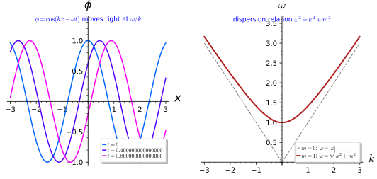
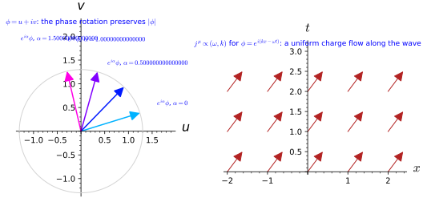
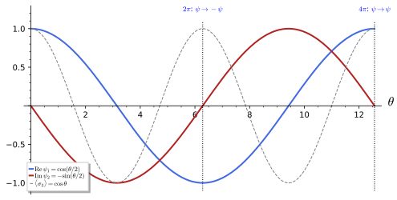
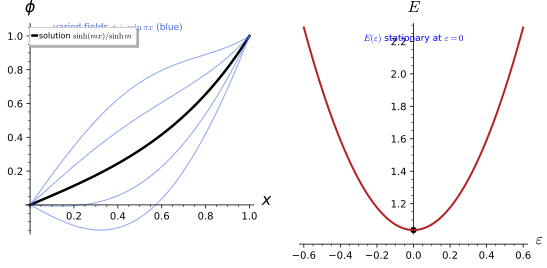
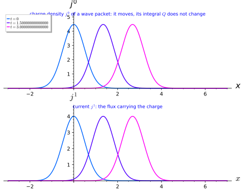

Classical field theory
A field assigns a value to every point of spacetime: a number, a complex number, a vector, a spinor. Classical field theory describes these objects, derives their equations of motion from an action by the variational principle, and turns every continuous symmetry of the action into a conserved current by Noether’s theorem. The chapter has two parts: the fields themselves (scalar, complex and vector fields, spinors and gamma matrices) and actions and symmetries (Euler-Lagrange equations, Noether currents and the energy-momentum tensor).
Fields
A field assigns a value to every point of spacetime: a number, a complex number, a vector, a spinor. This chapter introduces these field objects one by one, with their equations of motion and their symmetries, before the general machinery of actions in Section 1.2.1. It has three sections. Scalar fields defines fields and the Klein-Gordon equation, solves it by plane waves and reads off the dispersion relation \omega^2 = \vec k^2 + m^2, the first appearance of mass in field theory. Complex and vector fields combines two real scalars into a complex field with a phase-rotation symmetry and its conserved current, and introduces the vector potential and its field strength, with electromagnetism as the running example. Spinor fields and gamma matrices builds the Clifford algebra in the standard Weyl representation, the spinor representation of the Lorentz group, with its famous sign under a rotation by 2\pi, and the Dirac equation. Throughout, the signature is (+, -, -, -), so that \Box = \partial_t^2 - \nabla^2 and (\gamma^0)^2 = 1. Every statement is followed by three examples and three exercises with hidden solutions, and many exercises are solved in Sage.
For more on this topic, see Emam (2021, sec. 9.4).
Scalar fields
A field assigns a value to every point of spacetime, and the simplest field, a real scalar, is a single number per point: the Higgs field, the dilaton of Kaluza-Klein theory and the radius of the internal space are scalars. This section defines fields, the Klein-Gordon equation and its plane-wave solutions, whose dispersion relation is the first appearance of mass in field theory, and whose Kaluza-Klein version in Part III produces a tower of masses.
Fields on spacetime
Mechanics describes a finite number of coordinates that depend on time; a field theory describes infinitely many, one for every point of space. The definition below makes this precise by treating the field as a function on spacetime, or more generally as a section of a bundle, and isolates the simplest case of a single real number per point.
Definition 1 (Field) A field is a smooth function on a manifold, in physics on spacetime (Definition 6 of Differential geometry with a Lorentzian metric, Definition 38 of Differential geometry), with values in a vector space or, more generally, a section of a bundle over spacetime (Definition 14 of Homogeneous spaces and fibre bundles). A real scalar field \phi(x) takes real values and is a function in the sense of Definition 7 of Differential geometry: it does not change under a change of coordinates, \phi'(x') = \phi(x).
Veriphy. Pending.
Lean. Pending.
Sage. Pending.
Scalar fields are familiar long before relativity enters. The first example lists quantities from everyday physics and from particle physics that assign a single real number to each point, independently of the coordinates used.
Example 1 (Scalar fields in physics) The temperature of a room, the pressure of the air and the Newtonian gravitational potential \Phi(\vec x) are real scalar fields on space; the Higgs field (The Higgs mechanism) and the radius of the Kaluza-Klein circle (the dilaton of Part III) are real scalar fields on spacetime.
Not every field is a scalar, and the type of a field is fixed by how its components change with the coordinates. The second example previews the other types treated in this chapter and in the tensor calculus of Part I.
Example 2 (Fields of other types) A complex scalar (Section 1.1.2) has values in \mathbb{C}; a vector field A_\mu and a metric g_{\mu\nu} are tensor fields (Tensor fields); a spinor field (Section 1.1.3) takes values in a representation of the double cover of the Lorentz group. Each type has its own transformation law under coordinate changes, and the scalar’s is the trivial one.
A field can live on a spacetime with extra compact directions. On a product with a circle the periodic dependence on the circle coordinate can be expanded in a Fourier series (Fourier series), with a striking reinterpretation.
Example 3 (Fields on a product) A field on M_4 \times S^1 (Example 35 of Differential geometry) is a function \phi(x^\mu, y) periodic in the circle coordinate y; expanding in Fourier modes \phi = \sum_n\phi_n(x)e^{iny/R} turns one five-dimensional field into infinitely many four-dimensional ones, the Kaluza-Klein tower of Part III.
The first exercise makes the scalar transformation law concrete. A function given in Cartesian coordinates is rewritten in polar and in rotated coordinates, and its values at corresponding points are compared.
Exercise 1 (The scalar transformation law) Let \phi(x, y) = x^2 - y^2 on the plane. Write \phi' in polar coordinates (r, \varphi) and in coordinates (x', y') rotated by 45°, and check \phi'(x') = \phi(x) at the point (x, y) = (1, 0). Is \partial_x\phi a scalar?
With x = r\cos\varphi, y = r\sin\varphi, \phi' (r, \varphi) = r^2\cos2\varphi. With x = (x' - y')/\sqrt2, y = (x' + y')/\sqrt2 one finds x^2 - y^2 = -2x'y', so \phi'(x', y') = -2x'y'. The point (1, 0) has (r, \varphi) = (1, 0) and (x', y') = (1/\sqrt2, -1/\sqrt2), and \phi = 1, r^2\cos 0 = 1, -2\cdot\tfrac{1}{\sqrt2}\cdot (-\tfrac{1}{\sqrt2}) = 1: the same number in every chart. The derivative \partial_x\phi = 2x is not a scalar: at (1, 0) it is 2, but \partial_{x'}\phi' = -2y' = \sqrt2. The derivatives form a covector, the gradient of Exercise 2.
The derivatives of a scalar field are not scalars, and the second exercise identifies their transformation law. It connects the field-theory notation \partial_\mu\phi with the one-forms of Part I.
Exercise 2 (The gradient of a scalar is a covector) Show with the chain rule that \partial_\mu\phi transforms as \partial'_\mu\phi' = \frac{\partial x^\nu}{\partial x'^\mu}\partial_\nu\phi, the law Equation 16 of Differential geometry of a one-form, and verify it for \phi = x^2 - y^2 and polar coordinates. Why is \eta^{\mu\nu}\partial_\mu\phi\,\partial_\nu\phi a scalar?
Since \phi'(x') = \phi(x(x')), the chain rule gives \partial'_\mu\phi' = \frac{\partial x^\nu}{\partial x'^\mu}\partial_\nu\phi, which is Equation 16 of Differential geometry: d\phi = \partial_\mu\phi\,dx^\mu is a one-form. For \phi' = r^2\cos2\varphi: \partial_r\phi' = 2r\cos2\varphi, and \frac{\partial x}{\partial r}\partial_x\phi + \frac{\partial y}{\partial r}\partial_y\phi = \cos\varphi\cdot 2x - \sin\varphi\cdot 2y = 2r(\cos^2\varphi - \sin^2\varphi), the same; likewise \partial_\varphi\phi' = -2r^2\sin2\varphi = -r\sin\varphi\cdot 2x - r\cos\varphi \cdot 2y. The contraction g^{\mu\nu}\partial_\mu\phi\,\partial_\nu\phi of the inverse metric with two covectors is a scalar because the two Jacobians cancel the one in the transformation of g^{\mu\nu}; in Minkowski space and inertial coordinates g^{\mu\nu} = \eta^{\mu\nu}, and this is the kinetic term of every scalar Lagrangian.
The third exercise carries out the mode expansion of Example 3 for explicit fields on a circle. The Fourier coefficients are computed in Sage, and they show which four-dimensional modes a given profile excites.
Exercise 3 (Modes of a field on a circle) On a circle of radius R, compute the modes \phi_n = \frac{1}{2\pi R}\int_0^{2\pi R}\phi\,e^{-iny/R}\,dy of \phi = \cos^3(y/R) and of \phi = \sin^2(y/R) + \cos(2y/R), and check that the non-zero modes rebuild the first.
\cos^3(y/R) = \tfrac38(e^{iy/R} + e^{-iy/R}) + \tfrac18(e^{3iy/R} + e^{-3iy/R}): only n = \pm1, \pm3 appear. For the second field \sin^2 = \tfrac12 - \tfrac12\cos(2y/R), so the sum is \tfrac12 + \tfrac12\cos(2y/R), with a constant mode \tfrac12 and n = \pm2 with \tfrac14. A field on M_4 \times S^1 with such a profile in y excites only these four-dimensional modes:
y = var("y", domain="real"); R = var("R"); assume(R > 0)
def mode(f, n):
return (integrate(f * exp(-I * n * y / R), y, 0, 2 * pi * R) / (2 * pi * R)).simplify_full()
f = cos(y / R)**3
print("modes of cos(y/R)^3, n = -4..4:", [mode(f, n) for n in range(-4, 5)])
recon = sum(mode(f, n) * exp(I * n * y / R) for n in range(-3, 4))
print("the four non-zero modes rebuild the field:", bool((recon.rectform() - f).trig_reduce().simplify_full() == 0))
g = sin(y / R)**2 + cos(2 * y / R)
print("modes of sin(y/R)^2 + cos(2y/R), n = -3..3:", [mode(g, n) for n in range(-3, 4)])Output:
modes of cos(y/R)^3, n = -4..4: [0, 1/8, 0, 3/8, 0, 3/8, 0, 1/8, 0]
the four non-zero modes rebuild the field: True
modes of sin(y/R)^2 + cos(2y/R), n = -3..3: [0, 1/4, 0, 1/2, 0, 1/4, 0]A field needs an equation that determines its evolution, and the simplest relativistic one is second order in time and space derivatives with the two entering through the d’Alembertian. The definition below states it for a field of mass m.
Definition 2 (Klein-Gordon equation) The Klein-Gordon equation for a real scalar field of mass m on Minkowski space is (\Box + m^2)\phi = 0, \qquad \Box = \eta^{\mu\nu}\partial_\mu\partial_\nu = \partial_t^2 - \nabla^2 , \tag{1} with the d’Alembertian \Box built from the Minkowski metric (Example 143 of Differential geometry). On a curved spacetime \Box = g^{\mu\nu}\nabla_\mu\nabla_\nu with the Levi-Civita connection (The Levi-Civita connection). It is the Euler-Lagrange equation of the action of Section 1.2.1.
Veriphy. Pending.
Lean. Pending.
Sage. Pending.
Setting the mass to zero gives the oldest wave equation of physics. Its solutions are rigid profiles moving at the speed of light, which is the content of the first example.
Example 4 (The wave equation) For m = 0 Equation 1 is the wave equation \partial_t^2\phi = \nabla^2\phi, solved by any function f(\vec n\cdot\vec x - t) moving at unit speed (the speed of light) along the unit vector \vec n: the massless scalar propagates like light.
Static fields reveal the physical meaning of the mass term. Without time dependence the equation becomes an elliptic one whose spherically symmetric solution decays exponentially, the Yukawa potential.
Example 5 (Static solutions) For time-independent fields Equation 1 reads \nabla^2\phi = m^2\phi, whose spherically symmetric solution \phi = e^{-mr}/r is the Yukawa potential: a massive field mediates a force of range 1/m, which is why the Kaluza-Klein modes of Part III, with masses n/R, are invisible at distances larger than R.
Many calculations are clearest with a single space dimension. The third example writes the equation in 1 + 1 dimensions, the setting of the proposition on plane waves below.
Example 6 (One space dimension) In 1 + 1 dimensions Equation 1 is \partial_t^2\phi - \partial_x^2\phi + m^2\phi = 0, the form used for plane waves in Proposition 1; the field of a vibrating string with a restoring force is of this kind.
The first exercise checks the Yukawa solution of Example 5 by direct differentiation. The radial form of the Laplacian makes the computation a one-liner, and the result explains the range of nuclear forces.
Exercise 4 (The Yukawa potential) Show that \phi = e^{-mr}/r solves the static Klein-Gordon equation \nabla^2\phi = m^2\phi for r > 0, and interpret the length 1/m.
For a radial function \nabla^2\phi = \frac{1}{r}\frac{d^2}{dr^2}(r\phi), and r\phi = e^{-mr} has second derivative m^2e^{-mr}, so \nabla^2\phi = m^2\phi. The field falls off exponentially beyond the distance 1/m: a massive field mediates a force of finite range, which is how Yukawa predicted the pion mass from the range of the nuclear force, and why heavy Kaluza-Klein modes are unobservable at long distances.
Boundary conditions turn the continuum of solutions into a discrete set of modes. The second exercise solves the equation on an interval with fixed ends, by separation of variables as in Partial differential equations.
Exercise 5 (A field in a box) Find the solutions \phi = e^{-i\omega t}f(x) of the Klein-Gordon equation in 1 + 1 dimensions on 0 \le x \le L with f(0) = f(L) = 0. What is the lowest frequency, and what happens to it as L \to \infty?
Substituting gives f'' = -(\omega^2 - m^2)f, and the boundary conditions allow only f = \sin(n\pi x/L) with n = 1, 2, \dots and \omega_n^2 = (n\pi/L)^2 + m^2. The lowest frequency is \omega_1 = \sqrt{\pi^2/L^2 + m^2}, larger than m; as L \to \infty the levels crowd together and \omega_1 \to m, the rest energy. The discrete wave numbers n\pi/L are the same mechanism that makes the circle momenta n/R of Example 3 discrete, there by periodicity instead of boundary conditions.
The d’Alembertian is built from the Minkowski metric, so the equation should look the same to every inertial observer. The third exercise proves this for boosts with Sage and shows that a non-relativistic operator fails the test.
Exercise 6 (Lorentz invariance of the Klein-Gordon equation) In 1 + 1 dimensions let \phi'(t, x) = \phi(t\cosh w - x\sinh w, x\cosh w - t\sinh w). Show that (\Box + m^2)\phi' is (\Box + m^2)\phi evaluated at the boosted point, so that boosts map solutions to solutions, and that the heat operator \partial_t - \partial_x^2 does not have this property.
By the chain rule \partial_t\phi' = \cosh w\,\phi_T - \sinh w\,\phi_X and \partial_x\phi' = -\sinh w\,\phi_T + \cosh w\,\phi_X, so \partial_t^2\phi' - \partial_x^2\phi' = (\cosh^2 w - \sinh^2 w)(\phi_{TT} - \phi_{XX}) = \phi_{TT} - \phi_{XX}: the mixed terms cancel. For the heat operator the first derivative and the second derivative transform differently, and no such cancellation occurs:
t, x, w, m = var("t x w m", domain="real")
phi = function("phi")
tp, xp = t * cosh(w) - x * sinh(w), x * cosh(w) - t * sinh(w)
phib = phi(tp, xp)
lhs = diff(phib, t, 2) - diff(phib, x, 2) + m**2 * phib
T, X = var("T X")
rhs = (diff(phi(T, X), T, 2) - diff(phi(T, X), X, 2) + m**2 * phi(T, X)).subs(T=tp, X=xp)
print("(Box + m^2) phi' = [(Box + m^2) phi] at the boosted point:", bool((lhs - rhs).simplify_full() == 0))
heat = diff(phib, t) - diff(phib, x, 2)
heat_rhs = (diff(phi(T, X), T) - diff(phi(T, X), X, 2)).subs(T=tp, X=xp)
print("the heat operator d_t - d_x^2 is not boost invariant:", not bool((heat - heat_rhs).simplify_full() == 0))
print("the boost preserves t^2 - x^2:", bool((tp**2 - xp**2 - (t**2 - x**2)).simplify_full() == 0))Output:
(Box + m^2) phi' = [(Box + m^2) phi] at the boosted point: True
the heat operator d_t - d_x^2 is not boost invariant: True
the boost preserves t^2 - x^2: True
figures/plane_wave.sage.
Interactive figure (drag to rotate or zoom); the static version is above.
Plane waves and the dispersion relation
A linear equation with constant coefficients is solved by exponentials, and for a wave equation these are waves of a single wave number. The definition below names them and their geometric features; the interactive figure above lets the mass vary.
Definition 3 (Plane wave) A plane wave is a field of the form \phi = \cos(\vec k\cdot\vec x - \omega t) (or its complex version e^{i(\vec k\cdot\vec x - \omega t)}) with constant wave vector \vec k and frequency \omega: constant on the planes \vec k\cdot\vec x = \text{const} at each time, and moving along \vec k at the phase velocity \omega/|\vec k| (Figure 1).
Veriphy. Pending.
Lean. Pending.
Sage. Pending.
Linearity means that plane waves can be added. The first example states that they are enough to build every solution, the field-theory form of the Fourier transform (The Fourier transform).
Example 7 (Superpositions) Since Equation 1 is linear, sums of plane waves are solutions, and every solution is a superposition \int d^3k\,[a(\vec k)e^{i(\vec k\cdot\vec x - \omega t)} + \text{c.c.}] with \omega = \omega(\vec k): the plane waves are the modes of the field, and in the quantum theory (Quantisation in outline) each mode is an oscillator whose quanta are particles.
Two plane waves moving in opposite directions combine into a wave that does not move at all. The second example writes the standing wave this way and links it with the modes on a circle.
Example 8 (Standing waves) \cos kx\cos\omega t = \tfrac12[\cos(kx - \omega t) + \cos(kx + \omega t)] is a standing wave, the sum of two plane waves moving in opposite directions; on a circle of radius R the allowed k are n/R, and the standing waves are the Fourier modes of Example 3.
A wave carries two velocities, that of its crests and that of its envelope. The third example compares them for the massive field and finds that only the second respects the speed of light.
Example 9 (Phase and group velocity) For the massive field the phase velocity \omega/k = \sqrt{k^2 + m^2}/k exceeds the speed of light while the group velocity d\omega/dk = k/\sqrt{k^2 + m^2}, the velocity of a wave packet and of the particle, is less than it, and their product is 1 (Exercise 15).
A transverse wave has a direction of oscillation as well as a direction of propagation. The next example classifies the possibilities for a wave travelling along z, which is the polarisation of light. In vector form polarisation was defined in Definition 14 of Classical electromagnetism; the covariant treatment adds the transformation of the polarisation vector under boosts and gauge transformations.
Example 10 (Polarisation of a plane wave) A monochromatic wave along z has \vec E = \operatorname{Re}\bigl[(E_x, E_y, 0)e^{i(kz - \omega t)}\bigr] with complex amplitudes. If E_x and E_y have equal phases the tip of \vec E moves on a segment: linear polarisation. If E_y = \pm iE_x it moves on a circle: circular polarisation of helicity \pm1. In general it traces an ellipse. The four Stokes parameters I = |E_x|^2 + |E_y|^2, \quad Q = |E_x|^2 - |E_y|^2, \quad U = 2\operatorname{Re}(\bar E_xE_y), \quad V = 2\operatorname{Im}(\bar E_xE_y) are measurable intensities; V/I is the degree of circular polarisation, and a fully polarised wave has I^2 = Q^2 + U^2 + V^2 (Maggiore 2023, sec. 9.5).
Veriphy. Pending.
Lean. Pending.
Sage. Pending.
The first exercise reads the geometric data off a given plane wave in three dimensions. It is a warm-up in the vocabulary of the definition: wavefronts, wavelength, period and phase velocity.
Exercise 7 (Reading a plane wave) For \phi = \cos(x + 2y + 2z - 3t) find the wave vector, the wavefronts at t = 0, the wavelength, the period and the phase velocity. Which mass m makes it a solution of the Klein-Gordon equation?
\vec k = (1, 2, 2) and \omega = 3. At t = 0 the wavefronts of constant phase are the planes x + 2y + 2z = \text{const}, orthogonal to \vec k. The wavelength is 2\pi/|\vec k| = 2\pi/3, the period 2\pi/\omega = 2\pi/3, and the phase velocity \omega/|\vec k| = 1. Since \omega^2 = 9 = |\vec k|^2, the dispersion relation Equation 2 holds with m = 0: it is a massless wave, moving at the speed of light along \vec k/3.
The second exercise examines the standing wave of Example 8 more closely. It locates the points where the field never moves and checks the equation for the product form directly.
Exercise 8 (Nodes of a standing wave) Show that \phi = \cos kx\cos\omega t solves the Klein-Gordon equation in 1 + 1 dimensions exactly when \omega^2 = k^2 + m^2. Find its nodes, and show that on a circle of radius R periodicity requires k = n/R.
\partial_t^2\phi = -\omega^2\phi and \partial_x^2\phi = -k^2\phi, so (\Box + m^2)\phi = (-\omega^2 + k^2 + m^2)\phi, which vanishes identically exactly when \omega^2 = k^2 + m^2. The nodes are the zeros of \cos kx, the points x = (j + \tfrac12)\pi/k, j \in \mathbb{Z}, where the field vanishes at all times; between them the field oscillates in place. On the circle x \sim x + 2\pi R the function \cos kx is periodic only if 2\pi Rk \in 2\pi\mathbb{Z}, that is k = n/R.
A signal cannot travel with a single plane wave, which has no beginning and no end. The third exercise superposes two plane waves of nearby wave numbers and shows with Sage that their envelope moves at the group velocity.
Exercise 9 (Beats and the group velocity) Show that \cos(k_1x - \omega_1t) + \cos(k_2x - \omega_2t) = 2\cos\big(\tfrac{\Delta k\,x - \Delta\omega\,t}{2}\big) \cos(\bar kx - \bar\omega t) with \bar k, \bar\omega the averages, and that for Klein-Gordon waves the envelope velocity \Delta\omega/\Delta k tends to k/\sqrt{k^2 + m^2} as k_2 \to k_1. Evaluate both velocities for k = 3/4, m = 1.
The identity is \cos A + \cos B = 2\cos\frac{A - B}{2}\cos\frac{A + B}{2}. The fast factor moves at \bar\omega/\bar k, the phase velocity, and the slow envelope at \Delta\omega/\Delta k, which in the limit is d\omega/dk. For k = 3/4, m = 1 one has \omega = 5/4, the group velocity is 3/5 and the phase velocity 5/3, with product 1:
x, t, m = var("x t m", domain="real"); assume(m > 0)
k1, k2 = var("k1 k2", domain="real"); assume(k1 > 0, k2 > 0)
w = lambda k: sqrt(k**2 + m**2)
W1, W2 = var("W1 W2", domain="real") # stand for w(k1), w(k2); the identity holds for any values
s = cos(k1 * x - W1 * t) + cos(k2 * x - W2 * t)
kb, wb, dk, dw = (k1 + k2) / 2, (W1 + W2) / 2, k2 - k1, W2 - W1
prod = 2 * cos(dk * x / 2 - dw * t / 2) * cos(kb * x - wb * t)
print("sum = 2 cos(dk x/2 - dw t/2) cos(kbar x - wbar t):", bool((s - prod).trig_reduce().simplify_full() == 0))
h = var("h"); k = var("k", domain="real"); assume(k > 0)
v_env = ((w(k + h) - w(k)) / h)
print("envelope velocity dw/dk as k2 -> k1:", limit(v_env, h=0), " ; phase velocity:", w(k) / k)
print("at k = 3/4, m = 1: group velocity", (k / w(k)).subs(k=3/4, m=1), ", phase velocity", (w(k) / k).subs(k=3/4, m=1))Output:
sum = 2 cos(dk x/2 - dw t/2) cos(kbar x - wbar t): True
envelope velocity dw/dk as k2 -> k1: k/sqrt(k^2 + m^2) ; phase velocity: sqrt(k^2 + m^2)/k
at k = 3/4, m = 1: group velocity 3/5 , phase velocity 5/3The Stokes parameters of the previous example are a few lines of complex algebra. The next exercise computes them with Sage for the standard polarisations and checks their identity. The parameters were introduced in vector form in Definition 14 of Classical electromagnetism and computed in Exercise 238 of Classical electromagnetism; here they serve as a check of the covariant notation.
Exercise 10 (Stokes parameters) With Sage, compute (I, Q, U, V) for (E_x, E_y) = (a, be^{i\delta}) and check I^2 = Q^2 + U^2 + V^2. Evaluate them for linear polarisation along x and at 45°, for both circular polarisations and for (1, 2i)/\sqrt5. Write \vec E in the circular basis e_\pm = (1, \pm i)/\sqrt2 and show |c_+|^2 - |c_-|^2 = V (Maggiore 2023, sec. 9.5).
With the definitions of Example 10:
a, b, d = var('a b d'); assume(a > 0, b > 0, d, 'real')
def stokes(Ex, Ey):
S0 = abs(Ex)^2 + abs(Ey)^2; S1 = abs(Ex)^2 - abs(Ey)^2
S2 = 2 * (Ex.conjugate() * Ey).real(); S3 = 2 * (Ex.conjugate() * Ey).imag()
return [x.simplify_full() for x in (S0, S1, S2, S3)]
S0, S1, S2, S3 = stokes(a, b * exp(I * d))
print("general (a, b e^{i d}): I, Q, U, V =", S0, S1, S2, S3)
print("I^2 = Q^2 + U^2 + V^2:", bool((S0^2 - S1^2 - S2^2 - S3^2).simplify_full() == 0))
for name, (Ex, Ey) in [("linear along x", (1, 0)), ("linear at 45 deg", (1 / sqrt(2), 1 / sqrt(2))),
("circular, positive helicity", (1 / sqrt(2), I / sqrt(2))), ("circular, negative helicity", (1 / sqrt(2), -I / sqrt(2))),
("elliptic (1, 2i)/sqrt(5)", (1 / sqrt(5), 2 * I / sqrt(5)))]:
print("%-28s I, Q, U, V =" % name, stokes(SR(Ex), SR(Ey)))
ep = vector([1, I]) / sqrt(2); em = vector([1, -I]) / sqrt(2)
Ev = vector([a, b * exp(I * d)])
cp = (ep.conjugate() * Ev).simplify_full(); cm = (em.conjugate() * Ev).simplify_full()
print("E = c+ e+ + c- e-:", bool(((cp * ep + cm * em) - Ev).simplify_full() == 0), " |c+|^2 - |c-|^2 = V:", bool((cp * cp.conjugate() - cm * cm.conjugate() - S3).expand().simplify_full().simplify_trig() == 0))Output:
general (a, b e^{i d}): I, Q, U, V = a^2 + b^2 a^2 - b^2 2*a*b*cos(d) 2*a*b*sin(d)
I^2 = Q^2 + U^2 + V^2: True
linear along x I, Q, U, V = [1, 1, 0, 0]
linear at 45 deg I, Q, U, V = [1, 0, 1, 0]
circular, positive helicity I, Q, U, V = [1, 0, 0, 1]
circular, negative helicity I, Q, U, V = [1, 0, 0, -1]
elliptic (1, 2i)/sqrt(5) I, Q, U, V = [1, -3/5, 0, 4/5]
E = c+ e+ + c- e-: True |c+|^2 - |c-|^2 = V: TrueQ and U measure linear polarisation along the axes and along the diagonals, V the excess of positive over negative helicity. The identity says that the point (Q, U, V)/I lies on the unit sphere (the Poincaré sphere); partially polarised light lies inside it.
Veriphy. Pending.
Lean. Pending.
Sage. Pending.
The basis of circular polarisations is the natural one for angular momentum. The next exercise shows that any polarisation is a superposition of the two circular ones and relates them to helicity.
Exercise 11 (Circular polarisations as a basis) Show that e_\pm = (1, \pm i, 0)/\sqrt2 are orthonormal in \mathbb{C}^2, that a rotation by \alpha about z multiplies them by e^{\mp i\alpha}, and that linear polarisation along x is (e_+ + e_-)/\sqrt2. Why are \pm1 called the helicities? (Maggiore 2023, sec. 9.5)
\bar e_+\cdot e_- = \tfrac12(1 + i\cdot i) = 0 and \bar e_\pm\cdot e_\pm = 1. The rotation R_\alpha maps (1, \pm i) to (\cos\alpha \mp i\sin\alpha, \sin\alpha \pm i\cos\alpha) = e^{\mp i\alpha}(1, \pm i). Hence e_\pm are eigenvectors of the generator J_z of rotations about the direction of motion with eigenvalues \pm1: the projection of the photon’s spin on its momentum, the helicity. Adding them, (e_+ + e_-)/\sqrt2 = (1, 0, 0).
Veriphy. Pending.
Lean. Pending.
Sage. Pending.
Substituting a plane wave into a linear equation turns derivatives into multiplications, and the equation becomes an algebraic condition on \omega and \vec k. The definition below gives this condition its name.
Definition 4 (Dispersion relation) The condition on \omega and \vec k for a plane wave to solve a linear field equation is its dispersion relation; for the Klein-Gordon equation it is \omega^2 = \vec k^2 + m^2 , \tag{2} the relativistic relation E^2 = \vec p^2 + m^2 between the energy E = \hbar\omega and momentum \vec p = \hbar\vec k of a particle of mass m (Proposition 1).
Veriphy. Pending.
Lean. Pending.
Sage. Pending.
The massless case is the simplest dispersion relation, a cone in the space of (\omega, \vec k). The first example names the fields that obey it.
Example 11 (Massless fields) \omega = |\vec k|: all modes move at the speed of light, the dashed line of Figure 1; the photon and the graviton are massless, and so are the zero modes of the Kaluza-Klein towers.
With a mass the cone opens into a hyperboloid. The second example points out the gap below the rest energy and the approach to the massless line at high momentum.
Example 12 (Massive fields) \omega = \sqrt{\vec k^2 + m^2} \geq m: no mode has frequency below m, the rest energy; the hyperbola of Figure 1 approaches the massless line at large k, where the mass is negligible.
A momentum in a compact extra dimension looks like a mass to an observer who cannot resolve that dimension. The third example shows this for the circle, the central mechanism of Part III.
Example 13 (A Kaluza-Klein tower) For a massless field on M_4 \times S^1 the mode e^{iny/R} obeys \omega^2 = \vec k^2 + n^2/R^2: from the four-dimensional point of view it is a particle of mass |n|/R, and the five-dimensional dispersion relation becomes an infinite family of four-dimensional ones, the subject of Part III.
The first exercise expands the dispersion relation for slow particles. It recovers the rest energy, the non-relativistic kinetic energy and the Schrödinger equation from the Klein-Gordon equation.
Exercise 12 (The non-relativistic limit) Expand \omega = \sqrt{k^2 + m^2} for k \ll m. Then write \phi = e^{-imt}\psi in the 1 + 1-dimensional Klein-Gordon equation, drop \partial_t^2\psi, and identify the equation for \psi and its dispersion relation.
\omega = m + \frac{k^2}{2m} - \frac{k^4}{8m^3} + \dots: the rest energy, the kinetic energy p^2/2m and the first relativistic correction. Substituting, e^{imt}(\Box + m^2)(e^{-imt}\psi) = \partial_t^2\psi - 2im\,\partial_t\psi - \partial_x^2\psi, and dropping \partial_t^2\psi (slow compared with m\,\partial_t\psi) leaves i\partial_t\psi = -\frac{1}{2m}\partial_x^2\psi, the free Schrödinger equation (with \hbar = 1), whose plane waves have E = k^2/2m, the energy measured from the rest energy:
k, m, t, x = var("k m t x", domain="real"); assume(m > 0)
print("omega(k) for k << m:", taylor(sqrt(k**2 + m**2), k, 0, 6))
psi = function("psi")(t, x)
phi = exp(-I * m * t) * psi
kg = (diff(phi, t, 2) - diff(phi, x, 2) + m**2 * phi) * exp(I * m * t)
print("e^{imt} (Box + m^2)(e^{-imt} psi) =", kg.simplify_full())
schr = -2 * m * (I * diff(psi, t) + diff(psi, x, 2) / (2 * m))
print("equals d_t^2 psi - 2m [i d_t psi + d_x^2 psi/(2m)]:", bool((kg - diff(psi, t, 2) - schr).simplify_full() == 0))
print("Schrodinger plane wave e^{i(kx - Et)} needs E =", solve(I * (-I * var("E")) - k**2 / (2 * m) == 0, var("E")))Output:
omega(k) for k << m: 1/16*k^6/m^5 - 1/8*k^4/m^3 + 1/2*k^2/m + m
e^{imt} (Box + m^2)(e^{-imt} psi) = -2*I*m*diff(psi(t, x), t) + diff(psi(t, x), t, t) - diff(psi(t, x), x, x)
equals d_t^2 psi - 2m [i d_t psi + d_x^2 psi/(2m)]: True
Schrodinger plane wave e^{i(kx - Et)} needs E = [
E == 1/2*k^2/m
]A negative mass squared is not a misprint but the situation at the top of the Higgs potential. The second exercise asks what the dispersion relation predicts then.
Exercise 13 (A negative mass squared) Find the dispersion relation of (\Box - \mu^2)\phi = 0 with \mu > 0. Which wave numbers give real frequencies, and how do the other modes behave in time?
Plane waves give \omega^2 = k^2 - \mu^2. For |k| > \mu the frequency is real and the modes oscillate. For |k| < \mu, \omega = \pm i\sqrt{\mu^2 - k^2} and the modes are e^{ikx}e^{\pm\sqrt{\mu^2 - k^2}\,t}, one of which grows exponentially: long-wavelength perturbations are unstable, with the fastest growth rate \mu at k = 0. This is the instability of the field at a maximum of its potential, which drives it to the minimum in spontaneous symmetry breaking (The Higgs mechanism); such a field is not a particle travelling faster than light.
The third exercise derives the Kaluza-Klein tower of Example 13 from the five-dimensional equation. The sign of the extra term is fixed by the signature, in which the circle direction is spacelike.
Exercise 14 (Modes on a circle) For a massless scalar on M_4 \times S^1 with circle radius R, show that the Fourier mode \phi_n(x)e^{iny/R} satisfies a four-dimensional Klein-Gordon equation with mass |n|/R.
The five-dimensional d’Alembertian is \Box_4 - \partial_y^2 (the circle direction is spacelike, so it enters with a minus sign in our signature), and \partial_y^2 e^{iny/R} = -(n/R)^2e^{iny/R}, so (\Box_4 - \partial_y^2)\phi_n e^{iny/R} = (\Box_4 + n^2/R^2)\phi_n\,e^{iny/R}: each mode is a four-dimensional field of mass |n|/R, and n = 0 is massless. Periodicity in y with period 2\pi R forces n \in \mathbb{Z}.
The computation behind all of this is short enough to state in full. The proposition below records it in one space dimension, where the two second derivatives of a cosine are evaluated separately and then combined.
Proposition 1 (Plane waves and the Klein-Gordon equation) \partial_t^2\cos(kx - \omega t) = -\omega^2\cos(kx - \omega t), \partial_x^2\cos(kx - \omega t) = -k^2\cos(kx - \omega t), and (\partial_t^2 - \partial_x^2 + m^2)\cos(kx - \omega t) = 0 when \omega^2 = k^2 + m^2.
Veriphy. Pending.
Lean.
/-- The Klein-Gordon operator `□ + m² = ∂²_t − ∂²_x + m²` (signature `(+, −)`) annihilates the plane wave exactly
when `ω² = k² + m²`. -/
theorem planeWave_klein_gordon (k ω m t x : ℝ) (h : ω ^ 2 = k ^ 2 + m ^ 2) :
deriv (deriv (fun t => planeWave k ω t x)) t - deriv (deriv (fun x => planeWave k ω t x)) x
+ m ^ 2 * planeWave k ω t x = 0KaluzaKlein.Fields.planeWave_klein_gordon in KaluzaKlein/Foundations/Fields.lean, namespace KaluzaKlein.Fields
/-- `∂²_t cos (k x − ω t) = −ω² cos (k x − ω t)`. -/
theorem planeWave_tt (k ω t x : ℝ) :
deriv (deriv (fun t => planeWave k ω t x)) t = -ω ^ 2 * planeWave k ω t xKaluzaKlein.Fields.planeWave_tt in KaluzaKlein/Foundations/Fields.lean, namespace KaluzaKlein.Fields
/-- `∂²_x cos (k x − ω t) = −k² cos (k x − ω t)`. -/
theorem planeWave_xx (k ω t x : ℝ) :
deriv (deriv (fun x => planeWave k ω t x)) x = -k ^ 2 * planeWave k ω t xKaluzaKlein.Fields.planeWave_xx in KaluzaKlein/Foundations/Fields.lean, namespace KaluzaKlein.Fields
Sage. Exact computation (figures/plane_wave.sage).
A Pythagorean triple makes the proposition concrete with integers. The first example picks wave number and mass so that the frequency comes out rational.
Example 14 (A plane wave with integer data) For k = 3 and m = 4 the proposition requires \omega = 5: \phi = \cos(3x - 5t) has \partial_t^2\phi = -25\phi, \partial_x^2\phi = -9\phi, and -25 + 9 + 16 = 0. Its phase velocity is 5/3 and its group velocity 3/5.
The proposition is stated for the cosine, but the sine and the complex exponential follow at once. The second example explains why no separate verification is needed.
Example 15 (Sine and complex exponential) \sin(kx - \omega t) = \cos(kx - \omega t - \pi/2) is a shifted cosine, and the shift does not affect the two second derivatives; the complex wave e^{i(kx - \omega t)} = \cos(\cdot) + i\sin(\cdot) is a solution because the equation is linear with real coefficients. All three solve the equation under the same condition \omega^2 = k^2 + m^2.
In three space dimensions a plane wave depends on position only through \vec k\cdot\vec x. The third example reduces it to the one-dimensional statement by a rotation of axes.
Example 16 (Three space dimensions) Rotating the axes so that \vec k = (|\vec k|, 0, 0), the wave \cos(\vec k\cdot\vec x - \omega t) becomes \cos(|\vec k|x - \omega t), independent of y and z, and \nabla^2 reduces to \partial_x^2; since \nabla^2 is rotation invariant, the proposition with k = |\vec k| gives Equation 2 in 3 + 1 dimensions (Exercise 15).
The phase of a plane wave is a Lorentz scalar, so its wave four-vector transforms like a momentum. The next example uses this to derive the Doppler effect and the aberration of light.
Example 17 (Doppler effect and aberration) Let a source move with velocity \beta along x and emit light of frequency \omega_0 in its rest frame at the angle \theta'. Boosting k^\mu = \omega_0(1, \cos\theta', \sin\theta', 0) gives in the laboratory \omega = \frac{\omega_0}{\gamma(1 - \beta\cos\theta)}, \qquad \cos\theta = \frac{\cos\theta' + \beta}{1 + \beta\cos\theta'} . Ahead of the source (\theta = 0) the light is blueshifted by \sqrt{(1 + \beta)/(1 - \beta)}; at \theta = 90° in the laboratory it is redshifted by 1/\gamma, the transverse Doppler effect, pure time dilation. Light emitted sideways in the source frame appears at \cos\theta = \beta, so a fast source beams half of its light into a cone of half-angle \approx 1/\gamma (Maggiore 2023, sec. 9.6).
Veriphy. Pending.
Lean. Pending.
Sage. Pending.
The first exercise repeats the computation of the proposition in 3 + 1 dimensions with Sage. It also extracts the two velocities of Example 9 and their massless limit.
Exercise 15 (The dispersion relation in 3 + 1 dimensions) Apply the Klein-Gordon operator to a plane wave with Sage, solve for \omega, and compute the phase and group velocities and their massless limit.
t, x, y, z, m, w = var("t x y z m w", domain="real"); assume(m > 0)
k1, k2, k3 = var("k1 k2 k3", domain="real")
phi = cos(k1 * x + k2 * y + k3 * z - w * t)
box = diff(phi, t, 2) - diff(phi, x, 2) - diff(phi, y, 2) - diff(phi, z, 2) # Box = d_t^2 - nabla^2
KG = box + m**2 * phi
print("(Box + m^2) phi / phi =", (KG / phi).simplify_full())
wsol = solve(w**2 == k1**2 + k2**2 + k3**2 + m**2, w)
print("dispersion relation:", wsol)
k = var("k", domain="real"); assume(k > 0); wk = sqrt(k**2 + m**2)
print("phase velocity omega/k =", (wk / k).simplify_full(), " > 1 ; group velocity d omega/dk =", diff(wk, k).simplify_full(), " < 1 (the particle velocity)")
print("product of the two velocities:", ((wk / k) * diff(wk, k)).simplify_full(), " ; massless limit: both tend to", limit(diff(wk, k), m=0))Output:
(Box + m^2) phi / phi = k1^2 + k2^2 + k3^2 + m^2 - w^2
dispersion relation: [
w == -sqrt(k1^2 + k2^2 + k3^2 + m^2),
w == sqrt(k1^2 + k2^2 + k3^2 + m^2)
]
phase velocity omega/k = sqrt(k^2 + m^2)/k > 1 ; group velocity d omega/dk = k/sqrt(k^2 + m^2) < 1 (the particle velocity)
product of the two velocities: 1 ; massless limit: both tend to 1Veriphy. Pending.
Lean.
/-- `∂²_t cos (k x − ω t) = −ω² cos (k x − ω t)`. -/
theorem planeWave_tt (k ω t x : ℝ) :
deriv (deriv (fun t => planeWave k ω t x)) t = -ω ^ 2 * planeWave k ω t xKaluzaKlein.Fields.planeWave_tt in KaluzaKlein/Foundations/Fields.lean, namespace KaluzaKlein.Fields
Sage. Pending.
The proposition says “when”, and the second exercise establishes the converse. It shows that the dispersion relation is also necessary, so that it really characterises the plane-wave solutions.
Exercise 16 (The dispersion relation is necessary) Show that if \cos(kx - \omega t) solves (\partial_t^2 - \partial_x^2 + m^2)\phi = 0 for all t and x, then \omega^2 = k^2 + m^2. Does the same hold for \cos(kx - \omega t) + \cos(kx + \omega t)?
By the two derivative formulas, (\partial_t^2 - \partial_x^2 + m^2)\cos(kx - \omega t) = (k^2 + m^2 - \omega^2)\cos(kx - \omega t). At x = t = 0 the cosine equals 1, so the coefficient must vanish. For the sum the same factor multiplies 2\cos kx\cos\omega t, which is 2 at the origin, so again \omega^2 = k^2 + m^2: a standing wave is a solution under exactly the same condition as its two travelling components.
Light-cone coordinates factor the d’Alembertian into two first-order operators. The third exercise uses them to solve the massless equation completely and to rewrite the dispersion relation as a product.
Exercise 17 (Light-cone coordinates) With u = t - x, v = t + x, show that \partial_t^2 - \partial_x^2 = 4\partial_u\partial_v. Deduce that every solution of the massless equation is f(u) + g(v), and that e^{-i(p_uu + p_vv)} solves the massive equation iff 4p_up_v = m^2. Relate p_u, p_v to \omega, k.
\partial_t = \partial_u + \partial_v and \partial_x = -\partial_u + \partial_v, so \partial_t^2 - \partial_x^2 = (\partial_u + \partial_v)^2 - (\partial_v - \partial_u)^2 = 4\partial_u\partial_v. The massless equation \partial_u\partial_v\phi = 0 says that \partial_v\phi depends only on v, so \phi = f(u) + g(v): waves moving right and left at unit speed, d’Alembert’s solution (Partial differential equations). For the exponential, (4\partial_u\partial_v + m^2) gives -4p_up_v + m^2, which vanishes iff 4p_up_v = m^2. Comparing p_uu + p_vv = (p_u + p_v)t + (p_v - p_u)x with \omega t - kx gives \omega = p_u + p_v, k = p_u - p_v, and 4p_up_v = \omega^2 - k^2: the dispersion relation factored along the light cone.
The formulas of the Doppler example follow from one boost of a null vector. The next exercise carries out the boost with Sage and evaluates the beaming for three speeds.
Exercise 18 (Beaming of a fast source) With Sage, boost k'^\mu = \omega_0(1, \cos\theta', \sin\theta', 0) from the source frame to the laboratory, check that it stays null, derive both formulas of Example 17, and show that the direction \theta' = \pi/2 becomes \sin\theta = 1/\gamma. Give the half-angle of the forward cone and the transverse Doppler factor for \beta = 0.5, 0.9, 0.99 (Maggiore 2023, sec. 9.6).
The laboratory components are \omega = \gamma\omega_0(1 + \beta\cos\theta'), \omega\cos\theta = \gamma\omega_0(\cos\theta' + \beta):
b, tp, w0 = var('b tp w0'); assume(0 < b, b < 1, w0 > 0)
g = 1 / sqrt(1 - b^2)
kp = vector([w0, w0 * cos(tp), w0 * sin(tp), 0]) # in the source frame
Lb = matrix(SR, [[g, g * b, 0, 0], [g * b, g, 0, 0], [0, 0, 1, 0], [0, 0, 0, 1]]) # source frame -> lab frame
k = Lb * kp
w = k[0]; ct = (k[1] / k[0]).simplify_full()
print("lab frequency w =", w.simplify_full(), "; null:", bool((k[0]^2 - k[1]^2 - k[2]^2).simplify_full() == 0))
print("cos t = (cos t' + b)/(1 + b cos t'):", bool((ct - (cos(tp) + b) / (1 + b * cos(tp))).simplify_full() == 0))
print("w = w0/(gamma (1 - b cos t)):", bool((w - w0 / (g * (1 - b * ct))).simplify_full() == 0))
print("emitted at t' = pi/2 -> cos t =", ct.subs(tp=pi / 2), ", sin t = 1/gamma:", bool((sqrt(1 - ct.subs(tp=pi / 2)^2) - 1 / g).simplify_full() == 0))
for bv in (0.5, 0.9, 0.99):
print("beta = %.2f: half-angle of the forward cone %.2f deg, transverse Doppler w/w0 at t = 90 deg: %.4f" %
(bv, (arccos(bv) * 180 / pi).n(), (1 / g).subs(b=bv).n()))Output:
lab frequency w = -sqrt(-b^2 + 1)*(b*cos(tp) + 1)*w0/(b^2 - 1) ; null: True
cos t = (cos t' + b)/(1 + b cos t'): True
w = w0/(gamma (1 - b cos t)): True
emitted at t' = pi/2 -> cos t = b , sin t = 1/gamma: True
beta = 0.50: half-angle of the forward cone 60.00 deg, transverse Doppler w/w0 at t = 90 deg: 0.8660
beta = 0.90: half-angle of the forward cone 25.84 deg, transverse Doppler w/w0 at t = 90 deg: 0.4359
beta = 0.99: half-angle of the forward cone 8.11 deg, transverse Doppler w/w0 at t = 90 deg: 0.1411At \beta = 0.99 half of the light is inside 8°: the headlight effect behind synchrotron radiation and relativistic jets.
Veriphy. Pending.
Lean. Pending.
Sage. Pending.
Complex and vector fields
Two real scalars combine into one complex field with a new symmetry, the rotation of its phase, whose charge is the first example of a conserved quantity of a field; and a vector field, a one-form on spacetime, is the kind of field that gauge symmetry acts on. This section defines both, their transformation laws and their equations, with the electromagnetic potential as the running example of a vector field. The Lorentz transformations of vectors, tensors and spinors used here, with their index conventions, are developed systematically in The Lorentz and Poincaré groups, and Electrodynamics in covariant form adds the transformation of the fields under arbitrary boosts and the covariant Lorentz force.
Complex scalar fields
Charged particles need fields that can carry a charge, and a real field cannot, because a real field is its own antiparticle. The definition below packages two real scalars into one complex-valued field, with the normalisation used throughout the book.
Definition 5 (Complex scalar field) A complex scalar field is a smooth function \phi : M \to \mathbb{C}, equivalently a pair of real scalars, \phi = (u + iv)/\sqrt2, with complex conjugate \bar\phi = (u - iv)/\sqrt2 and modulus |\phi|^2 = \bar\phi\phi = \tfrac12(u^2 + v^2).
Veriphy. Pending.
Lean. Pending.
Sage. Pending.
The complex plane wave is the natural solution of the Klein-Gordon equation for a complex field. The first example notes that its real and imaginary parts are the real plane waves of the previous section.
Example 18 (Complex plane waves) \phi = e^{i(\vec k\cdot\vec x - \omega t)} solves the Klein-Gordon equation with \omega^2 = \vec k^2 + m^2, like its real and imaginary parts; in the quantum theory (Quantisation in outline) the positive-frequency wave multiplies the operator that annihilates a particle and its conjugate the operator that creates an antiparticle.
Complex fields appear wherever a charge is carried by a spinless particle. The second example lists the main cases in the Standard Model and in the models of later chapters.
Example 19 (Charged scalars) The Higgs field of the abelian Higgs model (The Higgs mechanism) is a complex scalar, and so is a charged pion; a doublet of complex scalars is the Higgs field of the electroweak theory. Complex fields are the fields that can carry a U(1) charge.
Instead of real and imaginary parts one can use modulus and phase. The third example introduces the polar form, which is singular at the zeros of the field but makes the phase symmetry manifest.
Example 20 (Polar form) Away from zeros, \phi = \rho e^{i\vartheta}/\sqrt2 with modulus \rho and phase \vartheta; the phase is the angle of Figure 2, defined up to 2\pi, and in the Higgs mechanism it becomes the longitudinal polarisation of a massive vector (The Higgs mechanism).
The first exercise translates the complex notation back into real components. It shows that a free complex field of mass m is nothing but two real fields of the same mass.
Exercise 19 (Complex field as two real fields) With \phi = (u + iv)/\sqrt2, express \partial_\mu\bar\phi\,\partial^\mu\phi and |\phi|^2 in terms of u and v, and show that \partial_\mu\bar\phi\,\partial^\mu\phi - m^2|\phi|^2 is the sum of two real Klein-Gordon Lagrangians \tfrac12\partial_\mu u\,\partial^\mu u - \tfrac12m^2u^2 and the same for v.
\partial_\mu\bar\phi\,\partial^\mu\phi = \tfrac12(\partial_\mu u - i\partial_\mu v)(\partial^\mu u + i\partial^\mu v) = \tfrac12(\partial_\mu u\,\partial^\mu u + \partial_\mu v\,\partial^\mu v), the cross terms \pm\tfrac{i}{2}\partial_\mu u\,\partial^\mu v cancelling, and |\phi|^2 = \tfrac12(u^2 + v^2). So the complex Lagrangian is \tfrac12(\partial u)^2 - \tfrac12m^2u^2 + \tfrac12(\partial v)^2 - \tfrac12m^2v^2: the factor 1/\sqrt2 in the definition is chosen precisely to give each real field the standard normalisation of Section 1.2.1.
The second exercise rewrites the kinetic term in the polar form of Example 20. The result separates the modulus, which behaves like an ordinary real field, from the phase, which enters only through its derivatives.
Exercise 20 (The kinetic term in polar form) For \phi = \rho e^{i\vartheta}/\sqrt2 show that \partial_\mu\bar\phi\,\partial^\mu\phi = \tfrac12\partial_\mu\rho\, \partial^\mu\rho + \tfrac12\rho^2\partial_\mu\vartheta\,\partial^\mu\vartheta. Why does \vartheta appear only through \partial_\mu\vartheta?
\partial_\mu\phi = \tfrac{1}{\sqrt2}e^{i\vartheta}(\partial_\mu\rho + i\rho\,\partial_\mu\vartheta) and \partial_\mu \bar\phi = \tfrac{1}{\sqrt2}e^{-i\vartheta}(\partial_\mu\rho - i\rho\,\partial_\mu\vartheta); the phases cancel in the product, and the cross terms \pm i\rho\,\partial_\mu\rho\,\partial^\mu\vartheta cancel too, leaving the stated sum. The phase appears only through its derivatives because the constant shift \vartheta \mapsto \vartheta + \alpha is the phase rotation of the next definition, a symmetry of the Lagrangian; at a vacuum with \rho = v \neq 0 the term \tfrac12v^2(\partial\vartheta)^2 is the kinetic term of a massless field, the Goldstone boson of spontaneous symmetry breaking.
Two real fields always combine into a complex one, but the result need not have the phase symmetry. The third exercise checks with Sage what goes wrong when the two masses differ.
Exercise 21 (Two real fields of different masses) Let u and v be real scalars with masses m_1 and m_2. Compute with Sage the change of \tfrac12(\partial u)^2 - \tfrac12m_1^2u^2 + \tfrac12(\partial v)^2 - \tfrac12m_2^2v^2 under the rotation of (u, v) by an angle a, and show that it vanishes for all a only if m_1 = m_2.
The kinetic terms are invariant, since (\partial u)^2 + (\partial v)^2 is the squared length of a rotated vector. The mass terms change by \tfrac12(m_1^2 - m_2^2)\sin a\,[\sin a\,(u^2 - v^2) + 2\cos a\,uv], which vanishes for all a and all field values only if m_1^2 = m_2^2. Then the Lagrangian is \partial_\mu\bar\phi\,\partial^\mu\phi - m^2|\phi|^2 with \phi = (u + iv)/\sqrt2, and the rotation is the phase rotation:
t, x, a, m1, m2 = var("t x a m1 m2", domain="real")
u, v = function("u")(t, x), function("v")(t, x)
def L(u, v):
return (diff(u, t)**2 - diff(u, x)**2 - m1**2 * u**2) / 2 + (diff(v, t)**2 - diff(v, x)**2 - m2**2 * v**2) / 2
ur, vr = u * cos(a) - v * sin(a), u * sin(a) + v * cos(a)
dL = (L(ur, vr) - L(u, v)).simplify_full()
print("change of L under the rotation:", dL.factor())
print("it vanishes for m1 = m2:", bool(dL.subs(m2=m1).simplify_full() == 0))
phi, phib = (u + I * v) / sqrt(2), (u - I * v) / sqrt(2)
m = var("m")
Lc = diff(phib, t) * diff(phi, t) - diff(phib, x) * diff(phi, x) - m**2 * phib * phi
print("for m1 = m2 = m: L = d phibar d phi - m^2 |phi|^2:", bool((Lc - L(u, v).subs(m1=m, m2=m)).simplify_full() == 0))Output:
change of L under the rotation: 1/2*(sin(a)*u(t, x)^2 + 2*cos(a)*u(t, x)*v(t, x) - sin(a)*v(t, x)^2)*(m1 + m2)*(m1 - m2)*sin(a)
it vanishes for m1 = m2: True
for m1 = m2 = m: L = d phibar d phi - m^2 |phi|^2: TrueThe phase of a complex number has no physical meaning in itself, and rotating the phases of all values at once should not change the physics. The definition below states this transformation and its group.
Definition 6 (Phase rotation) The phase rotation by a constant angle \alpha is the transformation \phi \mapsto e^{i\alpha}\phi, \bar\phi \mapsto e^{-i\alpha}\bar\phi; it preserves |\phi|^2 and \partial_\mu\bar\phi\,\partial^\mu\phi and forms the group U(1) acting on the field (Definition 9 of Group theory), a global U(1) symmetry. In terms of u, v it is the rotation of Example 314 of Differential geometry.
Veriphy. Pending.
Lean. Pending.
Sage. Pending.
Invariance under the phase rotation restricts the possible Lagrangians. The first example lists which simple combinations of \phi and \bar\phi survive and which do not.
Example 21 (Invariant combinations) |\phi|^2 and |\partial_\mu\phi|^2 are invariant (Proposition 2), so every Lagrangian built from them, such as \partial_\mu\bar\phi\,\partial^\mu\phi - m^2|\phi|^2 - \lambda|\phi|^4, has the global U(1) symmetry; \phi^2 and \phi + \bar\phi are not invariant.
Letting the angle depend on the point is a natural next step, and it fails in an instructive way. The second example computes the extra term generated by the derivative of the angle.
Example 22 (Local phase rotations) If \alpha depends on x, \partial_\mu(e^{i\alpha}\phi) = e^{i\alpha}(\partial_\mu\phi + i\partial_\mu\alpha\,\phi) and the kinetic term changes by terms proportional to \partial\alpha (Exercise 23): the global symmetry does not extend to a local one, which is what a gauge field repairs, as Abelian gauge invariance develops.
Every continuous symmetry comes with a conserved current, by Noether’s theorem. The third example writes down the current of the phase rotation and its interpretation as a particle number.
Example 23 (The charge) The Noether current of the phase rotation (Section 1.2.2), j^\mu = i(\bar\phi\partial^\mu\phi - \phi\partial^\mu\bar\phi), is conserved; for the plane wave it is a uniform flow along the wave (Figure 2), and its charge \int j^0\,d^3x counts particles minus antiparticles.

figures/complex_field_phase.sage.
Interactive figure (drag to rotate or zoom); the static version is above.
The first exercise sorts candidate interaction terms by their behaviour under the phase rotation. It introduces fields of different charges, which rotate by different multiples of the same angle.
Exercise 22 (Which terms are allowed?) Which of |\phi|^6, \phi^3 + \bar\phi^3, \bar\phi\,\partial_\mu\phi, \bar\phi\,\partial_\mu\phi\,\partial^\mu\phi are invariant under \phi \mapsto e^{i\alpha}\phi? If fields \phi_1, \phi_2, \phi_3 transform as \phi_j \mapsto e^{iq_j\alpha}\phi_j, when is \phi_1\phi_2\bar\phi_3 invariant?
A monomial with a factors of \phi or its derivatives and b factors of \bar\phi or its derivatives (for constant \alpha derivatives transform like the fields) picks up e^{i(a - b)\alpha}, so it is invariant iff a = b. Thus |\phi|^6 (a = b = 3) and \bar\phi\,\partial_\mu\phi (a = b = 1) are invariant, while \phi^3 + \bar\phi^3 (a - b = \pm3) and \bar\phi\,\partial_\mu\phi\,\partial^\mu\phi (a - b = 1) are not. With charges the phase is e^{i(q_1 + q_2 - q_3)\alpha}, so the term is invariant iff q_1 + q_2 = q_3: charge conservation at the vertex.
The second exercise verifies the invariance of the Lagrangian under constant phase rotations with Sage. It also computes the failure for position-dependent angles described in Example 22.
Exercise 23 (Global and local phase rotations) Check with Sage that the complex scalar Lagrangian is invariant under a constant phase rotation, and find how it changes under a position-dependent one.
t, x, al = var("t x al", domain="real")
u, v, m = [function(n)(t, x) for n in ["u", "v"]] + [var("m", domain="real")]
phi = u + I * v; phib = u - I * v
L = (diff(phib, t) * diff(phi, t) - diff(phib, x) * diff(phi, x)) - m**2 * phib * phi # eta^{mu nu} d_mu phibar d_nu phi, eta = diag(1, -1)
phi_r = exp(I * al) * phi; phib_r = exp(-I * al) * phib
L_r = (diff(phib_r, t) * diff(phi_r, t) - diff(phib_r, x) * diff(phi_r, x)) - m**2 * phib_r * phi_r
print("global rotation (alpha constant): L unchanged:", bool((L_r - L).simplify_full() == 0))
alf = function("alf")(t, x)
phi_l = exp(I * alf) * phi; phib_l = exp(-I * alf) * phib
L_l = (diff(phib_l, t) * diff(phi_l, t) - diff(phib_l, x) * diff(phi_l, x)) - m**2 * phib_l * phi_l
dL = (L_l - L).simplify_full()
print("local rotation (alpha(t, x)): L changes by terms proportional to d alpha:", bool(dL != 0), "; the change vanishes when d alpha = 0:", bool(dL.subs({diff(alf, t): 0, diff(alf, x): 0}).simplify_full() == 0))
print("|phi|^2 is invariant under any phase rotation:", bool((phib_l * phi_l - phib * phi).simplify_full() == 0))Output:
global rotation (alpha constant): L unchanged: True
local rotation (alpha(t, x)): L changes by terms proportional to d alpha: True ; the change vanishes when d alpha = 0: True
|phi|^2 is invariant under any phase rotation: TrueThe current of Example 23 is conserved only for fields that obey the equation of motion. The third exercise proves this and computes the charge density of a plane wave with Sage.
Exercise 24 (Conservation of the U(1) current) In 1 + 1 dimensions show that \partial_\mu j^\mu = i(\bar\phi\,\Box\phi - \phi\,\Box\bar\phi) for j^\mu = i(\bar\phi\partial^\mu\phi - \phi\partial^\mu\bar\phi), deduce conservation for solutions of the Klein-Gordon equation, check it for a superposition of two on-shell plane waves, and find j^0 for \phi = a e^{-i(\omega t - kx)}.
\partial_\mu j^\mu = i(\partial_\mu\bar\phi\,\partial^\mu\phi + \bar\phi\,\Box\phi - \partial_\mu\phi\,\partial^\mu\bar\phi - \phi\,\Box\bar\phi), and the first and third terms cancel. If \Box\phi = -m^2\phi (and so \Box\bar\phi = -m^2\bar\phi, m being real), the remaining terms give i(-m^2\bar\phi\phi + m^2\phi\bar\phi) = 0. For the single wave j^0 = 2\omega a^2 > 0:
t, x, m = var("t x m", domain="real")
f = function("f")(t, x); g = function("g")(t, x)
phi, phib = f + I * g, f - I * g
box = lambda F: diff(F, t, 2) - diff(F, x, 2)
j0 = I * (phib * diff(phi, t) - phi * diff(phib, t))
j1 = I * (phib * (-diff(phi, x)) - phi * (-diff(phib, x))) # d^1 = -d_1
div = diff(j0, t) + diff(j1, x)
print("d_mu j^mu = i(phibar Box phi - phi Box phibar):", bool((div - I * (phib * box(phi) - phi * box(phib))).simplify_full() == 0))
a, b, k1, k2 = var("a b k1 k2", domain="real")
w1, w2 = sqrt(k1**2 + m**2), sqrt(k2**2 + m**2)
psi = a * exp(-I * (w1 * t - k1 * x)) + b * exp(-I * (w2 * t - k2 * x)); psib = psi.conjugate()
J0 = I * (psib * diff(psi, t) - psi * diff(psib, t)); J1 = I * (-psib * diff(psi, x) + psi * diff(psib, x))
print("conserved for two on-shell plane waves:", bool((diff(J0, t) + diff(J1, x)).simplify_full() == 0))
print("charge density of one wave a e^{-i(wt - kx)}: j^0 =", (I * (psib * diff(psi, t) - psi * diff(psib, t))).subs(b=0).simplify_full())Output:
d_mu j^mu = i(phibar Box phi - phi Box phibar): True
conserved for two on-shell plane waves: True
charge density of one wave a e^{-i(wt - kx)}: j^0 = 2*sqrt(k1^2 + m^2)*a^2Vector fields
The electromagnetic field is described by a potential with four components that mix under Lorentz transformations. The definition below identifies this potential with a one-form, the object of Part I that is naturally integrated along curves.
Definition 7 (Vector field on spacetime) A vector field A_\mu(x) in the sense of field theory is a one-form (Definition 27 of Differential geometry) on spacetime, A = A_\mu dx^\mu, with the transformation law Equation 16 of Differential geometry under coordinate changes; its index is raised with the metric, A^\mu = \eta^{\mu\nu}A_\nu, and A_0 is its time component, \vec A its space components.
Veriphy. Pending.
Lean. Pending.
Sage. Pending.
The scalar and vector potentials of electrodynamics are the four components of a single field. The first example spells out the identification and the signs that the signature introduces.
Example 24 (The electromagnetic potential) A^\mu = (\Phi, \vec A), that is A_\mu = (\Phi, -\vec A), collects the electrostatic potential \Phi and the magnetic vector potential \vec A; the electric and magnetic fields are its derivatives, \vec E = -\nabla\Phi - \partial_t\vec A, \vec B = \nabla \times\vec A (Example 28).
A gauge field of a non-abelian group carries an extra index. The second example describes it as a collection of vector fields labelled by a basis of the Lie algebra.
Example 25 (Non-abelian gauge fields) A Yang-Mills field (Yang-Mills theory) is a one-form with values in a Lie algebra, A_\mu = A^a_\mu T_a: \dim G vector fields at once, transforming into each other under the gauge group.
Vector fields can also arise from components of fields of higher rank. The third example points to the most important case of this book, a vector hidden in a higher-dimensional metric.
Example 26 (The Kaluza-Klein vector) The off-diagonal components g_{\mu 5} of a five-dimensional metric form a four-dimensional vector field, the Kaluza-Klein gauge field of Part III: a vector field can hide inside a tensor field of higher rank.
Splitting a vector field into a part without curl and a part without divergence is the basis of the Coulomb gauge. The next example shows the decomposition in Fourier space, where it is a projection.
Example 27 (Transverse and longitudinal parts) Every vector field on \mathbb{R}^3 decaying at infinity splits as \vec V = \vec V_\parallel + \vec V_\perp with \nabla\times\vec V_\parallel = 0 and \nabla\cdot\vec V_\perp = 0. In Fourier space \tilde V_\parallel = \hat k(\hat k\cdot\tilde V) and \tilde V_\perp = \tilde V - \hat k(\hat k\cdot\tilde V), the projections on and orthogonal to \vec k. In position space \vec V_\parallel = -\nabla\phi with \nabla^2\phi = -\nabla\cdot\vec V, which is non-local: \vec V_\parallel(\vec x) depends on \vec V everywhere, through the Coulomb kernel 1/(4\pi|\vec x - \vec y|) (Maggiore 2023, Problem 11.1).
Veriphy. Pending.
Lean. Pending.
Sage. Pending.
The first exercise practises raising and lowering indices with the Minkowski metric. It computes the invariant square of a potential and classifies it by sign.
Exercise 25 (Raising and lowering an index) For A^\mu = (\Phi, \vec A) find A_\mu and A_\mu A^\mu. Classify A^\mu = (2, 1, 0, 0), (1, 1, 0, 0) and (0, 0, 3, 4) as timelike, null or spacelike, and give A_\mu for each.
A_\mu = \eta_{\mu\nu}A^\nu = (\Phi, -\vec A) and A_\mu A^\mu = \Phi^2 - |\vec A|^2. For (2, 1, 0, 0): A_\mu = (2, - 1, 0, 0), square 3 > 0, timelike. For (1, 1, 0, 0): A_\mu = (1, -1, 0, 0), square 0, null. For (0, 0, 3, 4): A_\mu = (0, 0, -3, -4), square -25 < 0, spacelike. In the signature (+, -, -, -) timelike vectors have positive square.
Under a boost the scalar and vector potentials mix, just as time and space do. The second exercise computes the mixing and checks that the invariant square is unchanged.
Exercise 26 (Boosting a potential) A boost of rapidity w along x acts as A'^0 = \cosh w\,A^0 + \sinh w\,A^1, A'^1 = \sinh w\,A^0 + \cosh w\,A^1. Show that A'_\mu A'^\mu = A_\mu A^\mu. What are the potentials seen by a moving observer if in the original frame there is only an electrostatic potential \Phi?
(A'^0)^2 - (A'^1)^2 = (\cosh^2 w - \sinh^2 w)((A^0)^2 - (A^1)^2) = (A^0)^2 - (A^1)^2, the cross terms \pm 2\cosh w \sinh w A^0A^1 cancelling, and A^2, A^3 are untouched. From A^\mu = (\Phi, 0, 0, 0) the boost gives A'^\mu = (\Phi\cosh w, \Phi\sinh w, 0, 0): a vector potential appears, and with it, for a non-uniform \Phi, a magnetic field. Electric and magnetic effects are frame-dependent parts of one field.
A one-form can have vanishing exterior derivative without being the derivative of a function. The third exercise exhibits this for the potential outside a thin solenoid, and computes its flux with Sage.
Exercise 27 (The potential of a thin solenoid) Let \vec A = \frac{\Phi_B}{2\pi r}\hat e_\varphi outside the z-axis, that is \vec A\cdot d\vec x = \frac{\Phi_B}{2\pi} d\varphi. Show with Sage that \nabla \times \vec A = 0 for r > 0, that \oint\vec A\cdot d\vec x = \Phi_B around the axis, and that \vec A = \nabla(\Phi_B\varphi/2\pi) locally but not globally.
In Cartesian components \vec A = \frac{\Phi_B}{2\pi}\big(\frac{-y}{r^2}, \frac{x}{r^2}, 0\big), whose curl vanishes away from the axis. The line integral around a circle is \Phi_B, the magnetic flux confined in the solenoid (Stokes’ theorem applied to a disc that crosses the axis). Locally \vec A is the gradient of \Phi_B\varphi/2\pi, but \varphi is not a single-valued function around the axis, so \vec A cannot be removed by a gauge transformation: a charged particle encircling the solenoid feels the flux through its phase (the Aharonov-Bohm effect), although \vec B = 0 along its path:
x, y, z, P = var("x y z P", domain="real")
r2 = x**2 + y**2
A = vector([-P * y / (2 * pi * r2), P * x / (2 * pi * r2), 0])
curl = vector([diff(A[2], y) - diff(A[1], z), diff(A[0], z) - diff(A[2], x), diff(A[1], x) - diff(A[0], y)])
print("B = curl A for r > 0:", curl.simplify_full())
s, R = var("s R"); assume(R > 0)
c = vector([R * cos(s), R * sin(s), 0])
lineint = integrate((A.subs(x=c[0], y=c[1]) * diff(c, s)).simplify_full(), s, 0, 2 * pi)
print("line integral of A around a circle of radius R:", lineint)
lam = P * atan2(y, x) / (2 * pi)
print("locally A = grad(Phi phi/(2 pi)):", (vector([diff(lam, x), diff(lam, y), 0]) - A).simplify_full())Output:
B = curl A for r > 0: (0, 0, 0)
line integral of A around a circle of radius R: P
locally A = grad(Phi phi/(2 pi)): (0, 0, 0)In the Coulomb gauge only the transverse part of the vector potential is dynamical. The next exercise shows this and counts the polarisations of the free field again. The vector-form statement is in Proposition 6 of Classical electromagnetism and Example 227 of Classical electromagnetism.
Exercise 28 (The Coulomb gauge) Show that every A_\mu is gauge equivalent to one with \nabla\cdot\vec A = 0, that in this gauge Gauss’s law gives \nabla^2A_0 = -\rho, so A_0 is fixed instantaneously by the charges, and that in vacuum A_0 = 0 and \vec A satisfies the wave equation with \vec k\cdot\vec\epsilon = 0: two polarisations (Maggiore 2023, sec. 9.3).
Under A_\mu \to A_\mu + \partial_\mu\lambda, \vec A = (A^i) changes by -\nabla\lambda, so \nabla^2\lambda = \nabla\cdot\vec A makes the new \vec A divergence free (Example 27: the gauge removes \vec A_\parallel). Gauss’s law \nabla\cdot\vec E = \rho with \vec E = -\nabla A_0 - \partial_t\vec A gives -\nabla^2A_0 = \rho. In vacuum with decaying fields A_0 = 0, and the remaining equations reduce to \Box\vec A = 0 with \nabla\cdot\vec A = 0; a plane wave \vec\epsilon e^{i(\vec k\cdot\vec x - \omega t)} needs \vec k\cdot\vec\epsilon = 0, two transverse directions, as in Exercise 29.
Veriphy. Pending.
Lean. Pending.
Sage. Pending.
The potential is not observable by itself, since adding a gradient changes nothing physical. The definition below extracts the combination of its derivatives that is unaffected by such a change.
Definition 8 (Field strength of a vector field) The field strength of A_\mu is the antisymmetric tensor field (Definition 32 of Differential geometry) F_{\mu\nu} = \partial_\mu A_\nu - \partial_\nu A_\mu, the exterior derivative F = dA (Definition 35 of Differential geometry); it is unchanged by A_\mu \mapsto A_\mu + \partial_\mu\lambda for any function \lambda, since d^2\lambda = 0, and it satisfies dF = 0, the Bianchi identity.
Veriphy. Pending.
Lean. Pending.
Sage. Pending.
The six independent components of an antisymmetric 4 \times 4 tensor match the six components of \vec E and \vec B. The first example identifies them, with the signs fixed by A_i = -A^i.
Example 28 (Electric and magnetic fields) F_{0i} = \partial_tA_i - \partial_i A_0 = E_i and F_{ij} = \partial_iA_j - \partial_jA_i = -\epsilon_{ijk}B_k (with A_i = -A^i): the six components of F are \vec E and \vec B, and dF = 0 contains the two homogeneous Maxwell equations \nabla\cdot \vec B = 0 and \nabla\times\vec E + \partial_t\vec B = 0.
A plane-wave potential gives the simplest non-trivial field strength. The second example computes it and shows that one polarisation produces no field at all.
Example 29 (An electromagnetic wave) A_\mu = \epsilon_\mu\cos(\vec k\cdot\vec x - \omega t) with a constant polarisation \epsilon_\mu has F_{\mu\nu} = (k_\mu\epsilon_\nu - k_\nu\epsilon_\mu)\sin(\vec k\cdot\vec x - \omega t) with k_\mu = (\omega, -\vec k), so that \vec k\cdot\vec x - \omega t = -k_\mu x^\mu: an electromagnetic wave, whose field strength vanishes when \epsilon_\mu \propto k_\mu, a pure gauge polarisation.
In two spacetime dimensions the field strength has a single component. The third example uses this to show that electromagnetism there has no waves.
Example 30 (One space dimension) In 1 + 1 dimensions F has the single component F_{01} = \partial_tA_1 - \partial_xA_0, the electric field, and Maxwell’s equations force it to be constant (Exercise 31): there are no electromagnetic waves and no photons in two spacetime dimensions.
Charge conservation is built into Maxwell’s equations. The next example derives it from the antisymmetry of the field strength, before any action is written. In vector form this is Example 134 of Classical electromagnetism; the covariant form shows that it follows from the antisymmetry of F^{\mu\nu} alone.
Example 31 (Maxwell’s equations imply charge conservation) The inhomogeneous equations are \partial_\mu F^{\mu\nu} = j^\nu, with j^\nu = (\rho, \vec j): for \nu = 0 Gauss’s law \nabla\cdot\vec E = \rho, for \nu = i the Ampère-Maxwell law \nabla\times\vec B - \partial_t\vec E = \vec j. Since F^{\mu\nu} is antisymmetric and \partial_\mu\partial_\nu symmetric, \partial_\nu\partial_\mu F^{\mu\nu} = 0, hence \partial_\nu j^\nu = \partial_t\rho + \nabla\cdot\vec j = 0: the equations are inconsistent unless the source is conserved. The displacement current \partial_t\vec E is exactly what this requires (Maggiore 2023, sec. 8.3).
Veriphy. Pending.
Lean. Pending.
Sage. Pending.
The gauge freedom of Definition 8 can be used to simplify the potential. The next example imposes the Lorenz gauge and finds what freedom is left. In vector form the Lorenz and Coulomb gauges are Proposition 6 of Classical electromagnetism; the covariant form adds that the Lorenz condition is Lorentz invariant.
Example 32 (The Lorenz gauge) Given any A_\mu, the gauge function \lambda with \Box\lambda = -\partial^\mu A_\mu makes \partial^\mu A'_\mu = 0, and then \partial_\mu F^{\mu\nu} = j^\nu becomes \Box A^\nu = j^\nu: four decoupled wave equations, each solved by the retarded Green’s function. The condition does not fix A: transformations with \Box\lambda = 0 preserve it. Of the four components of a free wave the condition removes one and these residual transformations another, leaving the two physical polarisations of Exercise 29.
Veriphy. Pending.
Lean. Pending.
Sage. Pending.
Under a boost the electric and magnetic fields mix, since they are components of one tensor. The next example writes the transformation and its two invariants.
Example 33 (How \vec E and \vec B transform) For a boost with velocity v along x (c = 1), F'_{\mu\nu} = (\Lambda^{-1})^\alpha{}_\mu(\Lambda^{-1})^\beta{}_\nu F_{\alpha\beta} gives E'_x = E_x, \quad E'_y = \gamma(E_y - vB_z), \quad E'_z = \gamma(E_z + vB_y), \qquad B'_x = B_x, \quad B'_y = \gamma(B_y + vE_z), \quad B'_z = \gamma(B_z - vE_y) . The combinations F_{\mu\nu}F^{\mu\nu} = 2(\vec B^2 - \vec E^2) and \vec E\cdot\vec B (proportional to F_{\mu\nu}\tilde F^{\mu\nu}) are invariant. A pure electric field in one frame is seen as electric and magnetic in another; a field with \vec E\cdot\vec B \neq 0 is never purely electric or purely magnetic (Maggiore 2023, sec. 8.5).
Veriphy. Pending.
Lean. Pending.
Sage. Pending.
A point charge in uniform motion carries a field that is the boosted Coulomb field. The next example describes its shape, which flattens as the speed grows. Example 254 of Classical electromagnetism obtained this field from the Liénard-Wiechert formula at the retarded time; the covariant derivation needs only a boost of the Coulomb field.
Example 34 (The field of a uniformly moving charge) Boosting the Coulomb field of a charge q at rest gives, at the vector \vec R from the present position of the charge to the observer, \vec E = \frac{q}{4\pi}\,\frac{1 - v^2}{\bigl(1 - v^2\sin^2\psi\bigr)^{3/2}}\,\frac{\vec R}{R^3}, \qquad \vec B = \vec v\times\vec E , with \psi the angle between \vec R and \vec v. The field points from the present position, not the retarded one, and is weakened by 1 - v^2 along the motion and strengthened by \gamma across it: for v \to 1 it is concentrated in a thin disc, the field of a plane wave pulse (Maggiore 2023, sec. 10.3).
Veriphy. Pending.
Lean. Pending.
Sage. Pending.
When the electric field is weaker than a perpendicular magnetic field, a boost removes it altogether. The next example finds the frame, which explains the drift of charges in crossed fields.
Example 35 (Crossed fields and the drift velocity) Let \vec E = E\hat y and \vec B = B\hat z with 0 < E < B, so \vec E\cdot\vec B = 0 and \vec B^2 - \vec E^2 > 0. In the frame moving with \vec v = \vec E\times\vec B/B^2 = (E/B)\hat x, the transformation of Example 33 gives E'_y = \gamma(E - vB) = 0 and B'_z = \sqrt{B^2 - E^2}: a pure magnetic field, in which a charge moves on circles. In the laboratory the circles drift with \vec v, independently of the charge and mass: the \vec E\times\vec B drift of plasma physics. For E > B the field can instead be made purely electric (Maggiore 2023, sec. 8.5).
Veriphy. Pending.
Lean. Pending.
Sage. Pending.
The first exercise works out the field strength of the plane wave of Example 29. Counting the polarisations that survive gauge invariance and the field equations gives the two helicities of light.
Exercise 29 (An electromagnetic plane wave) For A_\mu = \epsilon_\mu\cos(\vec k\cdot\vec x - \omega t) compute F_{\mu\nu}, show that it vanishes for \epsilon_\mu \propto k_\mu, and count the physical polarisations.
\partial_\mu A_\nu = k_\mu\epsilon_\nu\sin(\cdot) with k_\mu = (\omega, -\vec k), since \partial_\mu(\vec k\cdot\vec x - \omega t) = -k_\mu, so F_{\mu\nu} = (k_\mu\epsilon_\nu - k_\nu\epsilon_\mu)\sin(\cdot), antisymmetric and vanishing when \epsilon \propto k: that polarisation is the gauge transformation A \to A + d\lambda with \lambda \propto \sin(\cdot). Maxwell’s equations require k\cdot\epsilon = 0 and k^2 = 0; of the four components of \epsilon one is removed by k\cdot\epsilon = 0 and one is pure gauge, leaving the two transverse polarisations of light.
The Bianchi identity holds for every potential, not just for solutions of Maxwell’s equations. The second exercise verifies it in full generality with Sage and decodes it into vector notation.
Exercise 30 (The Bianchi identity and the homogeneous Maxwell equations) For an arbitrary A_\mu(t, x, y, z), verify with Sage that \partial_\lambda F_{\mu\nu} + \partial_\mu F_{\nu\lambda} + \partial_\nu F_{\lambda\mu} = 0, and that with A_\mu = (\Phi, -\vec A), E_i = F_{0i} and F_{ij} = -\epsilon_{ijk}B_k it states \nabla\cdot\vec B = 0 and \nabla\times\vec E + \partial_t\vec B = 0.
Each term of the cyclic sum is a second derivative of A, and they cancel in pairs because partial derivatives commute; this is d(dA) = 0. The triple (\lambda, \mu, \nu) = (1, 2, 3) gives \nabla\cdot\vec B = 0, and the triples containing 0 give Faraday’s law:
X = var("t x y z", domain="real")
A = [function("A%d" % i)(*X) for i in range(4)]
F = [[diff(A[n], X[m]) - diff(A[m], X[n]) for n in range(4)] for m in range(4)]
ok = all(bool((diff(F[m][n], X[l]) + diff(F[n][l], X[m]) + diff(F[l][m], X[n])).simplify_full() == 0) for l in range(4) for m in range(4) for n in range(4))
print("Bianchi identity d_[l F_mn] = 0 for all 64 index triples:", ok)
E = vector([F[0][i] for i in (1, 2, 3)])
B = vector([-F[2][3], -F[3][1], -F[1][2]]) # F_{ij} = -eps_{ijk} B_k
Phi, Av = A[0], vector([-A[1], -A[2], -A[3]])
grad = lambda f: vector([diff(f, X[i]) for i in (1, 2, 3)])
curl = lambda V: vector([diff(V[2], X[2]) - diff(V[1], X[3]), diff(V[0], X[3]) - diff(V[2], X[1]), diff(V[1], X[1]) - diff(V[0], X[2])])
div = lambda V: sum(diff(V[i], X[i + 1]) for i in range(3))
print("E = -grad Phi - d_t A:", bool((E - (-grad(Phi) - diff(Av, X[0]))).simplify_full() == 0), "; B = curl A:", bool((B - curl(Av)).simplify_full() == 0))
print("div B = 0:", bool(div(B).simplify_full() == 0), "; curl E + d_t B = 0:", bool((curl(E) + diff(B, X[0])).simplify_full() == 0))Output:
Bianchi identity d_[l F_mn] = 0 for all 64 index triples: True
E = -grad Phi - d_t A: True ; B = curl A: True
div B = 0: True ; curl E + d_t B = 0: TrueThe inhomogeneous Maxwell equations come from an action, the subject of Section 1.2.1. The third exercise derives them in 1 + 1 dimensions with Sage, where they turn out to be very restrictive.
Exercise 31 (Maxwell’s equations in 1 + 1 dimensions) Derive the Euler-Lagrange equations of -\tfrac14F_{\mu\nu}F^{\mu\nu} for A_0 and A_1, check the gauge invariance of F, and interpret the result.
t, x = var("t x", domain="real")
A0, A1, lam = [function(n)(t, x) for n in ["A0", "A1", "lam"]]
F01 = diff(A1, t) - diff(A0, x) # F_{01} = d_0 A_1 - d_1 A_0
eta = diagonal_matrix(SR, [1, -1]) # signature (+, -)
L = -F01 * F01 * eta[0, 0] * eta[1, 1] / 2 # -1/4 F_{mu nu} F^{mu nu} = (1/2) F_{01}^2, the same in either signature
# Euler-Lagrange for A_nu: d_mu (dL/d(d_mu A_nu)) - dL/dA_nu = 0, computed with jet variables
a0, a1, a0t, a0x, a1t, a1x = var("a0 a1 a0t a0x a1t a1x")
Lj = L.subs({diff(A1, t): a1t, diff(A1, x): a1x, diff(A0, t): a0t, diff(A0, x): a0x}).subs({A0: a0, A1: a1})
back = {a1t: diff(A1, t), a1x: diff(A1, x), a0t: diff(A0, t), a0x: diff(A0, x), a0: A0, a1: A1}
EL0 = (diff(Lj, a0t).subs(back).diff(t) + diff(Lj, a0x).subs(back).diff(x) - diff(Lj, a0).subs(back)).simplify_full()
EL1 = (diff(Lj, a1t).subs(back).diff(t) + diff(Lj, a1x).subs(back).diff(x) - diff(Lj, a1).subs(back)).simplify_full()
print("equation for A_0:", EL0, "= 0 (Gauss's law, d_x F_{10} = 0)")
print("equation for A_1:", EL1, "= 0 (d_t F_{01} = 0)")
F_gauge = (diff(A1 + diff(lam, x), t) - diff(A0 + diff(lam, t), x)).simplify_full()
print("F is gauge invariant under A -> A + d lambda:", bool((F_gauge - F01).simplify_full() == 0))
E = function("E")(t, x)
print("both equations say that F_01 is constant: d_x F_01 = 0 and d_t F_01 = 0; in 1+1 dimensions there are no propagating")
print("electromagnetic waves, only a constant electric field (the photon has no transverse directions there).")
print("EL_0 = -d_x F_{01} and EL_1 = d_t F_{01} as expressions:", bool((EL0 + diff(F01, x)).simplify_full() == 0), bool((EL1 - diff(F01, t)).simplify_full() == 0))Output:
equation for A_0: diff(A0(t, x), x, x) - diff(A1(t, x), t, x) = 0 (Gauss's law, d_x F_{10} = 0)
equation for A_1: -diff(A0(t, x), t, x) + diff(A1(t, x), t, t) = 0 (d_t F_{01} = 0)
F is gauge invariant under A -> A + d lambda: True
both equations say that F_01 is constant: d_x F_01 = 0 and d_t F_01 = 0; in 1+1 dimensions there are no propagating
electromagnetic waves, only a constant electric field (the photon has no transverse directions there).
EL_0 = -d_x F_{01} and EL_1 = d_t F_{01} as expressions: True TrueThe transformation law and the invariants of Example 33 follow from matrix multiplication. The next exercise performs it with Sage and checks the crossed-field frame.
Exercise 32 (Invariants of the electromagnetic field) With Sage, build F_{\mu\nu} from \vec E and \vec B with the conventions of Example 28, transform it by a boost along x, read off \vec E' and \vec B', check that \vec B^2 - \vec E^2 and \vec E\cdot\vec B are invariant, and verify the frame of Example 35.
With \Lambda the boost x'^\mu = \Lambda^\mu{}_\nu x^\nu, the covariant components transform with \Lambda^{-1}:
v = var('v'); assume(-1 < v, v < 1); g = 1 / sqrt(1 - v^2)
E = vector(SR, var('E1 E2 E3')); B = vector(SR, var('B1 B2 B3'))
def F_low(E, B):
F = matrix(SR, 4, 4)
for i in range(3):
F[0, i + 1] = E[i]; F[i + 1, 0] = -E[i]
eps = lambda i, j, k: sign(Permutation([i + 1, j + 1, k + 1]).signature()) if len({i, j, k}) == 3 else 0
for i in range(3):
for j in range(3):
F[i + 1, j + 1] = -sum(eps(i, j, k) * B[k] for k in range(3))
return F
eta = diagonal_matrix(SR, [1, -1, -1, -1])
L = matrix(SR, [[g, -g * v, 0, 0], [-g * v, g, 0, 0], [0, 0, 1, 0], [0, 0, 0, 1]]) # x'^mu = L^mu_nu x^nu
Linv = L.inverse()
Fp = (Linv.transpose() * F_low(E, B) * Linv).simplify_full() # F'_{mu nu} = (L^-1)^a_mu (L^-1)^b_nu F_ab
Ep = vector([Fp[0, i + 1] for i in range(3)]); Bp = vector([-Fp[2, 3], Fp[1, 3], -Fp[1, 2]])
gam = var('gamma')
tog = lambda e: (e * sqrt(1 - v^2)).simplify_full() * gam # write the factor 1/sqrt(1 - v^2) as gamma
print("E' =", [Ep[0]] + [tog(e) for e in Ep[1:]])
print("B' =", [Bp[0]] + [tog(b) for b in Bp[1:]])
inv = lambda F: (F * eta * F.transpose() * eta).trace() # F_{mu nu} F^{mu nu} = -tr(F eta F eta) up to sign; computed directly below
FF = lambda E, B: sum(F_low(E, B)[a, b] * (eta * F_low(E, B) * eta)[a, b] for a in range(4) for b in range(4))
print("F.F = 2(B^2 - E^2):", bool((FF(E, B) - 2 * (B * B - E * E)).simplify_full() == 0))
print("B'^2 - E'^2 = B^2 - E^2:", bool(((Bp * Bp - Ep * Ep) - (B * B - E * E)).simplify_full() == 0))
print("E'.B' = E.B:", bool((Ep * Bp - E * B).simplify_full() == 0))
Ey, Bz = var('Ey Bz'); assume(Bz > 0, Ey > 0, Ey < Bz)
Ec = vector(SR, [0, Ey, 0]); Bc = vector(SR, [0, 0, Bz])
Fc = (Linv.transpose() * F_low(Ec, Bc) * Linv).subs(v=Ey / Bz).simplify_full()
print("crossed fields in the frame v = E/B: E' =", [Fc[0, i + 1] for i in range(3)], " B'_z =", (-Fc[1, 2]).simplify_full())Output:
E' = [E1, -(B3*v - E2)*gamma, (B2*v + E3)*gamma]
B' = [B1, (E3*v + B2)*gamma, -(E2*v - B3)*gamma]
F.F = 2(B^2 - E^2): True
B'^2 - E'^2 = B^2 - E^2: True
E'.B' = E.B: True
crossed fields in the frame v = E/B: E' = [0, 0, 0] B'_z = sqrt(Bz^2 - Ey^2)The components along the boost are unchanged and the transverse ones mix with factor \gamma; both invariants are preserved, and at v = E/B the crossed fields become \vec E' = 0, B' = \sqrt{B^2 - E^2}.
Veriphy. Pending.
Lean. Pending.
Sage. Pending.
A charge in a constant electric field accelerates forever but never reaches the speed of light. The next exercise solves its motion exactly, the hyperbolic motion of the Rindler observer.
Exercise 33 (Motion in a constant electric field) A particle of mass m and charge q starts at rest at the origin in \vec E = E\hat x (c = 1). Solve d\vec p/dt = q\vec E with \vec p = \gamma m\vec v, find v(t), x(t) and the proper time, and show that x(t) is a hyperbola in spacetime (Maggiore 2023, Problem 8.3).
p = qEt, so v = \tfrac{qEt/m}{\sqrt{1 + (qEt/m)^2}} < 1 and, integrating, x = \tfrac m{qE}\bigl(\sqrt{1 + (qEt/m)^2} - 1\bigr). With \alpha = qE/m, (x + 1/\alpha)^2 - t^2 = 1/\alpha^2: a hyperbola with constant proper acceleration \alpha, the worldline of a uniformly accelerated (Rindler) observer, taken up again in Exercise 2 of General relativity. The proper time is \tau = \int dt/\gamma = \alpha^{-1}\operatorname{arsinh}(\alpha t), so t = \alpha^{-1}\sinh\alpha\tau grows exponentially in proper time.
Veriphy. Pending.
Lean. Pending.
Sage. Pending.
In a magnetic field the force does no work, so the speed is constant. The next exercise uses this to solve the motion and find the relativistic cyclotron frequency.
Exercise 34 (Motion in a constant magnetic field) For m\,d(\gamma\vec v)/dt = q\vec v\times\vec B with constant \vec B = B\hat z, show that |\vec v| and \gamma are constant, that v_z is constant, and that the transverse motion is a circle with angular frequency \omega = qB/(\gamma m) and radius p_\perp/(qB) (Maggiore 2023, Problem 8.4).
The force q\vec v\times\vec B is orthogonal to \vec v and does no work, so the energy \gamma m is constant: \gamma and |\vec v| are constant. Then \gamma m\dot{\vec v} = q\vec v\times\vec B is the non-relativistic equation with mass \gamma m: v_z is constant and (v_x, v_y) rotates with \omega = qB/(\gamma m), on a circle of radius v_\perp/\omega = \gamma mv_\perp/(qB) = p_\perp/(qB). Fast particles circulate more slowly, which is why cyclotrons fail at relativistic energies and synchrotrons raise B with the energy.
Veriphy. Pending.
Lean. Pending.
Sage. Pending.
The field of a moving charge can be found without solving any wave equation, by boosting the Coulomb field. The next exercise derives Example 34 in this way. The vector-form derivation through the retarded potentials is Exercise 259 of Classical electromagnetism; the boost replaces it by a Lorentz transformation of a static field.
Exercise 35 (The boosted Coulomb field) A charge q rests at the origin of a frame K' that moves with velocity v along x relative to K. Using the transformation of Example 33 (with v \to -v, from K' to K), find \vec E and \vec B in K at t = 0, and show that they take the form of Example 34.
In K', \vec E' = \tfrac{q}{4\pi}\vec r'/r'^3 and \vec B' = 0. Inverting the boost: E_x = E'_x, E_{y, z} = \gamma E'_{y, z}, \vec B = \vec v\times\vec E. At t = 0, x' = \gamma x, y' = y, z' = z, so \vec E = \tfrac{q\gamma}{4\pi}\vec R/(\gamma^2x^2 + y^2 + z^2)^{3/2} with \vec R = (x, y, z) from the present position. Writing x = R\cos\psi, \gamma^2x^2 + y^2 + z^2 = \gamma^2R^2(1 - v^2\sin^2\psi), and \gamma/\gamma^3 = 1 - v^2 gives the stated field. It is radial from the present position although the field propagates at the speed of light, because uniform motion is predictable.
Veriphy. Pending.
Lean. Pending.
Sage. Pending.
The basic fact behind the phase symmetry is elementary: multiplying by a unit complex number does not change the modulus. The proposition below records it for the squared modulus, the form that enters the Lagrangian.
Proposition 2 (Invariance of the modulus) |e^{i\alpha}\phi|^2 = |\phi|^2 for every complex \phi and real \alpha.
Veriphy. Pending.
Lean.
/-- The phase rotation `φ ↦ e^{iα} φ` preserves `|φ|²`. -/
theorem phase_rotation_normSq (φ : ℂ) (α : ℝ) :
Complex.normSq (Complex.exp (α * Complex.I) * φ) = Complex.normSq φKaluzaKlein.Fields.phase_rotation_normSq in KaluzaKlein/Foundations/Fields.lean, namespace KaluzaKlein.Fields
Sage. Exact computation (figures/complex_field_phase.sage).
A numerical case shows the proposition at work. The first example rotates a complex number with integer components by a right angle.
Example 36 (A rotation by a right angle) For \phi = 3 + 4i and \alpha = \pi/2, e^{i\alpha}\phi = i(3 + 4i) = -4 + 3i, and |{-4} + 3i|^2 = 16 + 9 = 25 = | 3 + 4i|^2; for \alpha = \pi the value is -\phi, again of modulus 5.
In real components the proposition is a familiar statement about rotation matrices. The second example rewrites it in terms of the pair (u, v) of Definition 5.
Example 37 (The real picture) With \phi = (u + iv)/\sqrt2, multiplication by e^{i\alpha} acts on (u, v) by the matrix \begin{pmatrix} \cos\alpha & -\sin\alpha \\ \sin\alpha & \cos\alpha \end{pmatrix}, which is orthogonal, so u^2 + v^2 and hence |\phi|^2 = \tfrac12(u^2 + v^2) are preserved.
The proposition is pointwise, so it holds even when the angle varies from point to point. The third example contrasts this with the derivative terms, which are not preserved.
Example 38 (Pointwise invariance) For \alpha(x) depending on the point, |e^{i\alpha(x)}\phi(x)|^2 = |\phi(x)|^2 at every x, so potential terms V(|\phi|^2) are invariant even under local phase rotations; only the kinetic term fails (Example 22).
The first exercise proves the proposition by hand in two different ways. Both use only elementary properties of the modulus and of complex conjugation.
Exercise 36 (Two proofs) Prove |e^{i\alpha}\phi|^2 = |\phi|^2 (a) from |zw| = |z||w| and |e^{i\alpha}| = 1, (b) from |z|^2 = \bar zz and \overline{e^{i\alpha}} = e^{-i\alpha}. Where is the reality of \alpha used?
- |e^{i\alpha}\phi| = |e^{i\alpha}||\phi| and |e^{i\alpha}|^2 = \cos^2\alpha + \sin^2\alpha = 1. (b) \overline{e^{i\alpha}\phi}\,e^{i\alpha}\phi = e^{-i\alpha}e^{i\alpha}\bar\phi\phi = \bar\phi\phi. Both use \alpha \in \mathbb{R}: for complex \alpha = a + ib, |e^{i\alpha}| = e^{-b} \neq 1 unless b = 0, and multiplication by e^{i\alpha} is then a rotation combined with a rescaling.
The phase rotations are not the only maps that preserve the modulus. The second exercise finds all of them among the real-linear maps of the plane, and meets charge conjugation.
Exercise 37 (All maps that preserve the modulus) Which complex-linear maps \phi \mapsto c\phi preserve |\phi|^2? Which real-linear maps of \mathbb{C} = \mathbb{R}^2 do? Show that \phi \mapsto \bar\phi is one of them but is not a phase rotation, and describe what it does to the current j^\mu of Example 23.
|c\phi|^2 = |c|^2|\phi|^2, so |c| = 1, c = e^{i\alpha}: exactly the phase rotations. Real-linear maps preserving u^2 + v^2 form the orthogonal group O(2), the rotations (phase rotations) and the reflections, which are \phi \mapsto e^{i\alpha}\bar\phi. Conjugation reverses the orientation of the plane, so it is not a rotation. It exchanges \phi and \bar\phi in j^\mu = i(\bar\phi\partial^\mu\phi - \phi\partial^\mu\bar\phi), changing its sign: it is charge conjugation, exchanging particles and antiparticles.
Several complex fields can be rotated into each other, not just multiplied by a phase. The third exercise extends the proposition to a doublet and unitary matrices, and checks it with Sage.
Exercise 38 (Doublets and unitary rotations) For a doublet \Phi = (\phi_1, \phi_2) and U = e^{i\beta}\begin{pmatrix} a & -\bar b \\ b & \bar a\end{pmatrix}, show with Sage that |U\Phi|^2 = (|a|^2 + |b|^2)|\Phi|^2, so that U preserves \Phi^\dagger\Phi when |a|^2 + |b|^2 = 1, and that a non-unitary matrix such as \begin{pmatrix} 1 & 1 \\ 0 & 1 \end{pmatrix} does not.
U^\dagger U = (|a|^2 + |b|^2)\,1, so |U\Phi|^2 = \Phi^\dagger U^\dagger U\Phi = (|a|^2 + |b|^2)|\Phi|^2. With |a|^2 + |b|^2 = 1 these matrices form U(2); the common phase rotations e^{i\beta}1 are the case a = 1, b = 0, and the SU(2) part (\beta = 0) is the electroweak symmetry acting on the Higgs doublet. The shear changes the modulus:
a1, a2, b1, b2, be, p1, q1, p2, q2 = var("a1 a2 b1 b2 be p1 q1 p2 q2", domain="real")
a, b = a1 + I * a2, b1 + I * b2
U = exp(I * be) * matrix(SR, [[a, -b.conjugate()], [b, a.conjugate()]])
Phi = vector(SR, [p1 + I * q1, p2 + I * q2])
norm = lambda V: (V.conjugate() * V).expand()
UU = (U.conjugate_transpose() * U).simplify_full()
print("U^dagger U = (|a|^2 + |b|^2) 1:", bool(UU == (a1**2 + a2**2 + b1**2 + b2**2) * identity_matrix(SR, 2)))
diff_norm = (norm(U * Phi) - (a1**2 + a2**2 + b1**2 + b2**2) * norm(Phi)).simplify_full()
print("|U Phi|^2 = (|a|^2 + |b|^2) |Phi|^2, so = |Phi|^2 when |a|^2 + |b|^2 = 1:", bool(diff_norm == 0))
M = matrix(SR, [[1, 1], [0, 1]])
print("a shear [[1, 1], [0, 1]] does not preserve it: |M Phi|^2 - |Phi|^2 =", (norm(M * Phi) - norm(Phi)).simplify_full())Output:
U^dagger U = (|a|^2 + |b|^2) 1: True
|U Phi|^2 = (|a|^2 + |b|^2) |Phi|^2, so = |Phi|^2 when |a|^2 + |b|^2 = 1: True
a shear [[1, 1], [0, 1]] does not preserve it: |M Phi|^2 - |Phi|^2 = 2*p1*p2 + p2^2 + 2*q1*q2 + q2^2Spinor fields and gamma matrices
Electrons, quarks and the gravitino are not scalars or vectors but spinors: fields that change sign under a rotation by 2\pi, and that therefore transform under the double cover SU(2) of the rotation group (Lie groups) and its Lorentzian version. This section defines gamma matrices, the Clifford relations, spinors and the Dirac equation; supersymmetry, developed in The superalgebra, pairs spinors with scalars and vectors.
Gamma matrices
Dirac looked for a first-order equation whose square is the Klein-Gordon equation, and this requires coefficients whose products reproduce the metric. The definition below states the algebraic relations these coefficients must satisfy, in our signature.
Definition 9 (Gamma matrices) The gamma matrices of d-dimensional Minkowski space are d matrices \gamma^\mu satisfying the Clifford relations \gamma^\mu\gamma^\nu + \gamma^\nu\gamma^\mu = 2\eta^{\mu\nu}\,1 , \tag{3} so that (\gamma^0)^2 = 1, (\gamma^i)^2 = -1 in the signature (+, -, -, -) and distinct gamma matrices anticommute. In four dimensions they are 4 \times 4 complex matrices, unique up to similarity.
Veriphy. Pending.
Lean. Pending.
Sage. Pending.
The representation used throughout the book is built from the Pauli matrices in 2 \times 2 blocks. The first example writes it down and relates it to the two-component notation of supersymmetry.
Example 39 (The Weyl representation) In 2 \times 2 blocks, \gamma^0 = \begin{pmatrix} 0 & 1 \\ 1 & 0 \end{pmatrix} and \gamma^k = \begin{pmatrix} 0 & \sigma_k \\ -\sigma_k & 0 \end{pmatrix} with the Pauli matrices Equation 3 of Lie groups and Lie algebras satisfy Equation 3 (Proposition 3, Exercise 43); they are the standard Weyl (chiral) matrices, \gamma^\mu = \begin{pmatrix} 0 & \sigma^\mu \\ \bar\sigma^\mu & 0 \end{pmatrix} with \sigma^\mu = (1, \sigma_k) and \bar\sigma^\mu = (1, -\sigma_k), the blocks used later in The superalgebra.
The size of the gamma matrices depends on the dimension. The second example shows that two dimensions need only 2 \times 2 matrices and states the general rule.
Example 40 (Two dimensions) In 1 + 1 dimensions, \gamma^0 = \sigma_1 and \gamma^1 = i\sigma_2 satisfy (\gamma^0)^2 = 1, (\gamma^1)^2 = - 1, \gamma^0\gamma^1 = -\gamma^1\gamma^0: 2 \times 2 gamma matrices suffice, and in d dimensions the irreducible gamma matrices have size 2^{\lfloor d/2\rfloor}, which is 32 for the eleven dimensions of supergravity (Eleven-dimensional supergravity).
The Clifford relations make sense for any metric. The third example takes the Euclidean metric of three-dimensional space and finds that the Pauli matrices already solve them.
Example 41 (Euclidean signature) With \delta^{\mu\nu} in place of \eta^{\mu\nu} the Clifford relations are \{\gamma^\mu, \gamma^\nu\} = 2\delta^{\mu\nu}, satisfied in three dimensions by the Pauli matrices themselves, \sigma_a\sigma_b + \sigma_b\sigma_a = 2\delta_{ab} (Equation 3 of Lie groups and Lie algebras): the Pauli matrices are the gamma matrices of Euclidean \mathbb{R}^3.
The first exercise checks the two-dimensional gamma matrices of Example 40 by hand. It also builds the two-dimensional analogue of the chirality matrix.
Exercise 39 (Gamma matrices in two dimensions) Verify the Clifford relations for \gamma^0 = \sigma_1, \gamma^1 = i\sigma_2 with \eta = \operatorname{diag}(1, -1). Show that \gamma_* = \gamma^0\gamma^1 satisfies \gamma_*^2 = 1 and anticommutes with both, and find its eigenvalues.
\sigma_1^2 = 1; (i\sigma_2)^2 = -\sigma_2^2 = -1; \sigma_1(i\sigma_2) + (i\sigma_2)\sigma_1 = i\{\sigma_1, \sigma_2\} = 0. Then \gamma_* = i\sigma_1\sigma_2 = i(i\sigma_3) = -\sigma_3, so \gamma_*^2 = 1 with eigenvalues \pm1, and \gamma_*\gamma^0 = \gamma^0\gamma^1\gamma^0 = -\gamma^0\gamma^0\gamma^1 = -\gamma^0\gamma_*, likewise for \gamma^1. The two eigenvectors of \sigma_3 are the two chiralities in two dimensions, each a one-component spinor.
Traces of products of gamma matrices are the bread and butter of scattering calculations. The second exercise derives the basic trace identities with Sage from the explicit Weyl matrices.
Exercise 40 (Trace identities) With the Weyl matrices, compute with Sage \operatorname{tr}\gamma^\mu, \operatorname{tr}\gamma^\mu\gamma^\nu, the traces of all products of three and four gamma matrices, and \operatorname{tr}\gamma_5. Explain the results with the Clifford relations alone.
\operatorname{tr}\gamma^\mu\gamma^\nu = \tfrac12\operatorname{tr}\{\gamma^\mu, \gamma^\nu\} = 4\eta^{\mu\nu} by cyclicity. An odd number of gamma matrices has zero trace: inserting \gamma_5^2 = 1 and anticommuting \gamma_5 through gives \operatorname{tr}(\dots) = -\operatorname{tr}(\dots). For four, moving \gamma^\mu to the right with the Clifford relations gives \operatorname{tr}\gamma^\mu\gamma^\nu\gamma^\rho\gamma^\sigma = 4(\eta^{\mu\nu}\eta^{\rho\sigma} - \eta^{\mu\rho}\eta^{\nu\sigma} + \eta^{\mu\sigma}\eta^{\nu\rho}):
s = [matrix(SR, [[0, 1], [1, 0]]), matrix(SR, [[0, -I], [I, 0]]), matrix(SR, [[1, 0], [0, -1]])]
Z, one = zero_matrix(SR, 2), identity_matrix(SR, 2)
g = [block_matrix([[Z, one], [one, Z]], subdivide=False)] + [block_matrix([[Z, s[i]], [-s[i], Z]], subdivide=False) for i in range(3)]
eta = diagonal_matrix(SR, [1, -1, -1, -1]); R4 = range(4)
print("tr gamma^mu = 0:", all(G.trace() == 0 for G in g))
print("tr gamma^mu gamma^nu = 4 eta^{mu nu}:", all((g[a] * g[b]).trace() == 4 * eta[a, b] for a in R4 for b in R4))
print("trace of a product of three gammas = 0:", all((g[a] * g[b] * g[c]).trace() == 0 for a in R4 for b in R4 for c in R4))
print("four gammas:", all((g[a] * g[b] * g[c] * g[d]).trace() == 4 * (eta[a, b] * eta[c, d] - eta[a, c] * eta[b, d] + eta[a, d] * eta[b, c]) for a in R4 for b in R4 for c in R4 for d in R4))
g5 = I * g[0] * g[1] * g[2] * g[3]
print("tr gamma_5 = 0:", g5.trace() == 0, "; tr gamma_5 gamma^0 gamma^1 gamma^2 gamma^3 =", (g5 * g[0] * g[1] * g[2] * g[3]).trace())Output:
tr gamma^mu = 0: True
tr gamma^mu gamma^nu = 4 eta^{mu nu}: True
trace of a product of three gammas = 0: True
four gammas: True
tr gamma_5 = 0: 0 == 0 ; tr gamma_5 gamma^0 gamma^1 gamma^2 gamma^3 = -4*IThe gamma matrices are unique only up to a change of basis, and different bases are useful for different purposes. The third exercise relates the Weyl matrices to the Dirac representation, convenient for particles at rest, with Sage.
Exercise 41 (The Dirac representation) Show with Sage that \gamma^0_D = \begin{pmatrix} 1 & 0 \\ 0 & -1 \end{pmatrix}, \gamma^k_D = \begin{pmatrix} 0 & \sigma_k \\ -\sigma_k & 0 \end{pmatrix} satisfy the Clifford relations, and that \gamma^\mu_D = U\gamma^\mu U^{\mathsf T} with U = \tfrac{1}{\sqrt2}\begin{pmatrix} 1 & 1 \\ -1 & 1 \end{pmatrix} (in blocks). What is \gamma_5 there?
U is orthogonal (a rotation by 45° in each pair of components), so conjugation by it preserves the Clifford relations. It maps \begin{pmatrix} 0 & 1 \\ 1 & 0 \end{pmatrix} to \begin{pmatrix} 1 & 0 \\ 0 & -1 \end{pmatrix} and leaves the \gamma^k unchanged. In the Dirac representation \gamma^0 is diagonal, so a particle at rest has only upper components, but \gamma_5 = \begin{pmatrix} 0 & 1 \\ 1 & 0 \end{pmatrix} is off-diagonal, and chirality mixes upper and lower components; the Weyl basis makes the opposite choice:
s = [matrix(SR, [[0, 1], [1, 0]]), matrix(SR, [[0, -I], [I, 0]]), matrix(SR, [[1, 0], [0, -1]])]
Z, one = zero_matrix(SR, 2), identity_matrix(SR, 2)
gW = [block_matrix([[Z, one], [one, Z]], subdivide=False)] + [block_matrix([[Z, s[i]], [-s[i], Z]], subdivide=False) for i in range(3)]
gD = [block_matrix([[one, Z], [Z, -one]], subdivide=False)] + [block_matrix([[Z, s[i]], [-s[i], Z]], subdivide=False) for i in range(3)]
eta = diagonal_matrix(SR, [1, -1, -1, -1]); E4 = identity_matrix(SR, 4)
print("Dirac matrices satisfy {gamma^mu, gamma^nu} = 2 eta^{mu nu}:", all(gD[a] * gD[b] + gD[b] * gD[a] == 2 * eta[a, b] * E4 for a in range(4) for b in range(4)))
U = block_matrix([[one, one], [-one, one]], subdivide=False) / sqrt(2)
print("U is orthogonal:", U * U.transpose() == E4, "; U gamma_W^mu U^T = gamma_D^mu:", all((U * gW[a] * U.transpose()).simplify_full() == gD[a] for a in range(4)))
g5D = (I * gD[0] * gD[1] * gD[2] * gD[3])
print("gamma_5 in the Dirac representation:", g5D.list(), "(off-diagonal: chirality is not diagonal there)")Output:
Dirac matrices satisfy {gamma^mu, gamma^nu} = 2 eta^{mu nu}: True
U is orthogonal: True ; U gamma_W^mu U^T = gamma_D^mu: True
gamma_5 in the Dirac representation: [0, 0, 1, 0, 0, 0, 0, 1, 1, 0, 0, 0, 0, 1, 0, 0] (off-diagonal: chirality is not diagonal there)Commutators of gamma matrices close among themselves, and they represent the Lie algebra of the Lorentz group. The definition below names these generators and the representation they integrate to.
Definition 10 (Lorentz generators on spinors) The matrices S^{\mu\nu} = \tfrac14[\gamma^\mu, \gamma^\nu] satisfy the commutation relations of the Lorentz algebra \mathfrak{so}(3, 1), [S^{\mu\nu}, S^{\rho\sigma}] = \eta^{\nu\rho}S^{\mu\sigma} - \eta^{\mu\rho}S^{\nu\sigma} - \eta^{\nu\sigma}S^{\mu\rho} + \eta^{\mu\sigma}S^{\nu\rho} , \tag{4} and generate the spinor representation of the Lorentz group, \Lambda \mapsto \exp(\tfrac12\omega_{\mu\nu}S^{\mu\nu}) for a Lorentz transformation with parameters \omega_{\mu\nu}.
Veriphy. Pending.
Lean. Pending.
Sage. Pending.
The spatial generators are rotations, and in the Weyl representation they are block diagonal. The first example exponentiates the rotation about the z-axis and finds the sign of a full turn.
Example 42 (Rotations) S^{12} = -\tfrac{i}{2}\operatorname{diag}(\sigma_3, \sigma_3) generates rotations about the z-axis, and the rotation by 2\pi is \exp(2\pi S^{12}) = -1 (Exercise 43): spinors change sign under a full turn, the double-cover phenomenon of Example 13 of Lie groups and Lie algebras, drawn in Figure 3.
The mixed generators are boosts, and they behave differently. The second example shows that their exponentials are hyperbolic and not unitary, a reflection of the non-compactness of the Lorentz group.
Example 43 (Boosts) S^{01} = \tfrac12\gamma^0\gamma^1 generates boosts along x, with (S^{01})^2 = \tfrac14: \exp(\eta S^{01}) = \cosh\tfrac{\eta}{2} + 2S^{01}\sinh\tfrac{\eta}{2}, not unitary, as the Lorentz group is not compact. Rotations and boosts together are the six S^{\mu\nu}, the spinor version of the six M_{\mu\nu} of Reductive decompositions and isotropy.
A matrix that commutes with all the generators splits the representation into invariant pieces. The third example finds such a matrix, the chirality \gamma_5, and the two-component spinors it defines.
Example 44 (Chirality) \gamma_5 = i\gamma^0\gamma^1\gamma^2\gamma^3 squares to 1 and anticommutes with all \gamma^\mu, so it commutes with the S^{\mu\nu} (Exercise 43): its eigenspaces, the left- and right-handed spinors with \gamma_5 = \mp 1, are separately Lorentz invariant, the two-component Weyl spinors of the Standard Model and of supersymmetry (The superalgebra).

figures/spinor_rotation.sage.
Interactive figure (drag to rotate or zoom); the static version is above.
The first exercise performs the rotation of the figure by hand for a two-component spinor. The interactive version above shows the spin direction turning at twice the rate of the spinor.
Exercise 42 (A spinor under a 2\pi rotation) Rotate the spinor (1, 0) about the x-axis with e^{-i\theta\sigma_1/2} and evaluate the result at \theta = 2\pi and 4\pi.
e^{-i\theta\sigma_1/2} = \cos\tfrac\theta2 - i\sin\tfrac\theta2\,\sigma_1 (Equation 5 of Lie groups and Lie algebras), so the spinor becomes (\cos\tfrac\theta2, -i\sin\tfrac\theta2), equal to (-1, 0) at \theta = 2\pi and to (1, 0) at 4\pi (Figure 3, figures/spinor_rotation.sage). The sign is unobservable in |\psi|^2 but appears in interference between a rotated and an unrotated spinor, as neutron interferometry has confirmed.
The second exercise checks the whole structure of the Weyl representation with Sage. It verifies the Clifford relations, the chirality matrix, the Lorentz algebra Equation 4 and the sign of a 2\pi rotation.
Exercise 43 (Gamma matrices with Sage) Build the Weyl gamma matrices, check the Clifford relations, compute \gamma_5, verify the Lorentz algebra of S^{\mu\nu} and the sign of a 2\pi rotation.
s = [matrix(SR, [[0, 1], [1, 0]]), matrix(SR, [[0, -I], [I, 0]]), matrix(SR, [[1, 0], [0, -1]])]
Z = zero_matrix(SR, 2); one = identity_matrix(SR, 2)
g0 = block_matrix([[Z, one], [one, Z]], subdivide=False) # (gamma^0)^2 = +1 in the signature (+, -, -, -)
g = [g0] + [block_matrix([[Z, s[i]], [-s[i], Z]], subdivide=False) for i in range(3)] # (gamma^i)^2 = -1
eta = diagonal_matrix(SR, [1, -1, -1, -1])
print("Clifford relations {gamma^mu, gamma^nu} = 2 eta^{mu nu} with eta = diag(1, -1, -1, -1):", all(g[a] * g[b] + g[b] * g[a] == 2 * eta[a, b] * identity_matrix(SR, 4) for a in range(4) for b in range(4)))
g5 = I * g[0] * g[1] * g[2] * g[3]
print("gamma_5 = i gamma^0 gamma^1 gamma^2 gamma^3 =", g5.list(), "; gamma_5^2 = 1:", g5**2 == identity_matrix(SR, 4), "; anticommutes with all gamma^mu:", all(g5 * ga + ga * g5 == 0 for ga in g))
S = [[(g[a] * g[b] - g[b] * g[a]) / 4 for b in range(4)] for a in range(4)]
# Lorentz algebra: [S^{ab}, S^{cd}] = eta^{bc} S^{ad} - eta^{ac} S^{bd} - eta^{bd} S^{ac} + eta^{ad} S^{bc} (the same form in either signature)
ok = all((S[a][b] * S[c][d] - S[c][d] * S[a][b]) == eta[b, c] * S[a][d] - eta[a, c] * S[b][d] - eta[b, d] * S[a][c] + eta[a, d] * S[b][c] for a in range(4) for b in range(4) for c in range(4) for d in range(4))
print("the generators S^{mu nu} = [gamma^mu, gamma^nu]/4 satisfy the so(3,1) algebra:", ok)
print("S^{12} = -(i/2) diag(sigma_3, sigma_3):", S[1][2] == -I / 2 * block_matrix([[s[2], Z], [Z, s[2]]], subdivide=False), "; a rotation by 2 pi about z gives exp(2 pi S^{12}) = -1:", bool((2 * pi * S[1][2]).exp().apply_map(lambda e: e.rectform().simplify_full()) == -identity_matrix(SR, 4)))Output:
Clifford relations {gamma^mu, gamma^nu} = 2 eta^{mu nu} with eta = diag(1, -1, -1, -1): True
gamma_5 = i gamma^0 gamma^1 gamma^2 gamma^3 = [-1, 0, 0, 0, 0, -1, 0, 0, 0, 0, 1, 0, 0, 0, 0, 1] ; gamma_5^2 = 1: True ; anticommutes with all gamma^mu: True
the generators S^{mu nu} = [gamma^mu, gamma^nu]/4 satisfy the so(3,1) algebra: True
S^{12} = -(i/2) diag(sigma_3, sigma_3): True ; a rotation by 2 pi about z gives exp(2 pi S^{12}) = -1: TrueA spinor representation must reproduce the vector representation when it acts on the gamma matrices themselves. The third exercise checks this for a boost with Sage, together with the formula of Example 43.
Exercise 44 (The spinor boost and the vector boost) For \Lambda_s = \exp(wS^{01}) show with Sage that \Lambda_s = \cosh\tfrac w2 + 2S^{01}\sinh\tfrac w2, that \Lambda_s^\dagger\Lambda_s \neq 1, and that \Lambda_s^{-1}\gamma^\mu\Lambda_s = \Lambda^\mu{}_\nu\gamma^\nu with the vector boost \Lambda = \begin{pmatrix} \cosh w & \sinh w \\ \sinh w & \cosh w \end{pmatrix} in the (t, x) block.
(2S^{01})^2 = \gamma^0\gamma^1\gamma^0\gamma^1 = -(\gamma^0)^2(\gamma^1)^2 = 1, so the exponential series splits into even and odd parts, \cosh\tfrac w2 and 2S^{01}\sinh\tfrac w2. Since S^{01} = -\tfrac12\operatorname{diag}(\sigma_1, - \sigma_1) is Hermitian, \Lambda_s^\dagger\Lambda_s = \Lambda_s^2 = \cosh w + 2S^{01}\sinh w, not 1. The half angle in \Lambda_s becomes the full rapidity in \Lambda, as the half angle of a spinor rotation becomes the full angle of a vector rotation:
w = var("w", domain="real")
ch = lambda a: (exp(a) + exp(-a)) / 2; sh = lambda a: (exp(a) - exp(-a)) / 2
s = [matrix(SR, [[0, 1], [1, 0]]), matrix(SR, [[0, -I], [I, 0]]), matrix(SR, [[1, 0], [0, -1]])]
Z, one = zero_matrix(SR, 2), identity_matrix(SR, 2)
g = [block_matrix([[Z, one], [one, Z]], subdivide=False)] + [block_matrix([[Z, s[i]], [-s[i], Z]], subdivide=False) for i in range(3)]
S01 = (g[0] * g[1] - g[1] * g[0]) / 4
Ls = (w * S01).exp().simplify_full()
print("S^{01} = -(1/2) diag(sigma_1, -sigma_1):", S01 == -block_matrix([[s[0], Z], [Z, -s[0]]], subdivide=False) / 2, "; (2 S^{01})^2 = 1:", (2 * S01)**2 == identity_matrix(SR, 4))
print("exp(w S^{01}) = cosh(w/2) + 2 S^{01} sinh(w/2):", bool((Ls - (ch(w / 2) * identity_matrix(SR, 4) + 2 * S01 * sh(w / 2))).simplify_full() == 0))
print("Lambda_s^dagger Lambda_s = cosh(w) 1 + 2 sinh(w) S^{01}:", bool((Ls.conjugate_transpose() * Ls - (ch(w) * identity_matrix(SR, 4) + 2 * sh(w) * S01)).simplify_full() == 0), "(not 1: boosts are not unitary)")
Lam = identity_matrix(SR, 4); Lam[0, 0] = Lam[1, 1] = ch(w); Lam[0, 1] = Lam[1, 0] = sh(w)
Li = (-w * S01).exp().simplify_full()
print("Lambda_s^{-1} = exp(-w S^{01}):", bool((Li * Ls).simplify_full() == identity_matrix(SR, 4)))
print("Lambda_s^{-1} gamma^mu Lambda_s = Lambda^mu_nu gamma^nu:", all(bool((Li * g[a] * Ls - sum(Lam[a, b] * g[b] for b in range(4))).simplify_full() == 0) for a in range(4)))
print("the vector boost preserves eta:", bool((Lam.transpose() * diagonal_matrix([1, -1, -1, -1]) * Lam).simplify_full() == diagonal_matrix([1, -1, -1, -1])))Output:
S^{01} = -(1/2) diag(sigma_1, -sigma_1): True ; (2 S^{01})^2 = 1: True
exp(w S^{01}) = cosh(w/2) + 2 S^{01} sinh(w/2): True
Lambda_s^dagger Lambda_s = cosh(w) 1 + 2 sinh(w) S^{01}: True (not 1: boosts are not unitary)
Lambda_s^{-1} = exp(-w S^{01}): True
Lambda_s^{-1} gamma^mu Lambda_s = Lambda^mu_nu gamma^nu: True
the vector boost preserves eta: TrueSpinor fields and the Dirac equation
With the spinor representation in hand, a field can take values in it, just as a vector field takes values in the vector representation. The definition below introduces such fields and the conjugate needed to build invariants from them.
Definition 11 (Spinor field) A Dirac spinor field \psi(x) has four complex components on which the gamma matrices act, and transforms under a Lorentz transformation \Lambda as \psi'(x') = \exp(\tfrac12\omega_{\mu\nu}S^{\mu\nu})\psi(x): a section (Definition 14 of Homogeneous spaces and fibre bundles) of the spinor bundle, associated with the double cover SL(2, \mathbb{C}) of the Lorentz group (Example 15 of Lie groups and Lie algebras). Its Dirac conjugate is \bar\psi = \psi^\dagger\gamma^0, chosen so that \bar\psi\psi is a real Lorentz scalar (\gamma^0 is Hermitian and (\gamma^0)^2 = 1 in our signature).
Veriphy. Pending.
Lean. Pending.
Sage. Pending.
All the matter of the Standard Model is described by spinor fields. The first example lists the main particles and their spinor type.
Example 45 (Electrons and quarks) The electron field is a Dirac spinor; so are the quark fields, with an additional colour index on which SU(3) acts, and the neutrino is a Weyl spinor. Spinors describe spin-\tfrac12 particles, the half-integer spin representations of Example 92 of Lie groups and Lie algebras.
Two spinors combine into tensors, and the gamma matrices tell how. The second example lists the bilinears that appear in Lagrangians and currents.
Example 46 (Bilinears) \bar\psi\psi is a scalar, \bar\psi\gamma^\mu\psi a vector, \bar\psi S^{\mu\nu}\psi an antisymmetric tensor and \bar\psi\gamma_5\psi a pseudoscalar: products of two spinors are tensors, which is the statement \tfrac12 \otimes \tfrac12 = 1 \oplus 0 of Example 97 of Lie groups and Lie algebras extended to the Lorentz group.
Fields can carry spinor and vector indices together. The third example describes the gravitino, which plays a central role in supergravity.
Example 47 (Vector-spinors) The gravitino of Local supersymmetry and the gravitino is a field \psi_\mu with both a vector and a spinor index, the spin-\tfrac32 partner of the graviton; fields with mixed indices transform with one factor for each index.
The first exercise explains the choice of \bar\psi rather than \psi^\dagger from the point of view of reality. It uses only the Hermiticity properties of the gamma matrices in our signature.
Exercise 45 (Real bilinears) Show that \gamma^{0\dagger} = \gamma^0 and \gamma^{k\dagger} = -\gamma^k in the Weyl representation, hence \gamma^0\gamma^{\mu\dagger}\gamma^0 = \gamma^\mu. Deduce that \bar\psi\psi and \bar\psi\gamma^\mu\psi are real.
\begin{pmatrix} 0 & 1 \\ 1 & 0\end{pmatrix} is Hermitian, and \begin{pmatrix} 0 & \sigma_k \\ -\sigma_k & 0 \end{pmatrix}^\dagger = \begin{pmatrix} 0 & -\sigma_k \\ \sigma_k & 0 \end{pmatrix} because the \sigma_k are Hermitian. Then \gamma^0\gamma^{0\dagger}\gamma^0 = (\gamma^0)^3 = \gamma^0 and \gamma^0\gamma^{k\dagger}\gamma^0 = - \gamma^0\gamma^k\gamma^0 = \gamma^k(\gamma^0)^2 = \gamma^k. So (\bar\psi\psi)^* = (\psi^\dagger\gamma^0\psi)^\dagger = \psi^\dagger\gamma^0\psi, and (\bar\psi\gamma^\mu\psi)^* = \psi^\dagger\gamma^{\mu\dagger}\gamma^0\psi = \psi^\dagger\gamma^0(\gamma^0\gamma^{\mu\dagger}\gamma^0)\psi = \bar\psi\gamma^\mu\psi.
In the Weyl representation a Dirac spinor is a pair of two-component spinors of opposite chirality. The second exercise writes the basic bilinears in terms of the pair and shows which chiralities they connect.
Exercise 46 (Bilinears in chiral components) Write \psi = (\psi_L, \psi_R) with \gamma_5\psi_L = -\psi_L in the upper components. Show that \bar\psi\psi = \psi_L^\dagger\psi_R + \psi_R^\dagger\psi_L and \bar\psi\gamma^0\psi = \psi_L^\dagger\psi_L + \psi_R^\dagger\psi_R, and that \bar\psi\gamma^\mu\psi = \psi_L^\dagger\bar\sigma^\mu\psi_L + \psi_R^\dagger\sigma^\mu\psi_R.
\gamma_5 = \operatorname{diag}(-1, -1, 1, 1) (Exercise 43), so the upper components are left-handed. \bar\psi = \psi^\dagger\gamma^0 = (\psi_R^\dagger, \psi_L^\dagger), hence \bar\psi\psi = \psi_R^\dagger\psi_L + \psi_L^\dagger\psi_R: the mass term couples the two chiralities (Example 49). \gamma^0\gamma^\mu = \operatorname{diag}(\bar\sigma^\mu, \sigma^\mu), so \bar\psi\gamma^\mu\psi = \psi_L^\dagger\bar\sigma^\mu\psi_L + \psi_R^\dagger\sigma^\mu\psi_R: the vector current keeps the chiralities apart, and for \mu = 0 it is \psi^\dagger\psi, the sum of the two densities.
The Dirac conjugate is designed so that \bar\psi\psi is a Lorentz scalar, although \psi^\dagger\psi is not. The third exercise checks both statements with Sage for a boost and a rotation.
Exercise 47 (Invariance of \bar\psi\psi) Show with Sage that \gamma^0\Lambda_s^\dagger\gamma^0 = \Lambda_s^{-1} for \Lambda_s = \exp(wS^{01}) and \exp(\theta S^{12}), deduce that \bar\psi\psi is invariant, and compute the change of \psi^\dagger\psi under the boost for \psi = (1, 0, 0, 0).
\overline{\Lambda_s\psi}\,\Lambda_s\psi = \psi^\dagger\Lambda_s^\dagger\gamma^0\Lambda_s\psi = \bar\psi(\gamma^0\Lambda_s^\dagger \gamma^0)\Lambda_s\psi = \bar\psi\psi. The identity follows from \gamma^0S^{\mu\nu\dagger}\gamma^0 = -S^{\mu\nu}, a consequence of Exercise 45. The density \psi^\dagger\psi changes by \cosh w - 1: it is the time component of the vector \bar\psi\gamma^\mu\psi, not a scalar:
w, th = var("w th", domain="real")
s = [matrix(SR, [[0, 1], [1, 0]]), matrix(SR, [[0, -I], [I, 0]]), matrix(SR, [[1, 0], [0, -1]])]
Z, one = zero_matrix(SR, 2), identity_matrix(SR, 2)
g = [block_matrix([[Z, one], [one, Z]], subdivide=False)] + [block_matrix([[Z, s[i]], [-s[i], Z]], subdivide=False) for i in range(3)]
S = lambda a, b: (g[a] * g[b] - g[b] * g[a]) / 4
for name, L in [("boost exp(w S^01)", (w * S(0, 1)).exp()), ("rotation exp(theta S^12)", (th * S(1, 2)).exp())]:
L = L.simplify_full()
print(name, ": gamma^0 Lambda^dagger gamma^0 Lambda = 1:", bool((g[0] * L.conjugate_transpose() * g[0] * L).simplify_full() == identity_matrix(SR, 4)))
comps = var("c1 c2 c3 c4")
psi = vector(SR, comps)
Lb = (w * S(0, 1)).exp().simplify_full()
d = lambda v: (v.conjugate() * v)
print("psi^dagger psi after a boost minus before, for psi = (1, 0, 0, 0):", (d(Lb * vector(SR, [1, 0, 0, 0])) - 1).simplify_full())Output:
boost exp(w S^01) : gamma^0 Lambda^dagger gamma^0 Lambda = 1: True
rotation exp(theta S^12) : gamma^0 Lambda^dagger gamma^0 Lambda = 1: True
psi^dagger psi after a boost minus before, for psi = (1, 0, 0, 0): 1/2*(e^(2*w) - 2*e^w + 1)*e^(-w)The Klein-Gordon equation is second order in time, and Dirac sought a first-order equation compatible with relativity. The definition below states his equation, which the gamma matrices make possible.
Definition 12 (Dirac equation) The Dirac equation for a spinor of mass m is (i\gamma^\mu\partial_\mu - m)\psi = 0 , \tag{5} first order in derivatives; applying i\gamma^\nu\partial_\nu + m and using Equation 3 gives -(\Box + m^2)\psi = 0, so every component satisfies the Klein-Gordon equation Equation 1. It is the Euler-Lagrange equation of \mathcal{L} = \bar\psi(i\gamma^\mu\partial_\mu - m)\psi (Section 1.2.1).
Veriphy. Pending.
Lean. Pending.
Sage. Pending.
Plane waves solve the Dirac equation when their spinor amplitude satisfies a matrix equation. The first example derives the condition and recovers the dispersion relation of the scalar field.
Example 48 (Plane-wave solutions) \psi = u(k)e^{i(\vec k\cdot\vec x - \omega t)} = u(k)e^{-ik_\mu x^\mu} with k_\mu = (\omega, -\vec k) solves Equation 5 when (\gamma^\mu k_\mu - m)u = 0, which has non-zero solutions exactly when k^\mu k_\mu = \omega^2 - \vec k^2 = m^2, the dispersion relation Equation 2 again, with two independent spinors u for each \vec k: the two spin states.
Without a mass the Dirac equation splits into two independent pieces. The second example explains why, and why this matters for the masses of the Standard Model fermions.
Example 49 (Massless spinors and chirality) For m = 0 the Dirac equation i\gamma^\mu\partial_\mu\psi = 0 commutes with \gamma_5 and splits into separate equations for the left- and right-handed components, the Weyl equations; the mass term m\bar\psi\psi mixes the two chiralities, which is why the Standard Model fermions get their masses from the Higgs field rather than from explicit mass terms.
On a curved space the derivative of a spinor needs a connection adapted to the frame. The third example describes the spin connection and its role in coset space dimensional reduction.
Example 50 (Spinors on curved space) On a curved spacetime \partial_\mu is replaced by \nabla_\mu = \partial_\mu + \tfrac12\omega_\mu{}^{ab}S_{ab} with the spin connection \omega_\mu{}^{ab} of the orthonormal frame (Definition 23 of Differential geometry), the gauge potential of the frame bundle (Example 62 of Homogeneous spaces and fibre bundles); on the sphere, in the frame (d\theta, \sin\theta\,d\varphi), the spin connection is \omega^{12} = -\cos\theta\,d\varphi, minus the Hopf potential (Example 93 of Homogeneous spaces and fibre bundles), and in CSDR the Dirac operator on S/R is built from the coset vielbein.
The first exercise squares the Dirac operator by hand. It shows that the Clifford relations are exactly what is needed for the square to be the Klein-Gordon operator.
Exercise 48 (From Dirac to Klein-Gordon) Show that (i\gamma^\nu\partial_\nu + m)(i\gamma^\mu\partial_\mu - m) = -(\Box + m^2) using the Clifford relations.
(i\gamma^\nu\partial_\nu + m)(i\gamma^\mu\partial_\mu - m) = -\gamma^\nu\gamma^\mu\partial_\nu\partial_\mu - m^2, and since \partial_\nu\partial_\mu is symmetric only the symmetric part \tfrac12\{\gamma^\nu, \gamma^\mu\} = \eta^{\nu\mu} of the product survives: -\eta^{\nu\mu}\partial_\nu\partial_\mu - m^2 = -(\Box + m^2). Every solution of the Dirac equation solves the Klein-Gordon equation, but not conversely: the Dirac equation also fixes the spin structure.
A particle at rest is the simplest plane wave. The second exercise solves the Dirac equation for it, finding both the positive- and the negative-energy solutions.
Exercise 49 (A Dirac particle at rest) Find all solutions of the Dirac equation of the form u\,e^{-imt} and v\,e^{imt} with constant spinors u, v, in the Weyl representation. How many are there, and what is their chirality content?
For \psi = ue^{-imt}, i\gamma^0\partial_t\psi = m\gamma^0\psi, so the equation is m(\gamma^0 - 1)u = 0: \gamma^0u = u, which in the Weyl representation means u = (\xi, \xi) for any two-component \xi, two independent solutions, spin up and down. For \psi = ve^{imt} the equation is \gamma^0v = -v, so v = (\eta, -\eta), again two solutions, the negative-frequency ones that describe antiparticles. In both cases the left- and right-handed components have equal size: a massive particle at rest has no definite chirality.
For a moving particle the spinor amplitude depends on the momentum. The third exercise finds it for momentum along the z-axis with Sage, using the rapidity to keep the square roots explicit.
Exercise 50 (Plane waves of a moving particle) For k_\mu = (\omega, 0, 0, -p) compute with Sage \det(\gamma^\mu k_\mu - m), the rank on the mass shell, and verify that u = (\sqrt{k\cdot\sigma}\,\xi, \sqrt{k\cdot\bar\sigma}\,\xi) with k\cdot\sigma = \omega - p\sigma_3, k\cdot\bar\sigma = \omega + p\sigma_3 solves (\gamma^\mu k_\mu - m)u = 0.
\det(\gamma^\mu k_\mu - m) = (\omega^2 - p^2 - m^2)^2, so non-zero solutions need the dispersion relation, and on the shell the rank is 2: two spin states. With \omega = m\cosh\eta, p = m\sinh\eta the matrices \omega \mp p\sigma_3 are diagonal with entries me^{\mp\eta}, me^{\pm\eta}, and their square roots are explicit. For \xi = (1, 0) the left-handed component shrinks as e^{-\eta/2} and the right-handed one grows as e^{\eta/2}: at high energy the spin-up particle moving along z becomes right-handed:
w, p, m, eta = var("w p m eta", domain="real"); assume(m > 0)
s = [matrix(SR, [[0, 1], [1, 0]]), matrix(SR, [[0, -I], [I, 0]]), matrix(SR, [[1, 0], [0, -1]])]
Z, one = zero_matrix(SR, 2), identity_matrix(SR, 2)
g = [block_matrix([[Z, one], [one, Z]], subdivide=False)] + [block_matrix([[Z, s[i]], [-s[i], Z]], subdivide=False) for i in range(3)]
M = lambda w, p: sum(g[a] * [w, 0, 0, -p][a] for a in range(4)) - m * identity_matrix(SR, 4) # k_mu = (omega, 0, 0, -p)
print("det(gamma^mu k_mu - m) =", M(w, p).det().factor())
W, P = m * (exp(eta) + exp(-eta)) / 2, m * (exp(eta) - exp(-eta)) / 2
Ms = M(W, P)
print("rank on the mass shell:", Ms.simplify_full().rank(), "-> two independent spinors")
rS = sqrt(m) * diagonal_matrix([exp(-eta / 2), exp(eta / 2)]) # square root of k.sigma = diag(omega - p, omega + p)
rSb = sqrt(m) * diagonal_matrix([exp(eta / 2), exp(-eta / 2)]) # square root of k.sigmabar
print("they are the square roots:", bool((rS**2 - (W * one - P * s[2])).simplify_full() == 0), bool((rSb**2 - (W * one + P * s[2])).simplify_full() == 0))
for xi in [vector(SR, [1, 0]), vector(SR, [0, 1])]:
u = vector(SR, list(rS * xi) + list(rSb * xi))
print("xi =", xi, ": u =", u, "; (gamma.k - m) u = 0:", bool((Ms * u).simplify_full() == 0))
print("at rest (eta = 0) both blocks equal sqrt(m) xi: gamma^0 u = u")Output:
det(gamma^mu k_mu - m) = (m^2 + p^2 - w^2)^2
rank on the mass shell: 2 -> two independent spinors
they are the square roots: True True
xi = (1, 0) : u = (sqrt(m)*e^(-1/2*eta), 0, sqrt(m)*e^(1/2*eta), 0) ; (gamma.k - m) u = 0: True
xi = (0, 1) : u = (0, sqrt(m)*e^(1/2*eta), 0, sqrt(m)*e^(-1/2*eta)) ; (gamma.k - m) u = 0: True
at rest (eta = 0) both blocks equal sqrt(m) xi: gamma^0 u = uEverything about the gamma matrices rests on the Clifford relations, and for the explicit matrices of the book these are a finite check. The proposition below records them for all pairs of indices.
Proposition 3 (The Clifford relations in the Weyl representation) The matrices of Example 39 satisfy \gamma^\mu\gamma^\nu + \gamma^\nu\gamma^\mu = 2\eta^{\mu\nu}1 for all \mu, \nu.
Veriphy. Pending.
Lean. Proved entry by entry over \mathbb{C}.
/-- The Clifford relations `γ^μ γ^ν + γ^ν γ^μ = 2 η^{μν} 1`, checked entry by entry. -/
theorem clifford (μ ν : Fin 4) : gamma μ * gamma ν + gamma ν * gamma μ = (2 * etaC μ ν) • (1 : Matrix (Fin 4) (Fin 4) ℂ)KaluzaKlein.Fields.clifford in KaluzaKlein/Foundations/Fields.lean, namespace KaluzaKlein.Fields
Sage. The relations are also computed in Sage in the solution of Exercise 43.
The time component is the easiest case of the proposition. The first example squares \gamma^0 in block form and reads off the sign of the signature.
Example 51 (The time component) (\gamma^0)^2 = \begin{pmatrix} 0 & 1 \\ 1 & 0 \end{pmatrix}^2 = \begin{pmatrix} 1 & 0 \\ 0 & 1 \end{pmatrix}, so \{\gamma^0, \gamma^0\} = 2 = 2\eta^{00}: the + of the signature.
A mixed time and space component must anticommute with \gamma^0. The second example computes both orders of the product in blocks and adds them.
Example 52 (Mixed components) \gamma^0\gamma^k = \begin{pmatrix} -\sigma_k & 0 \\ 0 & \sigma_k \end{pmatrix} and \gamma^k\gamma^0 = \begin{pmatrix} \sigma_k & 0 \\ 0 & -\sigma_k \end{pmatrix}, so \{\gamma^0, \gamma^k\} = 0 = 2\eta^{0k}.
Two space components reduce to the Euclidean Clifford relations of the Pauli matrices. The third example shows how the minus sign of the signature appears.
Example 53 (Space components) \gamma^j\gamma^k = \begin{pmatrix} -\sigma_j\sigma_k & 0 \\ 0 & -\sigma_j\sigma_k \end{pmatrix}, so \{\gamma^j, \gamma^k\} = -\{\sigma_j, \sigma_k\}\otimes 1 = -2\delta_{jk} = 2\eta^{jk} by Example 41: the Euclidean Clifford relations with the sign flipped.
The first exercise restates the proposition in two-component language. It is the form in which the Clifford relations are used in supersymmetry.
Exercise 51 (Two-component form) Show that \gamma^\mu\gamma^\nu = \begin{pmatrix} \sigma^\mu\bar\sigma^\nu & 0 \\ 0 & \bar\sigma^\mu\sigma^\nu \end{pmatrix}, so that the Clifford relations are equivalent to \sigma^\mu\bar\sigma^\nu + \sigma^\nu\bar\sigma^\mu = 2\eta^{\mu\nu} and \bar\sigma^\mu\sigma^\nu + \bar\sigma^\nu\sigma^\mu = 2\eta^{\mu\nu}, and check the first for \mu = 0 and \nu = k.
Multiplying the block matrices \begin{pmatrix} 0 & \sigma^\mu \\ \bar\sigma^\mu & 0 \end{pmatrix}\begin{pmatrix} 0 & \sigma^\nu \\ \bar\sigma^\nu & 0 \end{pmatrix} gives the stated diagonal blocks, so the anticommutator is 2\eta^{\mu\nu}1 iff both block identities hold. For \mu = 0, \nu = k: \sigma^0\bar\sigma^k + \sigma^k\bar\sigma^0 = -\sigma_k + \sigma_k = 0 = 2\eta^{0k}. For \mu = j, \nu = k: -\sigma_j\sigma_k - \sigma_k\sigma_j = -2\delta_{jk} = 2\eta^{jk}.
Adding one more gamma matrix gives the Clifford relations of five-dimensional spacetime. The second exercise finds it with Sage and shows that five dimensions have no chirality.
Exercise 52 (Five dimensions) Show with Sage that \Gamma^\mu = \gamma^\mu, \Gamma^4 = i\gamma_5 satisfy \{\Gamma^M, \Gamma^N\} = 2\eta^{MN} with \eta = \operatorname{diag}(1, -1, -1, -1, -1), why \Gamma^4 = \gamma_5 would not do, and that \Gamma^0\Gamma^1\Gamma^2 \Gamma^3\Gamma^4 is a multiple of the identity.
\gamma_5 anticommutes with every \gamma^\mu and squares to +1; the fifth direction is spacelike, so it needs square -1, hence the factor i. The product of all five is \Gamma^0\cdots\Gamma^3\cdot i\gamma_5 = (-i\gamma_5)(i\gamma_5) = 1, so it commutes with everything and gives no chirality: five-dimensional Dirac spinors are not split into Weyl spinors, and the 4 \times 4 size of Example 40 (2^{\lfloor 5/2\rfloor} = 4) is enough:
s = [matrix(SR, [[0, 1], [1, 0]]), matrix(SR, [[0, -I], [I, 0]]), matrix(SR, [[1, 0], [0, -1]])]
Z, one = zero_matrix(SR, 2), identity_matrix(SR, 2)
g = [block_matrix([[Z, one], [one, Z]], subdivide=False)] + [block_matrix([[Z, s[i]], [-s[i], Z]], subdivide=False) for i in range(3)]
g5 = I * g[0] * g[1] * g[2] * g[3]
G = g + [I * g5]
eta5 = diagonal_matrix(SR, [1, -1, -1, -1, -1]); E4 = identity_matrix(SR, 4)
print("{Gamma^M, Gamma^N} = 2 eta^{MN} in five dimensions:", all(G[a] * G[b] + G[b] * G[a] == 2 * eta5[a, b] * E4 for a in range(5) for b in range(5)))
print("(Gamma^4)^2 =", (G[4]**2).diagonal(), "; the choice gamma^4 = gamma_5 fails:", (g5**2).diagonal())
P = G[0] * G[1] * G[2] * G[3] * G[4]
print("Gamma^0 Gamma^1 Gamma^2 Gamma^3 Gamma^4 =", P.diagonal(), "times the identity:", P == P[0, 0] * E4)Output:
{Gamma^M, Gamma^N} = 2 eta^{MN} in five dimensions: True
(Gamma^4)^2 = [-1, -1, -1, -1] ; the choice gamma^4 = gamma_5 fails: [1, 1, 1, 1]
Gamma^0 Gamma^1 Gamma^2 Gamma^3 Gamma^4 = [1, 1, 1, 1] times the identity: TrueThe proposition is a statement about 4 \times 4 matrices, and smaller ones cannot work. The third exercise proves this with a trace argument that uses only the Clifford relations.
Exercise 53 (Why four by four) Show that matrices satisfying the four-dimensional Clifford relations are traceless and linearly independent, and deduce that no 2 \times 2 matrices satisfy them. How many conditions does the proposition check?
For \nu \neq \mu, \gamma^\mu = \eta^{\nu\nu}\gamma^\nu\gamma^\nu\gamma^\mu = -\eta^{\nu\nu}\gamma^\nu\gamma^\mu\gamma^\nu, and cyclicity of the trace gives \operatorname{tr}\gamma^\mu = -\operatorname{tr}\gamma^\mu = 0. If \sum_\mu c_\mu\gamma^\mu = 0, the anticommutator with \gamma^\nu gives 2c_\nu\eta^{\nu\nu} = 0, so all c_\nu = 0. The traceless 2 \times 2 complex matrices form a three-dimensional space spanned by the Pauli matrices, which cannot contain four linearly independent elements. By symmetry of the anticommutator there are 10 pairs \mu \le \nu, each a 4 \times 4 matrix identity of 16 entries, 160 entry checks in all.
Veriphy. Pending.
Lean. The Lean proof of KaluzaKlein.Fields.clifford (Proposition 3) performs these 160 entry checks over \mathbb{C}.
/-- The Clifford relations `γ^μ γ^ν + γ^ν γ^μ = 2 η^{μν} 1`, checked entry by entry. -/
theorem clifford (μ ν : Fin 4) : gamma μ * gamma ν + gamma ν * gamma μ = (2 * etaC μ ν) • (1 : Matrix (Fin 4) (Fin 4) ℂ)KaluzaKlein.Fields.clifford in KaluzaKlein/Foundations/Fields.lean, namespace KaluzaKlein.Fields
Sage. Pending.
Exercises
Three exercises that combine the sections of this chapter: the charge carried by complex Klein-Gordon waves, the conserved current of the Dirac field, and the modes of a spinor on a product with a circle.
The first integrative exercise combines plane waves and their dispersion relation with the current of the phase rotation. It shows why the charge density of a scalar field cannot be a probability density.
Exercise 54 (The current of complex plane waves) For \phi = a e^{-ik_\mu x^\mu} on the mass shell in 3 + 1 dimensions, compute with Sage j^\mu = i(\bar\phi\partial^\mu\phi - \phi\partial^\mu\bar\phi) and j_\mu j^\mu. Do the same for the negative-frequency wave a e^{ik_\mu x^\mu} and for the superposition a e^{-ik\cdot x} + b e^{ik\cdot x}, and check conservation.
For the positive-frequency wave \partial^\mu\phi = -ik^\mu\phi, so j^\mu = 2a^2k^\mu: parallel to the momentum, with j_\mu j^\mu = 4a^4k_\mu k^\mu = 4a^4m^2 by the dispersion relation, a timelike vector with j^0 = 2a^2\omega > 0. The negative-frequency wave has j^\mu = -2a^2k^\mu, negative density: it carries the opposite charge, an antiparticle. For the superposition the cross terms cancel and j^0 = 2(a^2 - b^2)\omega, of either sign: j^0 is a charge density, not a probability density, which is why the Klein-Gordon field is interpreted as a field of particles and antiparticles (Quantisation in outline) and not as a one-particle wavefunction:
t, x, y, z, m, k1 = var("t x y z m k1", domain="real"); assume(m > 0)
X = [t, x, y, z]; eta = diagonal_matrix([1, -1, -1, -1])
a = var("a", domain="real"); assume(a > 0)
w = sqrt(k1**2 + m**2)
def current(phi):
phib = phi.conjugate()
dlow = [I * (phib * diff(phi, X[i]) - phi * diff(phib, X[i])) for i in range(4)]
return vector([(eta[i, i] * dlow[i]).simplify_full() for i in range(4)])
jp = current(a * exp(-I * (w * t - k1 * x)))
print("positive frequency: j^mu =", jp, " = 2 a^2 k^mu with k^mu = (omega, k1, 0, 0)")
print("j_mu j^mu =", (jp * eta * jp).simplify_full())
jm = current(a * exp(I * (w * t - k1 * x)))
print("negative frequency: j^mu =", jm)
b = var("b", domain="real")
jmix = current(a * exp(-I * (w * t - k1 * x)) + b * exp(I * (w * t - k1 * x)))
print("superposition: j^0 =", jmix[0].simplify_full())
div = sum(diff(jmix[i], X[i]) for i in range(4)).simplify_full()
print("conserved, d_mu j^mu =", div)Output:
positive frequency: j^mu = (2*sqrt(k1^2 + m^2)*a^2, 2*a^2*k1, 0, 0) = 2 a^2 k^mu with k^mu = (omega, k1, 0, 0)
j_mu j^mu = 4*a^4*m^2
negative frequency: j^mu = (-2*sqrt(k1^2 + m^2)*a^2, -2*a^2*k1, 0, 0)
superposition: j^0 = 2*(a^2 - b^2)*sqrt(k1^2 + m^2)
conserved, d_mu j^mu = 0The second integrative exercise transfers the phase rotation of the complex scalar to the Dirac field. It uses the Dirac equation, its conjugate and the reality properties of Exercise 45.
Exercise 55 (The conserved current of the Dirac field) Show that \mathcal{L} = \bar\psi(i\gamma^\mu\partial_\mu - m)\psi is invariant under \psi \mapsto e^{i\alpha}\psi. Derive the conjugate equation i\partial_\mu\bar\psi\,\gamma^\mu + m\bar\psi = 0 from Equation 5, prove that j^\mu = \bar\psi\gamma^\mu\psi is conserved on solutions, and compare its density with that of Exercise 54.
\bar\psi \mapsto e^{-i\alpha}\bar\psi, and the phases cancel in every bilinear, as for |\phi|^2 (Proposition 2). Taking the Hermitian conjugate of i\gamma^\mu\partial_\mu\psi = m\psi gives -i\partial_\mu\psi^\dagger\gamma^{\mu\dagger} = m\psi^\dagger; multiplying by \gamma^0 on the right and using \gamma^{\mu\dagger}\gamma^0 = \gamma^0\gamma^\mu gives -i\partial_\mu\bar\psi\,\gamma^\mu = m\bar\psi. Then \partial_\mu j^\mu = (\partial_\mu\bar\psi)\gamma^\mu\psi + \bar\psi\gamma^\mu\partial_\mu\psi = im\bar\psi\psi - im\bar\psi\psi = 0. The density j^0 = \bar\psi\gamma^0\psi = \psi^\dagger\psi \geq 0 is positive for every spinor, unlike the scalar charge density; this is what Dirac was looking for, although in the quantum field theory j^\mu again becomes a charge current, the electric current of the electron field to which the photon couples.
The third integrative exercise brings together all three sections: the Kaluza-Klein modes of the first, the phase of the second, and the gamma matrices and Dirac equation of the third. A massless five-dimensional spinor becomes a tower of massive four-dimensional ones.
Exercise 56 (A spinor on a circle) On M_4 \times S^1 with the gamma matrices of Exercise 52, let \Psi = u\,e^{-ik_\mu x^\mu}e^{iny/R} solve the massless equation i\Gamma^M\partial_M\Psi = 0. Show that u satisfies (\gamma^\mu k_\mu - i\tfrac nR\gamma_5)u = 0, that this has solutions iff k_\mu k^\mu = n^2/R^2, and with Sage that the chiral rotation u = e^{-i\pi\gamma_5/4}u' turns it into the ordinary Dirac equation of mass n/R for u'.
i\gamma^\mu\partial_\mu gives \gamma^\mu k_\mu and i\Gamma^4\partial_y gives i(i\gamma_5)(in/R) = -i\tfrac nR\gamma_5. Since \gamma_5 anticommutes with \gamma^\mu k_\mu, (\gamma\cdot k - i\tfrac nR\gamma_5)^2 = k^2 - \tfrac{n^2}{R^2}, so the operator is invertible unless k^2 = n^2/R^2, the dispersion relation of mass |n|/R, as for the scalar of Exercise 14. With C = e^{-i\pi\gamma_5/4}, C\gamma^\mu C = \gamma^\mu because \gamma_5 anticommutes with \gamma^\mu, and C(-i\tfrac nR\gamma_5)C = -i\tfrac nR\gamma_5e^{-i\pi\gamma_5/2} = -\tfrac nR; so C(\gamma\cdot k - i\tfrac nR\gamma_5)Cu' = (\gamma\cdot k - \tfrac nR)u' = 0 for u = Cu'. The chiral rotation is a phase rotation acting oppositely on the two chiralities, and n = 0 gives a massless four-dimensional spinor:
w, k3, n, R = var("w k3 n R", domain="real"); assume(R > 0)
s = [matrix(SR, [[0, 1], [1, 0]]), matrix(SR, [[0, -I], [I, 0]]), matrix(SR, [[1, 0], [0, -1]])]
Z, one = zero_matrix(SR, 2), identity_matrix(SR, 2)
g = [block_matrix([[Z, one], [one, Z]], subdivide=False)] + [block_matrix([[Z, s[i]], [-s[i], Z]], subdivide=False) for i in range(3)]
g5 = I * g[0] * g[1] * g[2] * g[3]; G4 = I * g5; E4 = identity_matrix(SR, 4)
klow = [w, 0, 0, -k3] # k_mu = (omega, 0, 0, -k3)
gk = sum(g[a] * klow[a] for a in range(4))
D = gk - (n / R) * G4
print("D = gamma^mu k_mu - i (n/R) gamma_5:", D == gk - I * (n / R) * g5)
print("det D =", D.det().factor())
print("det D vanishes on w^2 = k3^2 + n^2/R^2:", bool(D.det().subs(w=sqrt(k3**2 + n**2 / R**2)).simplify_full() == 0))
C = (-I * pi / 4 * g5).exp().simplify_full() # e^{-i pi gamma_5 / 4}
print("C D C = gamma^mu k_mu - n/R:", bool((C * D * C - (gk - (n / R) * E4)).simplify_full() == 0))
print("C gamma^mu C = gamma^mu (gamma_5 anticommutes with gamma^mu):", all(bool((C * g[a] * C - g[a]).simplify_full() == 0) for a in range(4)))Output:
D = gamma^mu k_mu - i (n/R) gamma_5: True
det D = (R^4*k3^4 - 2*R^4*k3^2*w^2 + R^4*w^4 + 2*R^2*k3^2*n^2 - 2*R^2*n^2*w^2 + n^4)/R^4
det D vanishes on w^2 = k3^2 + n^2/R^2: True
C D C = gamma^mu k_mu - n/R: True
C gamma^mu C = gamma^mu (gamma_5 anticommutes with gamma^mu): TrueActions and symmetries
A classical field theory is specified by a single function, its Lagrangian density, and everything else follows from it: the field equations are the conditions for the action to be stationary, and every continuous symmetry of the action produces a current whose divergence vanishes on solutions. This chapter has two sections. Actions and Euler-Lagrange equations defines Lagrangian densities and actions, derives the Euler-Lagrange equations of a field, and obtains from them the Klein-Gordon, Maxwell and Dirac equations, with static fields on an interval, kinks and mode expansions as worked cases. Noether currents defines continuous symmetries of a field theory and their currents, proves Noether’s theorem, and constructs the energy-momentum tensor as the current of spacetime translations. The signature is (+, -, -, -) throughout: \mathcal{L} = \tfrac12\partial_\mu\phi\,\partial^\mu\phi - V(\phi), the Klein-Gordon equation is (\Box + m^2)\phi = 0 with \Box = \partial_t^2 - \nabla^2, and the energy density T_{00} is non-negative. Every statement is followed by three examples and three exercises with hidden solutions, many of them solved in Sage.
For more on this topic, see Buchbinder and Shapiro (2021, Ch. 2, Ch. 3-4), Emam (2021, Ch. 8) and Gourgoulhon (2013, Ch. 19).
Actions and Euler-Lagrange equations
The field theories of Parts III to VI are defined by actions, integrals over spacetime of a Lagrangian density built from the fields and their first derivatives, and their field equations are the Euler-Lagrange equations of these actions, exactly as for particles in Lagrangian mechanics with the time integral replaced by a spacetime integral. This chapter sets up the field version and derives the Klein-Gordon, Maxwell and Dirac equations from their Lagrangians. Our main source for this and the following chapters is the lecture notes of Alvarez-Gaume and Vazquez-Mozo (2005), whose signature (+, -, -, -) is ours; their generators are Hermitian with an explicit i where ours are anti-Hermitian (Lie algebras and gauge fields), and we convert where we quote.
Lagrangian densities and actions
A particle Lagrangian is a function of finitely many coordinates and velocities. A field has a value at every point of space, so its Lagrangian is replaced by a density, a function of the field and its derivatives at one point, which is integrated over space to give the Lagrangian of the whole configuration.
Definition 13 (Lagrangian density) A Lagrangian density \mathcal{L}(\phi, \partial_\mu\phi) is a function of the fields and their first derivatives at a point, a scalar under coordinate changes (a 0-form, Definition 33 of Differential geometry); the arguments \phi and \partial_\mu\phi are treated as independent jet variables when differentiating \mathcal{L}, as the coordinates q and \dot q were in Definition 5 of Classical mechanics.
Veriphy. Pending.
Lean. Pending.
Sage. Pending.
The simplest field is a single real number at each point. Its Lagrangian density has the form kinetic minus potential energy, and the signature (+, -, -, -) is chosen so that the time derivative enters with the positive sign of a kinetic energy.
Example 54 (The real scalar) \mathcal{L} = \tfrac12\eta^{\mu\nu}\partial_\mu\phi\,\partial_\nu\phi - \tfrac12 m^2\phi^2 = \tfrac12\dot\phi^2 - \tfrac12(\nabla\phi)^2 - \tfrac12 m^2\phi^2 in our signature (+, -, -, -): the kinetic energy \tfrac12\dot\phi^2 is positive, and \mathcal{L} is the field version of \tfrac12 m\dot q^2 - V with the gradient energy and the mass term as potential (Proposition 4).
Fields with several components are handled by the same rules, one jet variable per component and derivative. A complex scalar is a pair of real fields, and the electromagnetic potential is a four-vector whose Lagrangian is built from the antisymmetric field strength.
Example 55 (Complex scalar and Maxwell field) \mathcal{L} = \partial_\mu\bar\phi\,\partial^\mu\phi - m^2\bar\phi\phi for the complex scalar, invariant under the phase rotation of Definition 6; \mathcal{L} = -\tfrac14F_{\mu\nu}F^{\mu\nu} = \tfrac12(\vec E^2 - \vec B^2) for the electromagnetic field (Alvarez-Gaume and Vazquez-Mozo 2005, eq. 4.62), built from the field strength of Definition 8.
Spinor fields need a Lagrangian of a different shape. The Dirac equation is first order in derivatives, and its Lagrangian is accordingly linear in the derivatives, with the conjugate spinor \bar\psi supplying the second factor.
Example 56 (The Dirac field) \mathcal{L} = \bar\psi(i\gamma^\mu\partial_\mu - m)\psi with the gamma matrices of Section 1.1.3, a scalar because \bar\psi\gamma^\mu\psi is a vector (Example 46); it is first order in derivatives, unlike the bosonic Lagrangians.
The Maxwell Lagrangian couples to charges through a source term. The next example shows that gauge invariance of this coupling forces the source to be conserved, the converse of Example 31.
Example 57 (Coupling to a conserved current) Take \mathcal{L} = -\tfrac14F_{\mu\nu}F^{\mu\nu} - A_\mu j^\mu with an external current j^\mu. Its Euler-Lagrange equations are \partial_\mu F^{\mu\nu} = j^\nu. Under A_\mu \to A_\mu + \partial_\mu\lambda the action changes by -\int j^\mu\partial_\mu\lambda\,d^4x = \int\lambda\,\partial_\mu j^\mu\,d^4x (dropping a boundary term), which vanishes for all \lambda iff \partial_\mu j^\mu = 0: the gauge-invariant coupling exists only for conserved currents, such as the Noether current of the complex scalar (Definition 6) (Maggiore 2023, sec. 8.7.2).
Veriphy. Pending.
Lean. Pending.
Sage. Pending.
The action is dimensionless when \hbar = c = 1, which fixes the units of every field and coupling in a Lagrangian density. The first exercise counts these units, the simplest check on any proposed Lagrangian.
Exercise 57 (Mass dimensions) With \hbar = c = 1 every quantity has units of a power of mass, and \int d^dx\,\mathcal{L} is dimensionless in d spacetime dimensions. Find the mass dimensions of \phi, m and \lambda in \mathcal{L} = \tfrac12\partial\phi \cdot\partial\phi - \tfrac12m^2\phi^2 - \tfrac{\lambda}{4}\phi^4, first for d = 4 and then for general d.
Coordinates have dimension -1 and derivatives +1, so [\mathcal{L}] = d. The kinetic term gives 2[\phi] + 2 = d, so [\phi] = (d - 2)/2; the mass term gives [m] = 1, as it should; the quartic term gives [\lambda] + 4[\phi] = d, so [\lambda] = 4 - d. In four dimensions [\phi] = 1 and \lambda is dimensionless; in d = 5 the coupling has dimension -1, which is why quartic couplings of higher-dimensional theories come with a length scale.
A complex field can be traded for two real fields, and the choice of normalisation decides whether the real fields look like the scalar of Example 54. The second exercise makes the comparison explicit.
Exercise 58 (The complex scalar as two real scalars) Write \phi = (\phi_1 + i\phi_2)/\sqrt2 in the complex Lagrangian of Example 55 and show that it is the sum of two copies of the real Lagrangian of Example 54 with the same mass. What happens with \phi = u + iv instead?
\partial_\mu\bar\phi\,\partial^\mu\phi = \tfrac12(\partial_\mu\phi_1 - i\partial_\mu\phi_2)(\partial^\mu\phi_1 + i\partial^\mu\phi_2) = \tfrac12\partial_\mu\phi_1\partial^\mu\phi_1 + \tfrac12\partial_\mu\phi_2\partial^\mu\phi_2, the imaginary cross terms cancelling, and m^2\bar\phi\phi = \tfrac12m^2(\phi_1^2 + \phi_2^2); so \mathcal{L} = \sum_{a = 1, 2}(\tfrac12\partial\phi_a\cdot\partial\phi_a - \tfrac12m^2\phi_a^2). With \phi = u + iv every term is doubled, \mathcal{L} = (\partial u)^2 + (\partial v)^2 - m^2(u^2 + v^2): the same field equations, but the fields are not canonically normalised, a factor that reappears as the 2 in j^\mu = 2(v\,\partial^\mu u - u\, \partial^\mu v) of Example 74.
The identification of -\tfrac14F_{\mu\nu}F^{\mu\nu} with \tfrac12(\vec E^2 - \vec B^2) depends on the signature and on the definitions of \vec E and \vec B in terms of the potential. The third exercise checks it component by component in Sage.
Exercise 59 (The Maxwell Lagrangian in terms of fields) With A^\mu = (A^0, \vec A), A_\mu = \eta_{\mu\nu}A^\nu, F_{\mu\nu} = \partial_\mu A_\nu - \partial_\nu A_\mu, \vec E = -\nabla A^0 - \partial_t\vec A and \vec B = \nabla\times\vec A, show that F_{0i} = E^i, F_{ij} = - \epsilon_{ijk}B^k, F_{\mu\nu}F^{\mu\nu} = 2(\vec B^2 - \vec E^2) and hence -\tfrac14F_{\mu\nu}F^{\mu\nu} = \tfrac12(\vec E^2 - \vec B^2).
F_{0i} = \partial_tA_i - \partial_iA_0 = -\partial_tA^i - \partial_iA^0 = E^i, and F_{12} = \partial_1A_2 - \partial_2A_1 = -(\partial_1A^2 - \partial_2A^1) = -B^3. Raising both indices leaves F^{ij} = F_{ij} and flips F^{0i} = -F_{0i}, so F_{\mu\nu}F^{\mu\nu} = 2\sum_iF_{0i}F^{0i} + \sum_{ij}F_{ij}F^{ij} = -2\vec E^2 + 2\vec B^2. The electric energy enters with the sign of a kinetic term, as \tfrac12\dot\phi^2 did for the scalar:
t, x, y, z = var('t x y z', domain='real'); X = [t, x, y, z]
eta = diagonal_matrix(SR, [1, -1, -1, -1])
Aup = [function('A%d' % mu)(*X) for mu in range(4)] # A^mu
Adn = [sum(eta[mu, nu] * Aup[nu] for nu in range(4)) for mu in range(4)] # A_mu
F = matrix(SR, 4, 4, lambda m, n: diff(Adn[n], X[m]) - diff(Adn[m], X[n])) # F_{mu nu}
Fup = eta * F * eta # F^{mu nu}
L = -sum(F[m, n] * Fup[m, n] for m in range(4) for n in range(4)) / 4
E = vector([-diff(Aup[0], X[i]) - diff(Aup[i], t) for i in (1, 2, 3)])
A = vector(Aup[1:])
B = vector([diff(A[2], y) - diff(A[1], z), diff(A[0], z) - diff(A[2], x), diff(A[1], x) - diff(A[0], y)])
print("F_{0i} = E^i:", all(bool((F[0, i] - E[i - 1]).expand() == 0) for i in (1, 2, 3)))
print("F_{12} = -B^3, F_{23} = -B^1, F_{31} = -B^2:", bool((F[1, 2] + B[2]).expand() == 0) and bool((F[2, 3] + B[0]).expand() == 0) and bool((F[3, 1] + B[1]).expand() == 0))
print("F_{mu nu} F^{mu nu} = 2 (B^2 - E^2):", bool((sum(F[m, n] * Fup[m, n] for m in range(4) for n in range(4)) - 2 * (B * B - E * E)).expand() == 0))
print("-(1/4) F_{mu nu} F^{mu nu} = (E^2 - B^2)/2:", bool((L - (E * E - B * B) / 2).expand() == 0))Output:
F_{0i} = E^i: True
F_{12} = -B^3, F_{23} = -B^1, F_{31} = -B^2: True
F_{mu nu} F^{mu nu} = 2 (B^2 - E^2): True
-(1/4) F_{mu nu} F^{mu nu} = (E^2 - B^2)/2: TrueIntegrating a Lagrangian density over space gives an ordinary Lagrangian, and integrating it also over time gives the action. The definition records this and the volume element needed on a curved spacetime.
Definition 14 (Action of a field theory) The action is the spacetime integral of the Lagrangian density, S[\phi] = \int d^4x\, \mathcal{L}(\phi, \partial_\mu\phi) , \tag{6} with the volume element \sqrt{-g}\,d^4x (Definition 45 of Differential geometry) on a curved spacetime; it is a functional of the field configuration, and the classical configurations are its stationary points under variations \delta\phi vanishing at infinity (Theorem 1 of Classical mechanics for fields).
Veriphy. Pending.
Lean. Pending.
Sage. Pending.
A static field makes the action easy to evaluate, because the time integral only contributes a factor. What remains is minus a spatial energy, and stationarity of the action becomes stationarity of the energy, a problem that can be drawn.
Example 58 (A static field on an interval) For a static field on [0, 1] the action per unit time is minus the energy E[\phi] = \int_0^1\tfrac12(\phi'^2 + m^2\phi^2)\,dx, stationary at the solution of \phi'' = m^2\phi with the given boundary values (Figure 4): the field version of Figure 2 of Classical mechanics, with the same parabola in the variation parameter.
On a product spacetime the action can be integrated over one factor first. The example takes a sphere as the second factor and shows how a field on the product becomes an infinite family of fields on the first factor.
Example 59 (Fields on curved space) On M_4 \times S^2 with the product metric the scalar action is \int\sqrt{-g}\,d^4x\,R^2\sin\theta\,d\theta\,d\varphi\, [\tfrac12 g^{MN}\partial_M\phi\partial_N\phi], and integrating over the sphere after expanding in spherical harmonics gives the four-dimensional actions of the Kaluza-Klein modes (Part IV).
The metric itself can be the field. Its action is built from the scalar curvature, which contains second derivatives, so it lies slightly outside Definition 13; the example explains why this causes no harm.
Example 60 (The gravitational action) The Einstein-Hilbert action -\frac{1}{16\pi G}\int\sqrt{-g}\,R\,d^4x, developed in The Einstein-Hilbert action, has the metric itself as the field and the scalar curvature as Lagrangian density: second derivatives of the field appear, but only linearly, and the Euler-Lagrange equations are still second order.
A point particle has an action of its own, and its coupling to the electromagnetic field is a line integral of the potential. The next example writes the total action, which unifies particle and field dynamics.
Example 61 (The action of a charged particle) For a particle of mass m and charge q on the worldline x^\mu(\tau), S = -m\int d\tau - q\int A_\mu\,dx^\mu + \int\Bigl(-\tfrac14F_{\mu\nu}F^{\mu\nu}\Bigr)d^4x . In terms of the laboratory time the particle Lagrangian is L = -m\sqrt{1 - v^2} - q\phi + q\vec v\cdot\vec A, using A_\mu = (\phi, -\vec A). The second term is gauge invariant up to a boundary term, and it equals -\int A_\mu j^\mu d^4x with the current j^\mu(x) = q\int\delta^4(x - x(\tau))\dot x^\mu\,d\tau of the particle, as in Example 57.
Veriphy. Pending.
Lean. Pending.
Sage. Pending.

figures/field_action.sage.
Interactive figure (drag to rotate or zoom); the static version is above.
The interactive version moves along the one-parameter family of varied fields: the slider sets \varepsilon, the left panel shows the varied field and the right panel the point (\varepsilon, E(\varepsilon)) on the parabola. The first exercise computes this parabola exactly.
Exercise 60 (The energy of the varied fields) For \phi = \sinh(mx)/\sinh m + \varepsilon\sin\pi x on [0, 1] compute E(\varepsilon) = \int_0^1\tfrac12(\phi'^2 + m^2\phi^2)\,dx exactly. Explain without computing why there is no term linear in \varepsilon, and show that the solution is a minimum, not only a stationary point.
The linear term is \int_0^1(\phi_{\mathrm{cl}}'\eta' + m^2\phi_{\mathrm{cl}}\eta)\,dx with \eta = \sin\pi x; integrating by parts it becomes [\phi_{\mathrm{cl}}'\eta]_0^1 + \int_0^1\eta(-\phi_{\mathrm{cl}}'' + m^2\phi_{\mathrm{cl}})\,dx = 0, the boundary term vanishing because \eta(0) = \eta(1) = 0 and the integral because \phi_{\mathrm{cl}} solves the field equation. The quadratic term is \tfrac12\int_0^1(\eta'^2 + m^2\eta^2)\,dx = (\pi^2 + m^2)/4 > 0, so E(\varepsilon) = \tfrac{m}{2}\coth m + \tfrac{\pi^2 + m^2}{4}\varepsilon^2 has its minimum at \varepsilon = 0; the same argument works for any \eta vanishing at the ends, since the quadratic term is always positive:
x, eps = var('x eps', domain='real'); m = var('m'); assume(m > 0)
phicl = sinh(m * x) / sinh(m)
phi = phicl + eps * sin(pi * x)
E = integrate((diff(phi, x)^2 + m^2 * phi^2) / 2, x, 0, 1)
E0 = E.subs(eps=0); E1 = diff(E, eps).subs(eps=0); E2 = diff(E, eps, 2) / 2
print("E(eps) is a polynomial of degree 2 in eps:", bool(diff(E, eps, 3).simplify_full() == 0))
print("E(0) =", E0.simplify_full(), " equals (m/2) coth m:", bool((E0 - m * cosh(m) / (2 * sinh(m))).exponentialize().simplify_full() == 0))
print("linear coefficient E'(0) =", E1.simplify_full())
print("quadratic coefficient =", E2.simplify_full(), " equals (pi^2 + m^2)/4:", bool((E2 - (pi^2 + m^2) / 4).simplify_full() == 0))
print("so E(eps) = (m/2) coth m + eps^2 (pi^2 + m^2)/4: a minimum at eps = 0, for every m > 0")Output:
E(eps) is a polynomial of degree 2 in eps: True
E(0) = 1/8*(m*e^(4*m) - m)*e^(-2*m)/sinh(m)^2 equals (m/2) coth m: True
linear coefficient E'(0) = 0
quadratic coefficient = 1/4*pi^2 + 1/4*m^2 equals (pi^2 + m^2)/4: True
so E(eps) = (m/2) coth m + eps^2 (pi^2 + m^2)/4: a minimum at eps = 0, for every m > 0A travelling wave is not static, and its action density oscillates in space and time. The second exercise averages it over a period and finds a value that holds for every solution of this kind.
Exercise 61 (The action density of a plane wave) For \phi = A\cos(kx - \omega t) in 1 + 1 dimensions, compute the average of \mathcal{L} = \tfrac12\dot\phi^2 - \tfrac12\phi'^2 - \tfrac12m^2\phi^2 over a period, and show that it vanishes exactly when \phi solves the Klein-Gordon equation.
\dot\phi = A\omega\sin(kx - \omega t) and \phi' = -Ak\sin(kx - \omega t), so \mathcal{L} = \tfrac12A^2(\omega^2 - k^2)\sin^2(kx - \omega t) - \tfrac12m^2A^2\cos^2(kx - \omega t). Both \sin^2 and \cos^2 average to \tfrac12, giving \langle\mathcal{L}\rangle = \tfrac14A^2(\omega^2 - k^2 - m^2), which vanishes exactly on the dispersion relation \omega^2 = k^2 + m^2 of the Klein-Gordon equation. The kinetic energy and the potential energy (gradient plus mass) are equal on average, the field version of the virial theorem for a harmonic oscillator.
A field on a finite interval with fixed ends can be expanded in sine modes, as in Fourier series. Substituting the expansion into the action turns the field theory into infinitely many mechanical systems; the third exercise identifies them.
Exercise 62 (Mode expansion of the action) For a real scalar on [0, \ell] with \phi(0) = \phi(\ell) = 0, substitute \phi = \sum_nq_n(t)\sin(n\pi x/\ell) into L = \int_0^\ell\mathcal{L}\,dx and show that L = \sum_n\tfrac{\ell}{2}\big(\tfrac12\dot q_n^2 - \tfrac12\omega_n^2q_n^2\big) with \omega_n^2 = (n\pi/\ell)^2 + m^2. Check it in Sage for three modes.
The sines are orthogonal on [0, \ell], \int_0^\ell\sin(n\pi x/\ell)\sin(n'\pi x/\ell)\,dx = \tfrac{\ell}{2} \delta_{nn'}, and so are the cosines in \phi'; every cross term integrates to zero, and each mode contributes \tfrac{\ell}{2}\big(\tfrac12\dot q_n^2 - \tfrac12(n\pi/\ell)^2q_n^2 - \tfrac12m^2q_n^2\big). The field is a set of independent harmonic oscillators (The harmonic oscillator), one per mode, with frequencies given by the dispersion relation at k = n\pi/\ell:
x, l, m = var('x l m'); assume(l > 0)
N = 3
q = [var('q%d' % n) for n in range(1, N + 1)]; qd = [var('qd%d' % n) for n in range(1, N + 1)] # q_n and dq_n/dt
s = [sin(n * pi * x / l) for n in range(1, N + 1)]
phi = sum(q[i] * s[i] for i in range(N)); phit = sum(qd[i] * s[i] for i in range(N))
Ldens = phit^2 / 2 - diff(phi, x)^2 / 2 - m^2 * phi^2 / 2
Lagr = integrate(Ldens.expand(), x, 0, l).simplify_full()
w2 = [(n * pi / l)^2 + m^2 for n in range(1, N + 1)]
target = sum((l / 2) * (qd[i]^2 / 2 - w2[i] * q[i]^2 / 2) for i in range(N))
print("L = int_0^l Lagrangian density dx =", Lagr.expand())
print("L = sum_n (l/2) (qd_n^2/2 - omega_n^2 q_n^2/2) with omega_n^2 = (n pi/l)^2 + m^2:", bool((Lagr - target).simplify_full() == 0))
print("no cross terms q_i q_j or qd_i qd_j for i != j (the modes are orthogonal):", all(bool(diff(Lagr, q[i], q[j]) == 0) and bool(diff(Lagr, qd[i], qd[j]) == 0) for i in range(N) for j in range(N) if i != j))
for i in range(N):
print(" Euler-Lagrange equation of q_%d: (l/2) (qdd_%d + (%s) q_%d) = 0" % (i + 1, i + 1, w2[i], i + 1))Output:
L = int_0^l Lagrangian density dx = -1/4*l*m^2*q1^2 - 1/4*l*m^2*q2^2 - 1/4*l*m^2*q3^2 - 1/4*pi^2*q1^2/l - pi^2*q2^2/l - 9/4*pi^2*q3^2/l + 1/4*l*qd1^2 + 1/4*l*qd2^2 + 1/4*l*qd3^2
L = sum_n (l/2) (qd_n^2/2 - omega_n^2 q_n^2/2) with omega_n^2 = (n pi/l)^2 + m^2: True
no cross terms q_i q_j or qd_i qd_j for i != j (the modes are orthogonal): True
Euler-Lagrange equation of q_1: (l/2) (qdd_1 + (m^2 + pi^2/l^2) q_1) = 0
Euler-Lagrange equation of q_2: (l/2) (qdd_2 + (m^2 + 4*pi^2/l^2) q_2) = 0
Euler-Lagrange equation of q_3: (l/2) (qdd_3 + (m^2 + 9*pi^2/l^2) q_3) = 0Varying the particle action of the previous example gives the equation of motion in an external field. The next exercise derives the Lorentz force in this way.
Exercise 63 (The Lorentz force from the action) From L = -m\sqrt{1 - v^2} - q\phi + q\vec v\cdot\vec A, derive \tfrac{d}{dt}(\gamma m\vec v) = q(\vec E + \vec v\times\vec B) with \vec E = -\nabla\phi - \partial_t\vec A and \vec B = \nabla\times\vec A. What is the canonical momentum, and why is it not gauge invariant? (Maggiore 2023, sec. 8.6)
\vec P = \partial L/\partial\vec v = \gamma m\vec v + q\vec A and \partial L/\partial\vec x = -q\nabla\phi + q\nabla(\vec v\cdot\vec A). Since \tfrac{d\vec A}{dt} = \partial_t\vec A + (\vec v\cdot\nabla)\vec A, the Euler-Lagrange equation gives \tfrac{d}{dt}(\gamma m\vec v) = -q\nabla\phi - q\partial_t\vec A + q\bigl(\nabla(\vec v\cdot\vec A) - (\vec v\cdot\nabla)\vec A\bigr) = q\vec E + q\vec v\times(\nabla\times\vec A). The canonical momentum \gamma m\vec v + q\vec A shifts by q\nabla\lambda under a gauge transformation; only the kinetic momentum \gamma m\vec v is physical, as in the minimal coupling \vec p \to \vec p - q\vec A of Exercise 42 of Classical mechanics.
Veriphy. Pending.
Lean. Pending.
Sage. Pending.
The Euler-Lagrange equations
Requiring the action to be stationary under every variation of the field that vanishes at the boundary produces a differential equation at each point. The derivation is the one for particles, with an integration by parts in all four coordinates instead of in time alone.
Definition 15 (Euler-Lagrange equations of a field) Varying, \delta S = \int d^4x\left[\frac{\partial\mathcal{L}}{\partial\phi}\delta\phi + \frac{\partial\mathcal{L}} {\partial(\partial_\mu\phi)}\partial_\mu\delta\phi\right], and integrating the second term by parts (the boundary term vanishes) gives the Euler-Lagrange equation \partial_\mu\frac{\partial\mathcal{L}}{\partial(\partial_\mu\phi)} - \frac{\partial\mathcal{L}}{\partial\phi} = 0 \tag{7} (Alvarez-Gaume and Vazquez-Mozo 2005, eq. 3.44), one for each field component: a partial differential equation, second order for the bosonic Lagrangians above.
Veriphy. Pending.
Lean. Pending.
Sage. Pending.
The real scalar is the first test of the definition. Both partial derivatives are immediate, and the result is the wave equation with a mass term, with the sign of \Box fixed by the signature.
Example 62 (The Klein-Gordon equation) With Example 54, \partial\mathcal{L}/\partial(\partial_\mu\phi) = \partial^\mu\phi and \partial\mathcal{L}/\partial\phi = - m^2\phi, so Equation 7 is \partial_\mu\partial^\mu\phi + m^2\phi = 0, the Klein-Gordon equation Equation 1 (Proposition 4, Exercise 64).
For the electromagnetic field the field components are the four A_\nu, so there are four equations. The derivative of F_{\mu\nu}F^{\mu\nu} with respect to \partial_\mu A_\nu picks up a factor four from the two antisymmetric slots and the two factors.
Example 63 (Maxwell’s equations) With \mathcal{L} = -\tfrac14F_{\mu\nu}F^{\mu\nu}, \partial\mathcal{L}/\partial(\partial_\mu A_\nu) = -F^{\mu\nu} and \partial\mathcal{L}/\partial A_\nu = 0, so the equations are \partial_\mu F^{\mu\nu} = 0: Gauss’s law and the Ampère-Maxwell law, the inhomogeneous Maxwell equations, while the homogeneous ones are the identity dF = 0 (Example 28, Exercise 31).
The Dirac Lagrangian contains no derivative of \bar\psi, so varying \bar\psi gives an algebraic condition on the derivatives of \psi. That condition is the whole Dirac equation.
Example 64 (The Dirac equation) Varying \bar\psi in \bar\psi(i\gamma^\mu\partial_\mu - m)\psi gives (i\gamma^\mu\partial_\mu - m)\psi = 0 directly (Exercise 66), and varying \psi gives the conjugate equation; the first-order Lagrangian produces a first-order equation.
The first exercise repeats the Klein-Gordon derivation in full detail, in four dimensions. Sage treats the Lagrangian as a polynomial in jet variables, differentiates, and substitutes a field to form the Euler-Lagrange expression.
Exercise 64 (The Klein-Gordon equation from the action) Derive Equation 1 from the Lagrangian of Example 54 using Equation 7.
\partial\mathcal{L}/\partial(\partial_\mu\phi) = \eta^{\mu\nu}\partial_\nu\phi, so \partial_\mu of it is \Box\phi; \partial\mathcal{L}/\partial\phi = -m^2\phi; the equation is \Box\phi + m^2\phi = 0. In Sage, with the Lagrangian as a function of jet variables:
t, x, y, z, m = var('t x y z m', domain='real')
p = var('p'); dp = var('p_t p_x p_y p_z') # jet variables
X = [t, x, y, z]; eta = [1, -1, -1, -1] # signature (+, -, -, -)
L = sum(eta[mu]*dp[mu]^2 for mu in range(4))/2 - m^2*p^2/2 # L = (1/2) eta^{mu nu} d_mu phi d_nu phi - (1/2) m^2 phi^2
phi = function('phi')(t, x, y, z)
subs = {p: phi, **{dp[mu]: diff(phi, X[mu]) for mu in range(4)}}
EL = sum(diff(diff(L, dp[mu]).subs(subs), X[mu]) for mu in range(4)) - diff(L, p).subs(subs)
print("Euler-Lagrange expression:", EL.expand())
box = sum(eta[mu]*diff(phi, X[mu], 2) for mu in range(4)) # the d'Alembertian d_t^2 - nabla^2 with (+,-,-,-)
print("equals (box phi + m^2 phi), the Klein-Gordon equation (Box + m^2) phi = 0:", bool((EL - (box + m^2*phi)).expand() == 0))Output:
Euler-Lagrange expression: m^2*phi(t, x, y, z) + diff(phi(t, x, y, z), t, t) - diff(phi(t, x, y, z), x, x) - diff(phi(t, x, y, z), y, y) - diff(phi(t, x, y, z), z, z)
equals (box phi + m^2 phi), the Klein-Gordon equation (Box + m^2) phi = 0: TrueVeriphy. Pending.
Lean.
/-- The Euler-Lagrange expression `∂_t(∂L/∂pt) + ∂_x(∂L/∂px) − ∂L/∂p`, with the second derivatives `ptt`, `pxx`
of the field substituted, is `ptt − pxx + m² p = (□ + m²) p` with `□ = ∂²_t − ∂²_x` (signature `(+, −)`): the
Klein-Gordon equation. -/
theorem euler_lagrange_kg (m p ptt pxx : ℝ) : ptt + (-pxx) - (-m ^ 2 * p) = (ptt - pxx) + m ^ 2 * pKaluzaKlein.Actions.euler_lagrange_kg in KaluzaKlein/Foundations/Actions.lean, namespace KaluzaKlein.Actions
Sage. Pending.
The derivation of Definition 15 discarded a boundary term. The second exercise identifies that term and the condition that removes it, which is also where boundary conditions of a field theory come from.
Exercise 65 (The boundary term) Show that the integration by parts in Definition 15 produces the boundary term \oint d\Sigma_\mu\, \frac{\partial\mathcal{L}}{\partial(\partial_\mu\phi)}\delta\phi, and explain why it vanishes.
\frac{\partial\mathcal{L}}{\partial(\partial_\mu\phi)}\partial_\mu\delta\phi = \partial_\mu\!\left(\frac{\partial\mathcal{L}} {\partial(\partial_\mu\phi)}\delta\phi\right) - \partial_\mu\frac{\partial\mathcal{L}}{\partial(\partial_\mu\phi)}\delta\phi, and the integral of the total derivative is the flux of \frac{\partial\mathcal{L}}{\partial(\partial_\mu\phi)}\delta\phi through the boundary of the region by Stokes’ theorem (Theorem 1 of Differential geometry). It vanishes because \delta\phi is required to vanish on the boundary (or at infinity): the variations keep the boundary data fixed, as the endpoints were fixed in Definition 7 of Classical mechanics.
For the Dirac field the jet variables include the independent components of \bar\psi. The third exercise carries out the variation with explicit 2 \times 2 gamma matrices and then relates the first-order equation to the second-order Klein-Gordon equation.
Exercise 66 (The Dirac equation from its action) In 1 + 1 dimensions with 2 \times 2 gamma matrices, vary \bar\psi in \bar\psi(i\gamma^\mu\partial_\mu - m)\psi and show that every component of a solution satisfies the Klein-Gordon equation.
With \gamma^0 = \sigma_1 and \gamma^1 = i\sigma_2, which satisfy \{\gamma^\mu, \gamma^\nu\} = 2\eta^{\mu\nu}, the derivative of \mathcal{L} with respect to each component of \bar\psi is a component of (i\gamma^\mu\partial_\mu - m)\psi. Applying (i\gamma^\nu\partial_\nu + m) gives -(\gamma^\nu\gamma^\mu\partial_\nu\partial_\mu + m^2)\psi = -(\Box + m^2)\psi, by the Clifford relation, so every component obeys the Klein-Gordon equation:
t, x, m = var("t x m", domain="real")
g0 = matrix(SR, [[0, 1], [1, 0]]); g1 = I * matrix(SR, [[0, -I], [I, 0]])
eta = diagonal_matrix(SR, [1, -1])
print("Clifford relations in 1+1 dimensions, {gamma^mu, gamma^nu} = 2 eta^{mu nu} with eta = diag(1, -1):", all(g * h + h * g == 2 * eta[a, b] * identity_matrix(SR, 2) for a, g in enumerate([g0, g1]) for b, h in enumerate([g0, g1])))
p1, p2 = function("p1")(t, x), function("p2")(t, x)
psi = vector(SR, [p1, p2])
b1, b2 = var("b1 b2") # the components of psi-bar, treated as independent
psib = vector(SR, [b1, b2])
Dpsi = I * (g0 * diff(psi, t) + g1 * diff(psi, x)) - m * psi
L = psib * Dpsi # L = psi-bar (i gamma^mu d_mu - m) psi
print("varying psi-bar_1 and psi-bar_2 gives the two components of (i gamma^mu d_mu - m) psi = 0:")
print(" ", diff(L, b1).simplify_full(), "= 0")
print(" ", diff(L, b2).simplify_full(), "= 0")
# applying the conjugate operator gives the Klein-Gordon equation on each component
D2 = (I * (g0 * diff(Dpsi, t) + g1 * diff(Dpsi, x)) + m * Dpsi).simplify_full()
print("(i gamma d + m)(i gamma d - m) psi = -(Box + m^2) psi componentwise, Box = d_t^2 - d_x^2:", all(bool((D2[i] + (diff(psi[i], t, 2) - diff(psi[i], x, 2) + m**2 * psi[i])).simplify_full() == 0) for i in range(2)))Output:
Clifford relations in 1+1 dimensions, {gamma^mu, gamma^nu} = 2 eta^{mu nu} with eta = diag(1, -1): True
varying psi-bar_1 and psi-bar_2 gives the two components of (i gamma^mu d_mu - m) psi = 0:
-m*p1(t, x) + I*diff(p2(t, x), t) + I*diff(p2(t, x), x) = 0
-m*p2(t, x) + I*diff(p1(t, x), t) - I*diff(p1(t, x), x) = 0
(i gamma d + m)(i gamma d - m) psi = -(Box + m^2) psi componentwise, Box = d_t^2 - d_x^2: TrueThe Euler-Lagrange equations single out some configurations among all possible ones. The definition names them and the special solution around which perturbation theory is built.
Definition 16 (Classical solutions) A classical solution is a field configuration satisfying the Euler-Lagrange equations; the vacuum is the solution of lowest energy, and small fluctuations around it obey the linearised equations, whose dispersion relations (Definition 4) give the masses of the particles of the quantum theory.
Veriphy. Pending.
Lean. Pending.
Sage. Pending.
Free fields have quadratic Lagrangians and therefore linear equations. The solutions form a vector space spanned by plane waves, and the vacuum is the zero field.
Example 65 (Free fields) For the quadratic Lagrangians above the equations are linear, every superposition of plane waves solves them, and the vacuum is \phi = 0; the particle masses are read off from the dispersion relations, m for the scalar and the Dirac field and 0 for the photon.
A quartic term in the potential makes the equation nonlinear. When the quadratic term has the wrong sign the zero field is no longer the state of lowest energy, and the vacuum moves to a non-zero constant.
Example 66 (Interacting fields) Adding -\tfrac{\lambda}{4}\phi^4 to the scalar Lagrangian makes the equation (\Box + m^2)\phi = -\lambda\phi^3, nonlinear; the vacuum is still \phi = 0 for m^2 > 0 but moves to |\phi| = \sqrt{-m^2/\lambda} for m^2 < 0: spontaneous symmetry breaking, developed in Spontaneous symmetry breaking.
Time-independent solutions satisfy an elliptic equation in space alone. They are the stationary points of the static energy, which connects them back to Example 58 and the figure.
Example 67 (Static solutions) For time-independent fields the Klein-Gordon equation becomes \nabla^2\phi = m^2\phi with the Yukawa solution of Exercise 4, and in one dimension \phi'' = m^2\phi with the hyperbolic solution of Figure 4: the Euler-Lagrange equation of the static energy functional.
Substituting a plane wave into a linear field equation turns derivatives into multiplications. The first exercise does this for the Klein-Gordon equation and reads off the speed at which wave packets travel.
Exercise 67 (Plane waves and their speed) Substitute \phi = e^{-i(\omega t - \vec k\cdot\vec x)} into (\Box + m^2)\phi = 0, find the dispersion relation, and compute the phase velocity \omega/|\vec k| and the group velocity d\omega/d|\vec k|. Which one is smaller than 1?
\partial_t^2\phi = -\omega^2\phi and \nabla^2\phi = -\vec k^2\phi, so (\Box + m^2)\phi = (-\omega^2 + \vec k^2 + m^2)\phi and the dispersion relation is \omega^2 = \vec k^2 + m^2, the energy-momentum relation of a particle of mass m. The phase velocity \omega/|\vec k| = \sqrt{1 + m^2/\vec k^2} exceeds 1, while the group velocity |\vec k|/\omega is smaller than 1 for m > 0; it is the velocity of a relativistic particle of momentum \vec k and energy \omega, and the speed at which energy and charge travel (Exercise 76).
The vacuum of Example 66 is found by minimising the potential, and the particle mass by expanding around it. The second exercise carries out both steps for the double-well potential.
Exercise 68 (Vacuum and mass in a double well) For V(\phi) = -\tfrac12\mu^2\phi^2 + \tfrac{\lambda}{4}\phi^4 with \mu^2, \lambda > 0, find the constant solutions, decide which are vacua, and find the mass of small fluctuations \phi = v + \chi around a vacuum.
Constant solutions satisfy V'(\phi) = -\mu^2\phi + \lambda\phi^3 = 0: \phi = 0 and \phi = \pm v with v = \mu/\sqrt\lambda. The energy density of a constant field is V, and V(\pm v) = -\mu^4/4\lambda < 0 = V(0), so the two vacua are \pm v, while \phi = 0 is a local maximum. Expanding, V(v + \chi) = V(v) + \tfrac12V''(v)\chi^2 + \dots with V''(v) = -\mu^2 + 3\lambda v^2 = 2\mu^2, so the linearised equation is (\Box + 2\mu^2)\chi = 0 and the fluctuation mass is \sqrt2\,\mu. Around \phi = 0 the same expansion gives (\Box - \mu^2)\chi = 0, a tachyonic mass: the instability that drives the field to a vacuum.
With two vacua there are static solutions that interpolate between them, with finite energy concentrated in a small region. The third exercise finds this kink and its energy, the simplest soliton.
Exercise 69 (The kink) In 1 + 1 dimensions with V = \tfrac{\lambda}{4}(\phi^2 - v^2)^2, show that \phi = v\tanh(ax) with a = v\sqrt{\lambda/2} solves the static equation \phi'' = V'(\phi), that it satisfies the first-order equation \phi' = \sqrt{2V(\phi)}, and that its energy is E = \tfrac{2\sqrt2}{3}\sqrt\lambda\,v^3.
Multiplying \phi'' = V'(\phi) by \phi' gives \tfrac{d}{dx}(\tfrac12\phi'^2 - V) = 0, and with \phi' \to 0 and V \to 0 at infinity, \tfrac12\phi'^2 = V, the first-order equation; it integrates to the hyperbolic tangent. The energy density \tfrac12\phi'^2 + V is then \phi'^2 = a^2v^2\operatorname{sech}^4(ax), and \int\operatorname{sech}^4 = \tfrac43 gives E = \tfrac43av^2. The kink goes from the vacuum -v to the vacuum +v and cannot decay to either, since that would require changing the field at infinity:
x, p = var('x p', domain='real'); lam, v = var('lam v'); assume(lam > 0, v > 0)
V = lam / 4 * (p^2 - v^2)^2
a = v * sqrt(lam / 2)
phi = v * tanh(a * x)
eq = (diff(phi, x, 2) - diff(V, p).subs(p=phi)).simplify_full()
print("phi'' - V'(phi) =", eq)
print("first-order (Bogomolny) equation phi' = sqrt(2 V(phi)) = (sqrt(lam/2)) (v^2 - phi^2):", bool((diff(phi, x) - sqrt(lam / 2) * (v^2 - phi^2)).simplify_full() == 0))
dens = (diff(phi, x)^2 / 2 + V.subs(p=phi)).simplify_full()
print("energy density = phi'^2 (gradient and potential energies are equal):", bool((dens - diff(phi, x)^2).simplify_full() == 0))
y = var('y')
E = integrate((a * v)^2 * sech(y)^4, y, -oo, oo) / a # substitute y = a x
print("E =", E.simplify_full(), " equals (2 sqrt 2/3) sqrt(lam) v^3:", bool((E - 2 * sqrt(2) / 3 * sqrt(lam) * v^3).simplify_full() == 0))
print("the kink interpolates between the vacua: limits", limit(phi, x=-oo), "and", limit(phi, x=oo))Output:
phi'' - V'(phi) = 0
first-order (Bogomolny) equation phi' = sqrt(2 V(phi)) = (sqrt(lam/2)) (v^2 - phi^2): True
energy density = phi'^2 (gradient and potential energies are equal): True
E = 2/3*sqrt(2)*sqrt(lam)*v^3 equals (2 sqrt 2/3) sqrt(lam) v^3: True
the kink interpolates between the vacua: limits -v and vThe examples so far differentiated Lagrangians by inspection. The proposition states the same computation as an identity in jet variables, the values of the field and of its derivatives at one point.
Proposition 4 (The Klein-Gordon equation from its Lagrangian) For \mathcal{L} = \tfrac12\dot\phi^2 - \tfrac12\phi'^2 - \tfrac12 m^2\phi^2 in 1 + 1 dimensions, \partial\mathcal{L}/\partial\phi = -m^2\phi, \partial\mathcal{L}/\partial\dot\phi = \dot\phi, \partial\mathcal{L}/\partial\phi' = - \phi', and the Euler-Lagrange expression is \ddot\phi - \phi'' + m^2\phi = (\Box + m^2)\phi.
Veriphy. Pending.
Lean. The derivatives with respect to the jet variables are computed by mathlib. An identity in jet variables needs no analysis, only algebra, and that is what the Lean kernel checks.
/-- `∂L/∂p = −m² p`. -/
theorem dL_dp (m p pt px : ℝ) : deriv (fun p => lagrangian m p pt px) p = -m ^ 2 * pKaluzaKlein.Actions.dL_dp in KaluzaKlein/Foundations/Actions.lean, namespace KaluzaKlein.Actions
/-- `∂L/∂pt = pt` and `∂L/∂px = −px`. -/
theorem dL_dpt_dpx (m p pt px : ℝ) :
deriv (fun pt => lagrangian m p pt px) pt = pt ∧ deriv (fun px => lagrangian m p pt px) px = -pxKaluzaKlein.Actions.dL_dpt_dpx in KaluzaKlein/Foundations/Actions.lean, namespace KaluzaKlein.Actions
/-- The Euler-Lagrange expression `∂_t(∂L/∂pt) + ∂_x(∂L/∂px) − ∂L/∂p`, with the second derivatives `ptt`, `pxx`
of the field substituted, is `ptt − pxx + m² p = (□ + m²) p` with `□ = ∂²_t − ∂²_x` (signature `(+, −)`): the
Klein-Gordon equation. -/
theorem euler_lagrange_kg (m p ptt pxx : ℝ) : ptt + (-pxx) - (-m ^ 2 * p) = (ptt - pxx) + m ^ 2 * pKaluzaKlein.Actions.euler_lagrange_kg in KaluzaKlein/Foundations/Actions.lean, namespace KaluzaKlein.Actions
Sage. Pending.
The proposition illustrates a method used throughout: an identity that holds at every point of spacetime, whatever the fields, is a polynomial identity in the jet variables, the values of the fields and of finitely many of their derivatives at the point, treated as independent symbols. Proving it needs no analysis, only algebra.
Setting the mass to zero is the simplest special case of the proposition. The equation becomes the wave equation, whose general solution in one space dimension is known in closed form.
Example 68 (The massless case) For m = 0 the Euler-Lagrange expression is \ddot\phi - \phi'', and the field equation is the wave equation of Definition 20 of Differential equations with unit speed. Its solutions are f(x - t) + g(x + t), d’Alembert’s right- and left-moving profiles of Figure 5 of Differential equations, which travel without changing shape because there is no dispersion.
The mass term enters the computation only through \partial\mathcal{L}/\partial\phi. Replacing it by an arbitrary potential changes that one derivative and nothing else.
Example 69 (An arbitrary potential) For \mathcal{L} = \tfrac12\dot\phi^2 - \tfrac12\phi'^2 - V(\phi) the jet derivatives with respect to \dot\phi and \phi' are those of the proposition, while \partial\mathcal{L}/\partial\phi = -V'(\phi), so the field equation is \Box\phi + V'(\phi) = 0. The proposition is the case V = \tfrac12m^2\phi^2, and the double well of Exercise 68 gives \Box\phi - \mu^2\phi + \lambda\phi^3 = 0.
The Euler-Lagrange expression is linear in \mathcal{L}, so multiplying the Lagrangian by a constant multiplies the equation by the same constant. The overall sign of \mathcal{L} is therefore invisible in the field equations and must be fixed by another requirement.
Example 70 (The overall sign) The Lagrangian -\mathcal{L} = -\tfrac12\dot\phi^2 + \tfrac12\phi'^2 + \tfrac12m^2\phi^2 has the Euler-Lagrange expression -(\Box + m^2)\phi and so the same solutions. Its energy density, however, would be -\tfrac12\dot\phi^2 - \tfrac12\phi'^2 - \tfrac12m^2\phi^2 \leq 0, unbounded below once interactions are added; the sign of the proposition is the one that makes the energy density T_{00} of Definition 19 non-negative.
A Lagrangian may depend explicitly on the position, for example through a background that varies in space. The first exercise checks that the computation of the proposition is unaffected, since jet derivatives do not act on explicit coordinates.
Exercise 70 (A position-dependent mass) For \mathcal{L} = \tfrac12\dot\phi^2 - \tfrac12\phi'^2 - \tfrac12m(x)^2\phi^2, find the Euler-Lagrange equation. Is the total derivative \partial_x in Equation 7 affected by the explicit dependence on x?
The jet derivatives are those of the proposition with m replaced by m(x): \partial\mathcal{L}/\partial\phi = - m(x)^2\phi, \partial\mathcal{L}/\partial\phi' = -\phi'. The total derivative \partial_x acts on \partial\mathcal{L}/\partial\phi' = -\phi', which has no explicit x, so the equation is \ddot\phi - \phi'' + m(x)^2\phi = 0. Explicit x-dependence matters only when it sits in \partial\mathcal{L}/\partial(\partial_\mu\phi), for example in a position-dependent wave speed \tfrac12c(x)^2\phi'^2, where \partial_x produces an extra term -(c^2)'\phi'.
Two Lagrangians that differ by a total derivative give the same action up to a boundary term, so they should give the same field equations. The second exercise proves this in jet variables, where it becomes a cancellation between two terms.
Exercise 71 (Adding a total derivative) Let \mathcal{L}' = \mathcal{L} + \partial_\mu\Lambda^\mu(\phi) with \Lambda^\mu depending on \phi only, so that \partial_\mu\Lambda^\mu = \Lambda^{\mu\prime}(\phi)\,\partial_\mu\phi in jet variables. Show that \mathcal{L}' and \mathcal{L} have the same Euler-Lagrange expression, and check it for \mathcal{L}' = \mathcal{L} + 2\phi\dot\phi.
The extra term contributes \partial\Delta\mathcal{L}/\partial(\partial_\mu\phi) = \Lambda^{\mu\prime}(\phi) and \partial\Delta\mathcal{L}/\partial\phi = \Lambda^{\mu\prime\prime}(\phi)\,\partial_\mu\phi. The Euler-Lagrange expression changes by \partial_\mu(\Lambda^{\mu\prime}(\phi)) - \Lambda^{\mu\prime\prime}(\phi)\,\partial_\mu\phi = 0 by the chain rule. For 2\phi\dot\phi = \partial_t(\phi^2): \partial/\partial\dot\phi gives 2\phi, whose time derivative is 2\dot\phi, and \partial/\partial\phi gives 2\dot\phi; the difference vanishes. This freedom is the K^\mu of Definition 17.
Replacing the mass term by a periodic potential gives the sine-Gordon model, whose field equation is the Euler-Lagrange expression of Example 69 with V = 1 - \cos\phi. The third exercise derives it from jet variables and verifies a static and a moving kink.
Exercise 72 (The sine-Gordon kink) For \mathcal{L} = \tfrac12\dot\phi^2 - \tfrac12\phi'^2 - (1 - \cos\phi), derive the field equation from the jet derivatives, show that \phi = 4\arctan e^x is a static solution and that \phi = 4\arctan e^{\gamma(x - ut)} with \gamma = 1/\sqrt{1 - u^2} is a solution for every |u| < 1.
\partial\mathcal{L}/\partial\phi = -\sin\phi, so the equation is \ddot\phi - \phi'' + \sin\phi = 0. For the static kink, \phi' = 2\operatorname{sech}x and \sin(\phi/2) = \sin(2\arctan e^x) = \operatorname{sech}x, so \phi' = 2\sin(\phi/2), the first-order equation \tfrac12\phi'^2 = V = 2\sin^2(\phi/2) of Exercise 69, which implies \phi'' = \sin\phi. The moving kink is the static one in the variable \gamma(x - ut), and \partial_t^2 - \partial_x^2 acts on a function of that variable as \gamma^2(u^2 - 1)\frac{d^2}{dy^2} = -\frac{d^2}{dy^2}, the Lorentz invariance of the equation:
t, x = var('t x', domain='real'); p, pt, px = var('p pt px'); u = var('u'); assume(u > -1, u < 1)
L = pt^2 / 2 - px^2 / 2 - (1 - cos(p))
print("dL/dp =", diff(L, p), "; dL/dpt =", diff(L, pt), "; dL/dpx =", diff(L, px))
def EL(phi):
s = {p: phi, pt: diff(phi, t), px: diff(phi, x)}
return diff(diff(L, pt).subs(s), t) + diff(diff(L, px).subs(s), x) - diff(L, p).subs(s)
f = function('f')(t, x)
print("Euler-Lagrange expression:", EL(f))
static = 4 * arctan(exp(x))
# use sin(4 arctan w) = 4 w (1 - w^2)/(1 + w^2)^2, the double-angle formula applied twice with tan(arctan w) = w
w = var('w'); assume(w > 0)
sin4 = 4 * w * (1 - w^2) / (1 + w^2)^2
print("sin(4 arctan w) = 4w(1 - w^2)/(1 + w^2)^2 by the multiple-angle formulas:", bool((sin(4 * arctan(w)).expand_trig() - sin4).simplify_full() == 0))
lhs = (diff(static, x, 2)).simplify_full()
print("static kink: phi'' = sin(phi):", bool((lhs - sin4.subs(w=exp(x))).simplify_full() == 0))
g = 1 / sqrt(1 - u^2)
moving = 4 * arctan(exp(g * (x - u * t)))
lhs = (diff(moving, t, 2) - diff(moving, x, 2)).simplify_full()
print("boosted kink: phi_tt - phi_xx + sin(phi) = 0:", bool((lhs + sin4.subs(w=exp(g * (x - u * t)))).simplify_full() == 0))
print("topological charge (phi(+oo) - phi(-oo))/(2 pi) =", (limit(static, x=oo) - limit(static, x=-oo)) / (2 * pi))Output:
dL/dp = -sin(p) ; dL/dpt = pt ; dL/dpx = -px
Euler-Lagrange expression: sin(f(t, x)) + diff(f(t, x), t, t) - diff(f(t, x), x, x)
sin(4 arctan w) = 4w(1 - w^2)/(1 + w^2)^2 by the multiple-angle formulas: True
static kink: phi'' = sin(phi): True
boosted kink: phi_tt - phi_xx + sin(phi) = 0: True
topological charge (phi(+oo) - phi(-oo))/(2 pi) = 1Noether currents
Noether’s theorem for fields replaces the conserved charge of Noether’s theorem for particles by a conserved current, whose integral over space is a charge that does not change in time. The U(1) current of a complex scalar is the prototype of electric charge, and the energy-momentum tensor is the current of spacetime translations; in Part III the Kaluza-Klein charge is the Noether charge of translations along the fifth dimension.
Symmetries and currents
A symmetry of a particle Lagrangian was a transformation of the coordinates that leaves the Lagrangian unchanged up to a total time derivative. For fields the transformation acts on the field values at every point, and the total time derivative becomes a spacetime divergence.
Definition 17 (Continuous symmetry of a field theory) A continuous symmetry is a family of field transformations \delta_\epsilon\phi, depending smoothly on a parameter \epsilon, under which the Lagrangian density changes at most by a total derivative, \delta_\epsilon\mathcal{L} = \partial_\mu K^\mu, without using the equations of motion (Alvarez-Gaume and Vazquez-Mozo 2005, eq. 6.3); it is the field version of Definition 17 of Classical mechanics.
Veriphy. Pending.
Lean. Pending.
Sage. Pending.
The complex scalar depends on \phi only through \bar\phi\phi and \partial\bar\phi\cdot\partial\phi. Multiplying \phi by a phase leaves both unchanged, so the Lagrangian is exactly invariant.
Example 71 (Phase rotations) \delta\phi = i\epsilon\phi, \delta\bar\phi = -i\epsilon\bar\phi leaves the complex scalar Lagrangian of Example 55 invariant, K^\mu = 0 (Exercise 23, Proposition 2): the global U(1) symmetry.
Translating the field in spacetime moves the Lagrangian density along with it. The change is a derivative of \mathcal{L} itself, which is a total derivative whenever \mathcal{L} has no explicit dependence on the position.
Example 72 (Spacetime translations) \delta\phi = \epsilon^\nu\partial_\nu\phi (the field translated by \epsilon, \phi(x) \mapsto \phi(x + \epsilon) to first order) changes any Lagrangian without explicit x-dependence by \delta\mathcal{L} = \epsilon^\nu\partial_\nu\mathcal{L} = \partial_\mu(\epsilon^\mu\mathcal{L}), a total derivative with K^\mu = \epsilon^\mu\mathcal{L} (Exercise 78).
Lorentz transformations act on the coordinates linearly, and a scalar field is carried along. Fields with spin also rotate their components, through the generators of the corresponding representation.
Example 73 (Lorentz transformations) \delta\phi = \omega^\mu{}_\nu x^\nu\partial_\mu\phi for a scalar, with antisymmetric \omega_{\mu\nu}, is a symmetry of every Lorentz-invariant Lagrangian; its currents are the angular momentum and boost currents, built from the energy-momentum tensor, and for spinors the transformation includes the spin matrices S^{\mu\nu} of Definition 10.
Not every transformation of the fields is a symmetry, and not every symmetry is continuous. The first exercise sorts three simple transformations of the massive real scalar.
Exercise 73 (Which transformations are symmetries?) For the real scalar of Example 54 decide whether each of the following is a continuous symmetry: (a) the shift \phi \mapsto \phi + \epsilon; (b) the reflection \phi \mapsto -\phi; (c) the scaling \phi \mapsto (1 + \epsilon)\phi. What changes in (a) when m = 0?
- \delta\mathcal{L} = -m^2\epsilon\phi, which is not a total derivative for m \neq 0 (its Euler-Lagrange expression m^2\epsilon is non-zero, while that of a total derivative vanishes by Exercise 71). For m = 0 the shift leaves \mathcal{L} invariant, with K^\mu = 0. (b) The reflection leaves \mathcal{L} invariant but depends on no parameter: it is a discrete symmetry, and Noether’s theorem says nothing about it. (c) \delta\mathcal{L} = 2\epsilon\mathcal{L}, whose Euler-Lagrange expression 2\epsilon(\Box + m^2)\phi is not identically zero, so it is not a total derivative. The scaling becomes a symmetry only when combined with a transformation of the coordinates (Exercise 75).
Two real scalars with a potential depending only on \phi_1^2 + \phi_2^2 can be rotated into each other. The second exercise checks the invariance, which is the real form of the phase rotation.
Exercise 74 (Rotating two real scalars) Show that \delta\phi_1 = -\epsilon\phi_2, \delta\phi_2 = \epsilon\phi_1 leaves \mathcal{L} = \tfrac12\partial\phi_1\cdot \partial\phi_1 + \tfrac12\partial\phi_2\cdot\partial\phi_2 - V(\phi_1^2 + \phi_2^2) invariant, and relate it to the phase rotation of \phi = (\phi_1 + i\phi_2)/\sqrt2.
\delta(\phi_1^2 + \phi_2^2) = 2\phi_1(-\epsilon\phi_2) + 2\phi_2(\epsilon\phi_1) = 0, so \delta V = 0, and in the same way \delta(\partial\phi_1\cdot\partial\phi_1 + \partial\phi_2\cdot\partial\phi_2) = 2\epsilon(-\partial\phi_1\cdot\partial\phi_2 + \partial\phi_2\cdot\partial\phi_1) = 0; so \delta\mathcal{L} = 0 and K^\mu = 0. In terms of \phi, \delta\phi = (\delta\phi_1 + i\delta\phi_2)/\sqrt2 = \epsilon(-\phi_2 + i\phi_1)/\sqrt2 = i\epsilon\phi: the rotation of the pair is the phase rotation of Example 71, SO(2) \cong U(1).
A transformation that also moves the coordinates can be a symmetry even if the change of the field alone is not. The third exercise tests a dilatation of spacetime combined with a rescaling of the field.
Exercise 75 (Dilatations) In 3 + 1 dimensions let \delta\phi = \epsilon(x^\mu\partial_\mu\phi + \phi). Show that for m = 0 the change of \mathcal{L} = \tfrac12\partial\phi\cdot\partial\phi is the total derivative \partial_\mu(\epsilon x^\mu\mathcal{L}), and that for m \neq 0 it differs from \partial_\mu(\epsilon x^\mu\mathcal{L}) by \epsilon m^2\phi^2.
\delta(\partial_\nu\phi) = \epsilon(2\partial_\nu\phi + x^\mu\partial_\mu\partial_\nu\phi), so for m = 0, \delta\mathcal{L} = \epsilon\,\partial^\nu\phi(2\partial_\nu\phi + x^\mu\partial_\mu\partial_\nu\phi) = \epsilon(4\mathcal{L} + x^\mu\partial_\mu \mathcal{L}), and \partial_\mu(x^\mu\mathcal{L}) = 4\mathcal{L} + x^\mu\partial_\mu\mathcal{L} since \partial_\mu x^\mu = 4. The weight 1 of \phi is what makes the two 4\mathcal{L} agree; it is the mass dimension of Exercise 57. The mass term breaks the symmetry because m is a scale:
t, x, y, z, m, e = var('t x y z m e', domain='real'); X = [t, x, y, z]; eta = [1, -1, -1, -1]
phi = function('phi')(*X)
def Lag(f, mass):
return sum(eta[mu] * diff(f, X[mu])^2 for mu in range(4)) / 2 - mass^2 * f^2 / 2
dphi = sum(X[mu] * diff(phi, X[mu]) for mu in range(4)) + phi # delta phi, scaling dimension 1
for mass in [0, m]:
L = Lag(phi, mass)
deltaL = diff(Lag(phi + e * dphi, mass), e).subs(e=0) # first-order change of L
total = sum(diff(X[mu] * L, X[mu]) for mu in range(4)) # d_mu (x^mu L)
print("m = %s: delta L - d_mu(x^mu L) =" % mass, (deltaL - total).expand())
print("so dilatations are a symmetry (K^mu = x^mu L) of the massless scalar only")Output:
m = 0: delta L - d_mu(x^mu L) = 0
m = m: delta L - d_mu(x^mu L) = m^2*phi(t, x, y, z)^2
so dilatations are a symmetry (K^mu = x^mu L) of the massless scalar onlyEach continuous symmetry yields a current built from the change of the fields and the total derivative K^\mu. The definition gives the formula, whose conservation is the content of the theorem below.
Definition 18 (Noether current) The Noether current of a continuous symmetry is J^\mu = \frac{\partial\mathcal{L}}{\partial(\partial_\mu\phi)}\,\delta_\epsilon\phi - K^\mu , \tag{8} summed over all field components, and its charge is Q = \int d^3x\,J^0.
Veriphy. Pending.
Lean. Pending.
Sage. Pending.
The phase rotation has K^\mu = 0, so its current is the first term of the formula alone, summed over \phi and \bar\phi. The overall sign and the factor \epsilon are conventions, and the example fixes the ones used below.
Example 74 (The U(1) current of the complex scalar) With \delta\phi = i\epsilon\phi, \delta\bar\phi = -i\epsilon\bar\phi and K^\mu = 0, Equation 8 gives J^\mu = i\epsilon(\partial^\mu\bar\phi\,\phi - \partial^\mu\phi\,\bar\phi); dropping \epsilon and the sign convention, j^\mu = i(\bar\phi\,\partial^\mu\phi - \phi\,\partial^\mu\bar\phi) = 2(v\,\partial^\mu u - u\,\partial^\mu v) for \phi = u + iv (Exercise 77). For a plane wave it is a uniform flow along the wave (Figure 2), and for a wave packet it is the moving charge density of Figure 5.
For translations there are four independent parameters \epsilon^\nu, and therefore four currents, one for each direction. Assembled into a matrix they form the canonical energy-momentum tensor.
Example 75 (The energy-momentum tensor) For translations, Equation 8 with \delta\phi = \epsilon^\nu\partial_\nu\phi and K^\mu = \epsilon^\mu\mathcal{L} gives J^\mu = \epsilon^\nu T^\mu{}_\nu with the four currents T^\mu{}_\nu = \frac{\partial\mathcal{L}}{\partial(\partial_\mu\phi)}\partial_\nu\phi - \delta^\mu_\nu\mathcal{L}, the canonical energy-momentum tensor** of Definition 19, whose charges are the energy and momentum (Exercise 78).
The Dirac Lagrangian is also invariant under a phase rotation of the spinor. Since it is linear in \partial_\mu\psi, the current involves no derivatives at all.
Example 76 (The Dirac current) For \delta\psi = i\epsilon\psi in the Dirac Lagrangian, J^\mu = \bar\psi\gamma^\mu\psi (up to normalisation), the vector bilinear of Example 46: the electron number current, whose charge counts electrons minus positrons.

figures/noether_current_flow.sage.
Interactive figure (drag to rotate or zoom); the static version is above.
In the interactive version a slider moves the packet in time: the grey curve is the real part of \phi, which oscillates under the envelope, while j^0 and j^1 move smoothly and the charge in the title does not change. The first exercise computes the current of a single plane wave, the building block of the packet.
Exercise 76 (The current of a plane wave) Compute j^\mu of Example 74 for \phi = Ae^{-i(\omega t - kx)} and for \phi = Ae^{+i(\omega t - kx)}, with \omega > 0, in 1 + 1 dimensions. What is the velocity j^1/j^0 of the charge?
For \phi = Ae^{-i(\omega t - kx)}, \partial^0\phi = -i\omega\phi and \partial^1\phi = -\partial_x\phi = -ik\phi, so j^0 = i(-i\omega - i\omega)|A|^2 = 2\omega|A|^2 and j^1 = 2k|A|^2. The charge density is positive and moves with velocity j^1/j^0 = k/\omega, the group velocity of Exercise 67. For the negative-frequency wave both components change sign, j^\mu = -2|A|^2(\omega, k): the charge density is negative, the classical trace of the antiparticle.
The second exercise derives the U(1) current directly from Equation 8, keeping track of the two fields \phi and \bar\phi. Its divergence is computed without using the field equations.
Exercise 77 (The U(1) current) Compute the Noether current of the phase symmetry of the complex scalar from Equation 8, and check that its divergence is i(\bar\phi\,\Box\phi - \phi\,\Box\bar\phi).
With \partial\mathcal{L}/\partial(\partial_\mu\phi) = \partial^\mu\bar\phi and \partial\mathcal{L}/\partial(\partial_\mu\bar\phi) = \partial^\mu\phi, J^\mu = \partial^\mu\bar\phi\,(i\phi) + \partial^\mu\phi\,(-i\bar\phi) = -i(\bar\phi\partial^\mu\phi - \phi\partial^\mu\bar\phi), which is j^\mu up to the overall sign convention; differentiating, the cross terms \partial\bar\phi\cdot \partial\phi cancel. In Sage:
t, x, y, z, m = var('t x y z m', domain='real')
X = [t, x, y, z]; eta = [1, -1, -1, -1]
u = function('u')(t, x, y, z); v = function('v')(t, x, y, z) # phi = u + i v
phi = u + I*v; phibar = u - I*v
L = sum(eta[mu]*diff(phibar, X[mu])*diff(phi, X[mu]) for mu in range(4)) - m^2*phibar*phi
# Noether: delta phi = i phi, J^mu = dL/d(d_mu phi) delta phi + dL/d(d_mu phibar) delta phibar
J = [(eta[mu]*diff(phibar, X[mu]))*(I*phi) + (eta[mu]*diff(phi, X[mu]))*(-I*phibar) for mu in range(4)]
J = [j.expand() for j in J]
print("Noether current J^0 =", J[0])
j = [-Jm for Jm in J] # the conventional sign: j^mu = i(phibar d^mu phi - phi d^mu phibar)
print("j^mu = -J^mu = i(phibar d^mu phi - phi d^mu phibar):", all(bool((j[mu] - I*eta[mu]*(phibar*diff(phi, X[mu]) - phi*diff(phibar, X[mu]))).expand() == 0) for mu in range(4)))
div = sum(diff(j[mu], X[mu]) for mu in range(4)).expand()
box = lambda f: sum(eta[mu]*diff(f, X[mu], 2) for mu in range(4)) # Box = d_t^2 - nabla^2
print("div j = i(phibar box phi - phi box phibar):", bool((div - I*(phibar*box(phi) - phi*box(phibar))).expand() == 0))
# on-shell: (Box + m^2) phi = 0, i.e. box phi = -m^2 phi, so div j = -i m^2 (phibar phi - phi phibar) = 0
print("on-shell divergence:", (I*(phibar*(-m^2*phi) - phi*(-m^2*phibar))).expand())Output:
Noether current J^0 = -2*v(t, x, y, z)*diff(u(t, x, y, z), t) + 2*u(t, x, y, z)*diff(v(t, x, y, z), t)
j^mu = -J^mu = i(phibar d^mu phi - phi d^mu phibar): True
div j = i(phibar box phi - phi box phibar): True
on-shell divergence: 0Veriphy. Pending.
Lean.
/-- On the Klein-Gordon equation `□u = −m² u`, `□v = −m² v` the divergence vanishes. -/
theorem noether_conserved (u v m : ℝ) (boxu boxv : ℝ) (hu : boxu = -m ^ 2 * u) (hv : boxv = -m ^ 2 * v) :
u * boxv - v * boxu = 0KaluzaKlein.FieldTheory.noether_conserved in KaluzaKlein/Foundations/FieldTheory.lean, namespace KaluzaKlein.FieldTheory
Sage. Pending.
The translation currents need the K^\mu term, since the Lagrangian is invariant only up to a total derivative. The third exercise computes them for the real scalar and identifies them with the energy-momentum tensor.
Exercise 78 (Translations and the energy-momentum tensor) Compute the Noether currents of the spacetime translations of the real scalar and compare them with Equation 9.
t, x, m = var("t x m", domain="real")
phi = function("phi")(t, x); X = [t, x]; eta = diagonal_matrix(SR, [1, -1])
d = [diff(phi, X[mu]) for mu in range(2)]
L = sum(eta[mu, mu] * d[mu]**2 for mu in range(2)) / 2 - m**2 * phi**2 / 2
dLdd = [eta[mu, mu] * d[mu] for mu in range(2)] # dL/d(d_mu phi) = d^mu phi
box = diff(phi, t, 2) - diff(phi, x, 2) # Box = d_t^2 - d_x^2
for nu in range(2):
J = [dLdd[mu] * d[nu] - (L if mu == nu else 0) for mu in range(2)] # J^mu_nu
Jup = [eta[nu, nu] * J[mu] for mu in range(2)] # J^{mu nu}
T = [eta[mu, mu] * d[mu] * eta[nu, nu] * d[nu] - eta[mu, nu] * L for mu in range(2)] # T^{mu nu} = d^mu phi d^nu phi - eta^{mu nu} L
print(f"translation along {X[nu]}: J^mu_nu =", [j.expand() for j in J])
print(" J^{mu nu} is the energy-momentum tensor T^{mu nu} (T^{tt} the energy density):", all(bool((Jup[mu] - T[mu]).simplify_full() == 0) for mu in range(2)))
div = sum(diff(J[mu], X[mu]) for mu in range(2)).simplify_full()
print(" d_mu J^mu_nu = (Box phi + m^2 phi) d_nu phi, vanishing on the field equation:", bool((div - (box + m**2 * phi) * d[nu]).simplify_full() == 0))Output:
translation along t: J^mu_nu = [1/2*m^2*phi(t, x)^2 + 1/2*diff(phi(t, x), t)^2 + 1/2*diff(phi(t, x), x)^2, -diff(phi(t, x), t)*diff(phi(t, x), x)]
J^{mu nu} is the energy-momentum tensor T^{mu nu} (T^{tt} the energy density): True
d_mu J^mu_nu = (Box phi + m^2 phi) d_nu phi, vanishing on the field equation: True
translation along x: J^mu_nu = [diff(phi(t, x), t)*diff(phi(t, x), x), 1/2*m^2*phi(t, x)^2 - 1/2*diff(phi(t, x), t)^2 - 1/2*diff(phi(t, x), x)^2]
J^{mu nu} is the energy-momentum tensor T^{mu nu} (T^{tt} the energy density): True
d_mu J^mu_nu = (Box phi + m^2 phi) d_nu phi, vanishing on the field equation: TrueThe currents of the translations \delta\phi = \epsilon^\nu\partial_\nu\phi, with K^\mu = \epsilon^\mu\mathcal{L}, are J^\mu = \epsilon^\nu T^\mu{}_\nu, and raising the index \nu gives exactly Equation 9 in our signature, T^{\mu\nu} = \partial^\mu\phi\,\partial^\nu\phi - \eta^{\mu\nu}\mathcal{L}, with T^{tt} the non-negative energy density. The overall sign of a Noether current is a convention: the opposite parametrisation \delta\phi = - \epsilon^\nu\partial_\nu\phi, K^\mu = -\epsilon^\mu\mathcal{L} gives J^\mu = -\epsilon^\nu T^\mu{}_\nu, and the sign of Equation 9 is fixed by requiring T^{00} \geq 0.
The currents built so far have vanishing divergence on the solutions computed in the examples. The theorem shows that this is always so, by comparing two expressions for the change of the Lagrangian.
Theorem 1 (Noether’s theorem for fields) On solutions of the Euler-Lagrange equations, \partial_\mu J^\mu = 0 and Q is conserved. Proved in the text: compute \delta_\epsilon\mathcal{L} by the chain rule, \delta_\epsilon\mathcal{L} = \frac{\partial\mathcal{L}} {\partial\phi}\delta_\epsilon\phi + \frac{\partial\mathcal{L}}{\partial(\partial_\mu\phi)}\partial_\mu\delta_\epsilon\phi = \partial_\mu\!\left(\frac{\partial\mathcal{L}}{\partial(\partial_\mu\phi)}\delta_\epsilon\phi\right) + \left[ \frac{\partial\mathcal{L}}{\partial\phi} - \partial_\mu\frac{\partial\mathcal{L}}{\partial(\partial_\mu\phi)} \right] \delta_\epsilon\phi; the bracket vanishes by Equation 7, and equating with \partial_\mu K^\mu gives \partial_\mu J^\mu = 0 (Alvarez-Gaume and Vazquez-Mozo 2005, eqs. 6.4-6.5). Then dQ/dt = \int d^3x\, \partial_0 J^0 = -\int d^3x\, \partial_i J^i = 0 for fields vanishing at infinity (Alvarez-Gaume and Vazquez-Mozo 2005, eqs. 6.6-6.7).
Veriphy. Pending.
Lean. Pending.
Sage. Pending.
The proof shows more than conservation: off the solutions, the divergence equals the Euler-Lagrange expression times the change of the field. For the U(1) current this is visible directly.
Example 77 (Conservation of the U(1) current) \partial_\mu j^\mu = i(\bar\phi\,\Box\phi - \phi\,\Box\bar\phi), the gradient terms cancelling, and on the Klein-Gordon equation \Box\phi = -m^2\phi this is -im^2(\bar\phi\phi - \phi\bar\phi) = 0 (Proposition 5): the charge Q = \int j^0 counts particles minus antiparticles, and its gauged version in Part III is electric charge, quantised by the circle.
For the energy-momentum tensor the same structure appears with one free index. Each of the four currents has a divergence proportional to the field equation.
Example 78 (Conservation of energy and momentum) \partial_\mu T^{\mu\nu} = (\Box\phi + m^2\phi)\partial^\nu\phi for the real scalar (Proposition 6, Exercise 84): the divergence is proportional to the field equation and vanishes on solutions, so the energy \int T^{00} and momentum \int T^{0i} are conserved.
A numerical solution shows the theorem at work. The density of the wave packet changes shape as it moves and spreads, but its integral over the line, the conserved charge, is the same at every time.
Example 79 (A wave packet) For the complex wave packet of Figure 5 the density j^0 moves and spreads while \int j^0\,dx stays constant to numerical precision (figures/noether_current_flow.sage): the conserved charge is a global quantity, the current the local bookkeeping of where it is.
The charge of a current is defined by an integral over space at fixed time, which singles out a frame. The next exercise proves that it is nevertheless the same in every frame.
Exercise 79 (The charge is Lorentz invariant) Let \partial_\mu j^\mu = 0 with j^\mu vanishing at spatial infinity, and Q = \int j^0\,d^3x in a frame K. Write Q = \int d^4x\,\partial_\mu\bigl(j^\mu\theta(n\cdot x)\bigr) with n^\mu = (1, 0, 0, 0), and deduce that the charge computed on the surface t' = 0 of any other frame is the same (Maggiore 2023, Problem 8.1).
\partial_\mu(j^\mu\theta(n\cdot x)) = \theta\,\partial_\mu j^\mu + j^\mu n_\mu\delta(n\cdot x) = j^0\delta(t), whose integral is Q. The integrand is a Lorentz scalar for any timelike n; replacing n by n' (the time direction of K') changes the integral by \int d^4x\,\partial_\mu\bigl(j^\mu[\theta(n\cdot x) - \theta(n'\cdot x)]\bigr), the integral of a divergence of a field that vanishes at spatial infinity and, for large |t|, because the two step functions agree there; so it is zero and Q' = Q. This is the integral form of Theorem 1: a conserved current gives a charge independent of the slice.
Veriphy. Pending.
Lean. Pending.
Sage. Pending.
The theorem gives global conservation only when no charge leaves through infinity. The first exercise states the local version for a finite region, which is the form used in practice.
Exercise 80 (Local conservation) Let V be a bounded region of space with boundary \partial V and Q_V(t) = \int_Vd^3x\,J^0. Show that dQ_V/dt = - \oint_{\partial V}\vec J\cdot d\vec S on solutions, with \vec J = (J^1, J^2, J^3), and interpret the result.
\partial_\mu J^\mu = 0 reads \partial_tJ^0 = -\nabla\cdot\vec J, so dQ_V/dt = -\int_V\nabla\cdot\vec J\,d^3x = - \oint_{\partial V}\vec J\cdot d\vec S by the divergence theorem (Theorem 1 of Differential geometry). The charge in a region changes only by the flux through its boundary: charge is not merely conserved globally but cannot disappear at one place and reappear at another. In Figure 5 the density at a point grows exactly as fast as -\partial_xj^1 there.
A small term in the Lagrangian that is not invariant spoils the conservation law in a controlled way. The second exercise computes the divergence of the U(1) current when such a term is added.
Exercise 81 (An explicitly broken symmetry) Add -\tfrac12\mu^2(\phi^2 + \bar\phi^2) to the complex scalar Lagrangian. Show that the phase rotation is no longer a symmetry, find the field equation, and compute \partial_\mu j^\mu on solutions in terms of \phi = u + iv.
\delta(\phi^2) = 2i\epsilon\phi^2, so the new term changes by -i\epsilon\mu^2(\phi^2 - \bar\phi^2) \neq 0, which is not a total derivative. Varying \bar\phi gives \Box\phi + m^2\phi + \mu^2\bar\phi = 0. Then \partial_\mu j^\mu = i(\bar\phi\Box\phi - \phi\Box\bar\phi) = i\mu^2(\phi^2 - \bar\phi^2) = -4\mu^2uv, proportional to the breaking parameter. In terms of u and v the new term is -\mu^2(u^2 - v^2), which gives u and v the different masses m^2 \pm \mu^2; the non-conservation is that of Exercise 88.
The proof of the theorem gives an identity that holds for all fields, not only solutions. The third exercise checks this identity for two real scalars with an arbitrary rotation-invariant potential.
Exercise 82 (The off-shell Noether identity) For the two scalars of Exercise 74 compute the Noether current of the rotation and show that \partial_\mu J^\mu = \phi_1E_2 - \phi_2E_1 identically, where E_a = \Box\phi_a + \partial V/\partial\phi_a is the Euler-Lagrange expression of \phi_a. Why does the potential drop out?
J^\mu = \partial^\mu\phi_1(-\phi_2) + \partial^\mu\phi_2\,\phi_1 = \phi_1\partial^\mu\phi_2 - \phi_2\partial^\mu\phi_1, and \partial_\mu J^\mu = \phi_1\Box\phi_2 - \phi_2\Box\phi_1. The potential terms \phi_1\partial_2V - \phi_2\partial_1V = 2V'(\phi_1\phi_2 - \phi_2\phi_1) = 0 cancel because V is invariant: their combination is the change of V under the rotation. This is the general statement of the proof, \partial_\mu J^\mu = \sum_aE_a\,\delta\phi_a with \delta\phi_1 = - \phi_2 and \delta\phi_2 = \phi_1, valid off shell:
t, x, y, z, e = var('t x y z e', domain='real'); X = [t, x, y, z]; eta = [1, -1, -1, -1]
p1, p2 = var('p1 p2')
f1, f2 = function('phi1')(*X), function('phi2')(*X)
Vjet = function('V')(p1^2 + p2^2) # the potential as a function of jet variables
def Lag(g1, g2):
kin = sum(eta[mu] * (diff(g1, X[mu])^2 + diff(g2, X[mu])^2) for mu in range(4)) / 2
return kin - Vjet.subs({p1: g1, p2: g2})
L = Lag(f1, f2)
deltaL = diff(Lag(f1 - e * f2, f2 + e * f1), e).subs(e=0)
print("delta L under the rotation:", deltaL.simplify_full())
J = [eta[mu] * (f1 * diff(f2, X[mu]) - f2 * diff(f1, X[mu])) for mu in range(4)] # J^mu = dL/d(d_mu phi_a) delta phi_a
divJ = sum(diff(J[mu], X[mu]) for mu in range(4))
box = lambda f: sum(eta[mu] * diff(f, X[mu], 2) for mu in range(4))
E1 = box(f1) + diff(Vjet, p1).subs({p1: f1, p2: f2}); E2 = box(f2) + diff(Vjet, p2).subs({p1: f1, p2: f2})
print("d_mu J^mu = phi_1 E_2 - phi_2 E_1 for all fields:", bool((divJ - (f1 * E2 - f2 * E1)).simplify_full() == 0))
print("the potential terms cancel: phi_1 dV/dphi_2 - phi_2 dV/dphi_1 =", (p1 * diff(Vjet, p2) - p2 * diff(Vjet, p1)).simplify_full())Output:
delta L under the rotation: 0
d_mu J^mu = phi_1 E_2 - phi_2 E_1 for all fields: True
the potential terms cancel: phi_1 dV/dphi_2 - phi_2 dV/dphi_1 = 0The energy-momentum tensor
The four translation currents carry the energy and momentum of the field. Written with both indices up they form a tensor whose components have a direct physical reading, and for the scalar field it is symmetric.
Definition 19 (Energy-momentum tensor) The energy-momentum tensor of a scalar field with Lagrangian \mathcal{L} = \tfrac12\partial\phi\cdot\partial\phi - V(\phi) is the symmetric tensor field T^{\mu\nu} = \partial^\mu\phi\,\partial^\nu\phi - \eta^{\mu\nu}\mathcal{L} , \tag{9} with T^{00} = \tfrac12\dot\phi^2 + \tfrac12(\nabla\phi)^2 + V the energy density, T^{0i} the momentum density and T^{ij} the stress; it is conserved, \partial_\mu T^{\mu\nu} = 0, on the field equations, and on a curved spacetime it is the source of gravity in the Einstein equations (The Einstein equations).
Veriphy. Pending.
Lean. Pending.
Sage. Pending.
In one space dimension the tensor has three independent components. Writing them out shows the positive energy density and the role of the mass term in the pressure.
Example 80 (The scalar in 1 + 1 dimensions) T^{tt} = \tfrac12\dot\phi^2 + \tfrac12\phi'^2 + \tfrac12m^2\phi^2, T^{tx} = -\dot\phi\phi', T^{xx} = \tfrac12\dot\phi^2 + \tfrac12\phi'^2 - \tfrac12m^2\phi^2 (Exercise 84, Proposition 6): the energy density is positive, and the pressure T^{xx} differs from it by the sign of the mass term.
The electromagnetic field has its own energy-momentum tensor, quadratic in the field strength. Its components are the familiar energy density and Poynting vector of electromagnetism.
Example 81 (The electromagnetic field) T^{\mu\nu} = F^{\mu\rho}F_\rho{}^\nu + \tfrac14\eta^{\mu\nu}F_{\rho\sigma}F^{\rho\sigma}, with T^{00} = \tfrac12(\vec E^2 + \vec B^2) the field energy and T^{0i} = (\vec E\times\vec B)_i the Poynting vector; it is traceless, T^\mu{}_\mu = 0, the signature of a massless field.
A field sitting at a constant value has no gradients, and only the potential contributes. The resulting tensor is proportional to the metric, the form of a cosmological constant.
Example 82 (Vacuum energy) A constant potential V = \Lambda/8\pi G gives T^{\mu\nu} = \eta^{\mu\nu}V, an energy density T^{00} = V with negative pressure T^{ii} = -V: the cosmological constant of general relativity (The Einstein equations), and the form of the energy-momentum tensor produced by the internal curvature of a compactification.
A plane wave carries momentum as well as energy, so it pushes on what absorbs it. The next example evaluates the pressure of sunlight from the energy-momentum tensor. Example 153 of Classical electromagnetism found the same pressure from the Maxwell stress tensor in vector form; here it is a component of the energy-momentum tensor.
Example 83 (Radiation pressure) For a plane wave along x, |\vec E| = |\vec B| and T^{00} = T^{0x} = T^{xx} = u, the energy density: the momentum flux equals the energy density. A surface that absorbs the wave at normal incidence receives the pressure p = u = I/c, a mirror 2I/c. For sunlight at the Earth, I = 1361\,\mathrm{W/m^2}, this is 4.5\,\muPa on a black surface: tiny, but the force that sails of a few hundred square metres use and that shapes the tails of comets (Maggiore 2023, sec. 8.4).
Veriphy. Pending.
Lean. Pending.
Sage. Pending.
The canonical energy-momentum tensor of the Maxwell field is neither symmetric nor gauge invariant. The next example shows how an improvement term of Exercise 92 repairs both.
Example 84 (The symmetric Maxwell tensor) For \mathcal{L} = -\tfrac14F^2, the canonical tensor of Example 75 is T_c^{\mu\nu} = -F^{\mu\rho}\partial^\nu A_\rho + \tfrac14\eta^{\mu\nu}F^2, which depends on A and not only on F. Adding \partial_\rho(F^{\mu\rho}A^\nu), which is F^{\mu\rho}\partial_\rho A^\nu when the free equations \partial_\rho F^{\mu\rho} = 0 hold, replaces \partial^\nu A_\rho by F^\nu{}_\rho up to sign and yields the symmetric, gauge-invariant tensor of Example 81. The improvement term has the antisymmetry required in Exercise 92, so energy and momentum are unchanged (Maggiore 2023, sec. 8.7.3).
Veriphy. Pending.
Lean. Pending.
Sage. Pending.
A plane wave carries energy and momentum in a fixed ratio. The first exercise averages the components of the tensor over a period and finds that ratio.
Exercise 83 (Energy and momentum of a plane wave) For \phi = A\cos(kx - \omega t) with \omega^2 = k^2 + m^2, compute the averages of T^{tt} and T^{tx} over a period and their ratio.
With \dot\phi = A\omega\sin(kx - \omega t) and \phi' = -Ak\sin(kx - \omega t), \langle T^{tt}\rangle = \tfrac14A^2(\omega^2 + k^2 + m^2) = \tfrac12A^2\omega^2 and T^{tx} = -\dot\phi\phi' = A^2\omega k\sin^2(kx - \omega t), with average \tfrac12A^2\omega k. The ratio is k/\omega, the group velocity: energy flows at the speed of the wave packets, the same velocity as the charge in Exercise 76. Momentum density over energy density is k/\omega, as for a particle with p = k and E = \omega.
The second exercise computes the components of the tensor for the real scalar and checks conservation directly. It is the computation summarised in Example 80.
Exercise 84 (The energy-momentum tensor of a scalar) Compute T^{\mu\nu} for the real scalar in 1 + 1 dimensions, identify its components, and check its conservation on the field equation.
Raising indices with \eta = \operatorname{diag}(1, -1) gives \partial^t\phi = \dot\phi and \partial^x\phi = -\phi', so T^{tt} = \dot\phi^2 - \mathcal{L}, T^{tx} = -\dot\phi\phi' and T^{xx} = \phi'^2 + \mathcal{L}; both divergences are the field equation times a first derivative:
t, x, m = var("t x m", domain="real")
phi = function("phi")(t, x)
eta = diagonal_matrix(SR, [1, -1]); X = [t, x]
d = [diff(phi, X[mu]) for mu in range(2)] # lower-index derivatives
dup = [sum(eta[mu, nu] * d[nu] for nu in range(2)) for mu in range(2)]
L = sum(eta[mu, mu] * d[mu]**2 for mu in range(2)) / 2 - m**2 * phi**2 / 2 # L = (1/2) eta^{mu nu} d phi d phi - (1/2) m^2 phi^2
T = matrix(SR, 2, 2, lambda mu, nu: dup[mu] * dup[nu] - eta[mu, nu] * L) # T^{mu nu} = d^mu phi d^nu phi - eta^{mu nu} L
print("T^{tt} (energy density) =", T[0, 0].expand())
print("T^{tx} (momentum density) =", T[0, 1].expand(), "; T^{xx} (pressure) =", T[1, 1].expand())
box = diff(phi, t, 2) - diff(phi, x, 2) # Box = eta^{mu nu} d_mu d_nu = d_t^2 - d_x^2
for nu in range(2):
div = sum(diff(T[mu, nu], X[mu]) for mu in range(2)).simplify_full()
print(f"d_mu T^(mu {X[nu]}) =", div.factor(), " = (Box phi + m^2 phi) d^nu phi:", bool((div - (box + m**2 * phi) * dup[nu]).simplify_full() == 0))
print("on the Klein-Gordon equation (Box + m^2) phi = 0 both divergences vanish: energy and momentum are conserved")Output:
T^{tt} (energy density) = 1/2*m^2*phi(t, x)^2 + 1/2*diff(phi(t, x), t)^2 + 1/2*diff(phi(t, x), x)^2
T^{tx} (momentum density) = -diff(phi(t, x), t)*diff(phi(t, x), x) ; T^{xx} (pressure) = -1/2*m^2*phi(t, x)^2 + 1/2*diff(phi(t, x), t)^2 + 1/2*diff(phi(t, x), x)^2
d_mu T^(mu t) = (m^2*phi(t, x) + diff(phi(t, x), t, t) - diff(phi(t, x), x, x))*diff(phi(t, x), t) = (Box phi + m^2 phi) d^nu phi: True
d_mu T^(mu x) = -(m^2*phi(t, x) + diff(phi(t, x), t, t) - diff(phi(t, x), x, x))*diff(phi(t, x), x) = (Box phi + m^2 phi) d^nu phi: True
on the Klein-Gordon equation (Box + m^2) phi = 0 both divergences vanish: energy and momentum are conservedThe claims of Example 81 about the electromagnetic tensor are a finite computation once F_{\mu\nu} is written in terms of \vec E and \vec B. The third exercise does it in Sage, including the spatial stress.
Exercise 85 (The electromagnetic energy-momentum tensor) With F_{0i} = E_i and F_{ij} = -\epsilon_{ijk}B_k (Exercise 59), compute T^{\mu\nu} = F^{\mu\rho}F_\rho{}^\nu + \tfrac14\eta^{\mu\nu}F_{\rho\sigma}F^{\rho\sigma}, and check T^{00} = \tfrac12(\vec E^2 + \vec B^2), T^{0i} = (\vec E\times\vec B)_i, the Maxwell stress T^{ij}, symmetry and tracelessness.
T^{00} = F^{0i}F_i{}^0 + \tfrac14F^2 = \vec E^2 + \tfrac12(\vec B^2 - \vec E^2), and T^{0i} = -F^{0j}F_{ji} = \epsilon_{ijk}E_jB_k. The trace is \eta_{\mu\nu}T^{\mu\nu} = F^{\mu\rho}F_{\rho\mu} + F^2 = -F^2 + F^2 = 0 in four dimensions; in d dimensions it would be (d/4 - 1)F^2:
E = vector(var('E1 E2 E3')); B = vector(var('B1 B2 B3'))
eta = diagonal_matrix(SR, [1, -1, -1, -1])
eps3 = lambda i, j, k: (i - j) * (j - k) * (k - i) / 2 # Levi-Civita symbol for indices 0, 1, 2
F = matrix(SR, 4, 4)
for i in range(3):
F[0, i + 1] = E[i]; F[i + 1, 0] = -E[i]
for j in range(3):
F[i + 1, j + 1] = -sum(eps3(i, j, k) * B[k] for k in range(3))
Fup = eta * F * eta # F^{mu nu}
F2 = sum(F[m, n] * Fup[m, n] for m in range(4) for n in range(4))
T = Fup * eta * Fup + eta * F2 / 4 # F^{mu rho} eta_{rho sigma} F^{sigma nu} + (1/4) eta^{mu nu} F^2
print("T^{00} = (E^2 + B^2)/2:", bool((T[0, 0] - (E * E + B * B) / 2).expand() == 0))
print("T^{0i} = (E x B)_i, the Poynting vector:", all(bool((T[0, i + 1] - E.cross_product(B)[i]).expand() == 0) for i in range(3)))
print("T^{ij} = -E_i E_j - B_i B_j + delta_ij (E^2 + B^2)/2, the Maxwell stress:", all(bool((T[i + 1, j + 1] - (-E[i] * E[j] - B[i] * B[j] + (1 if i == j else 0) * (E * E + B * B) / 2)).expand() == 0) for i in range(3) for j in range(3)))
print("symmetric:", T == T.transpose(), "; traceless, eta_{mu nu} T^{mu nu} =", sum(eta[m, n] * T[m, n] for m in range(4) for n in range(4)).expand())Output:
T^{00} = (E^2 + B^2)/2: True
T^{0i} = (E x B)_i, the Poynting vector: True
T^{ij} = -E_i E_j - B_i B_j + delta_ij (E^2 + B^2)/2, the Maxwell stress: True
symmetric: True ; traceless, eta_{mu nu} T^{mu nu} = 0The total energy and momentum of a field are integrals of T^{0\nu} over space. The next exercise proves that they form a four-vector, by the same argument as for the charge.
Exercise 86 (Total energy and momentum form a four-vector) Let \partial_\mu T^{\mu\nu} = 0 with T^{\mu\nu} decaying at spatial infinity, and P^\nu = \int T^{0\nu}\,d^3x. Show that P^\nu transforms as a four-vector under Lorentz transformations. Why does this fail for a non-conserved T^{\mu\nu}? (Maggiore 2023, Problem 8.2)
As in Exercise 79, P^\nu = \int d^4x\,\partial_\mu\bigl(T^{\mu\nu}\theta(n\cdot x)\bigr) for n = (1, 0, 0, 0), and for each fixed \nu the right side is independent of the timelike n by conservation. In another frame P'^\nu = \int d^4x'\,\partial'_\mu\bigl(T'^{\mu\nu}\theta(n\cdot x')\bigr) with T'^{\mu\nu} = \Lambda^\nu{}_\beta\Lambda^\mu{}_\alpha T^{\alpha\beta}; changing variables gives \Lambda^\nu{}_\beta times the integral with n replaced by \Lambda^{-1}n, which equals P^\beta. Without conservation the integral depends on the slice, and the object is not even well defined.
Veriphy. Pending.
Lean. Pending.
Sage. Pending.
For the complex scalar the conservation law of the U(1) current is a polynomial identity in the jet variables, like the Klein-Gordon computation of Proposition 4. The proposition states it in terms of the two real components.
Proposition 5 (Divergence of the U(1) current) For j^\mu = 2(u\,\partial^\mu v - v\,\partial^\mu u) (the current of Example 74 up to its overall sign) the identity \partial_\mu j^\mu = 2(u\,\Box v - v\,\Box u) holds for any fields (the gradient terms cancel), and on the Klein-Gordon equation \Box u = -m^2 u, \Box v = -m^2 v the right side vanishes. As an identity it is polynomial in the jet variables: the fields, their gradients and Hessians at a point.
Veriphy. Pending.
Lean. noether_divergence is a polynomial identity in the jet variables.
/-- Real and imaginary parts of `φ`, its gradient and its d'Alembertian are independent jet variables; the
divergence of `j^μ = i(φ̄ ∂^μ φ − φ ∂^μ φ̄) = 2 (v ∂^μ u − u ∂^μ v)`, written below up to its overall sign as
`2 (u ∂^μ v − v ∂^μ u)`, is `2 (u □v − v □u)`: the gradient terms cancel. Here `du dv : Fin 4 → ℝ` are the gradients,
`ddu ddv : Fin 4 → Fin 4 → ℝ` the Hessians and `η` the diagonal of the inverse metric, `diag(1, −1, −1, −1)`. -/
theorem noether_divergence (u v : ℝ) (du dv : Fin 4 → ℝ) (ddu ddv : Fin 4 → Fin 4 → ℝ) (η : Fin 4 → ℝ) :
∑ μ, η μ * (du μ * dv μ + u * ddv μ μ - dv μ * du μ - v * ddu μ μ) =
u * ∑ μ, η μ * ddv μ μ - v * ∑ μ, η μ * ddu μ μKaluzaKlein.FieldTheory.noether_divergence in KaluzaKlein/Foundations/FieldTheory.lean, namespace KaluzaKlein.FieldTheory
/-- On the Klein-Gordon equation `□u = −m² u`, `□v = −m² v` the divergence vanishes. -/
theorem noether_conserved (u v m : ℝ) (boxu boxv : ℝ) (hu : boxu = -m ^ 2 * u) (hv : boxv = -m ^ 2 * v) :
u * boxv - v * boxu = 0KaluzaKlein.FieldTheory.noether_conserved in KaluzaKlein/Foundations/FieldTheory.lean, namespace KaluzaKlein.FieldTheory
Sage. Pending.
For a single plane wave every term of the identity can be written down. The example shows that the right side vanishes for any frequency, which explains what the proposition really needs from the field equation.
Example 85 (A plane wave) For \phi = Ae^{-i(\omega t - kx)} the current j^\mu = 2A^2(\omega, k) of Exercise 76 is constant, so its divergence vanishes. On the right side, u = A\cos(\omega t - kx) and v = -A\sin(\omega t - kx) both satisfy \Box u = -(\omega^2 - k^2)u, so u\,\Box v - v\,\Box u = 0 for every \omega and k: the proposition only uses that u and v obey Klein-Gordon equations with the same mass.
A standing wave is a superposition of waves moving in opposite directions with equal amplitudes. Their currents cancel, and the charge density stays put.
Example 86 (A standing wave) For \phi = \cos(kx)\,e^{-i\omega t} the current of Example 74 is j^0 = 2\omega\cos^2kx and j^1 = 0, since the spatial factor is real: a static charge distribution with no flux, whose divergence \partial_tj^0 + \partial_xj^1 vanishes term by term. The charge in a period [0, \pi/k] is \pi\omega/k.
A real field has v = 0, and every term of the proposition vanishes. The example interprets this as a statement about particles.
Example 87 (Real fields carry no charge) For v = 0 the current 2(u\,\partial^\mu v - v\,\partial^\mu u) is identically zero, and the identity reads 0 = 0: a real scalar has no U(1) symmetry to rotate, and its quanta carry no charge. In the plane-wave language a real field is the sum of a positive- and a negative-frequency wave with equal amplitudes, whose charges \pm 2|A|^2\omega cancel: the particle is its own antiparticle.
The identity of the proposition can be proved in one line with the product rule. The first exercise asks for that line and identifies the terms that cancel.
Exercise 87 (The identity by hand) Prove \partial_\mu(u\,\partial^\mu v - v\,\partial^\mu u) = u\,\Box v - v\,\Box u with the product rule, and say which property of \eta^{\mu\nu} makes the gradient terms cancel.
\partial_\mu(u\,\partial^\mu v) = \partial_\mu u\,\partial^\mu v + u\,\Box v and \partial_\mu(v\,\partial^\mu u) = \partial_\mu v\,\partial^\mu u + v\,\Box u. The gradient terms are \eta^{\mu\nu}\partial_\mu u\,\partial_\nu v and \eta^{\mu\nu}\partial_\mu v\,\partial_\nu u, equal because \eta^{\mu\nu} is symmetric; their difference vanishes and leaves u\,\Box v - v\,\Box u. In jet variables this is the polynomial identity of Proposition 5.
Veriphy. Pending.
Lean. In jet variables this is the polynomial identity of the Lean theorem KaluzaKlein.FieldTheory.noether_divergence.
/-- Real and imaginary parts of `φ`, its gradient and its d'Alembertian are independent jet variables; the
divergence of `j^μ = i(φ̄ ∂^μ φ − φ ∂^μ φ̄) = 2 (v ∂^μ u − u ∂^μ v)`, written below up to its overall sign as
`2 (u ∂^μ v − v ∂^μ u)`, is `2 (u □v − v □u)`: the gradient terms cancel. Here `du dv : Fin 4 → ℝ` are the gradients,
`ddu ddv : Fin 4 → Fin 4 → ℝ` the Hessians and `η` the diagonal of the inverse metric, `diag(1, −1, −1, −1)`. -/
theorem noether_divergence (u v : ℝ) (du dv : Fin 4 → ℝ) (ddu ddv : Fin 4 → Fin 4 → ℝ) (η : Fin 4 → ℝ) :
∑ μ, η μ * (du μ * dv μ + u * ddv μ μ - dv μ * du μ - v * ddu μ μ) =
u * ∑ μ, η μ * ddv μ μ - v * ∑ μ, η μ * ddu μ μKaluzaKlein.FieldTheory.noether_divergence in KaluzaKlein/Foundations/FieldTheory.lean, namespace KaluzaKlein.FieldTheory
Sage. Pending.
The proposition requires the two components to have the same mass. The second exercise shows what happens to the current when they do not.
Exercise 88 (Unequal masses) Suppose \Box u = -m_1^2u and \Box v = -m_2^2v with m_1 \neq m_2. Compute \partial_\mu j^\mu for the current of the proposition, and explain why the Lagrangian \tfrac12(\partial u)^2 + \tfrac12(\partial v)^2 - \tfrac12m_1^2u^2 - \tfrac12m_2^2v^2 has no rotation symmetry.
\partial_\mu j^\mu = 2(u\,\Box v - v\,\Box u) = 2(-m_2^2 + m_1^2)uv, which is non-zero wherever both fields are. The kinetic terms are invariant under the rotation of Exercise 74, but the mass terms change by \epsilon(m_1^2 - m_2^2)uv, which is not a total derivative. Equal masses are the condition for a U(1) symmetry, and the explicit breaking of Exercise 81 is a mass splitting of this kind.
The charge is conserved for any superposition of solutions, but the density of a superposition is not the sum of the densities. The third exercise computes the interference term and shows that it integrates to zero.
Exercise 89 (Two plane waves) On the circle 0 \leq x < 2\pi let \phi = ae^{-i(\omega_1t - x)} + be^{-i(\omega_2t - 2x)} with \omega_n^2 = n^2 + m^2. Compute j^0, check \partial_tj^0 + \partial_xj^1 = 0, and show that Q = 4\pi(a^2\omega_1 + b^2\omega_2).
j^0 = 2(a^2\omega_1 + b^2\omega_2) + 2ab(\omega_1 + \omega_2)\cos((\omega_2 - \omega_1)t - x): the interference term moves around the circle, but it integrates to zero over a period, so Q is the sum of the charges of the two waves and is independent of time:
t, x = var('t x', domain='real'); m, a, b = var('m a b', domain='positive')
k1, k2 = 1, 2
w1, w2 = sqrt(k1^2 + m^2), sqrt(k2^2 + m^2)
phi = a * exp(-I * (w1 * t - k1 * x)) + b * exp(-I * (w2 * t - k2 * x)); phib = phi.conjugate()
print("phi solves the Klein-Gordon equation:", bool((diff(phi, t, 2) - diff(phi, x, 2) + m^2 * phi).simplify_full() == 0))
j0 = (I * (phib * diff(phi, t) - phi * diff(phib, t))).simplify_full()
j1 = (-I * (phib * diff(phi, x) - phi * diff(phib, x))).simplify_full() # j^1 = -j_x
interf = 2 * a * b * (w1 + w2) * cos((w2 - w1) * t - (k2 - k1) * x)
print("j^0 = 2(a^2 omega_1 + b^2 omega_2) + 2ab(omega_1 + omega_2) cos((omega_2 - omega_1) t - (k_2 - k_1) x):", bool((j0 - 2 * (a^2 * w1 + b^2 * w2) - interf).expand().simplify_trig() == 0))
print("d_t j^0 + d_x j^1 =", (diff(j0, t) + diff(j1, x)).simplify_full())
Q = integrate(j0.expand(), x, 0, 2 * pi).simplify_full()
print("Q = int_0^{2 pi} j^0 dx =", Q, " equals 4 pi (a^2 omega_1 + b^2 omega_2):", bool((Q - 4 * pi * (a^2 * w1 + b^2 * w2)).simplify_full() == 0))Output:
phi solves the Klein-Gordon equation: True
j^0 = 2(a^2 omega_1 + b^2 omega_2) + 2ab(omega_1 + omega_2) cos((omega_2 - omega_1) t - (k_2 - k_1) x): True
d_t j^0 + d_x j^1 = 0
Q = int_0^{2 pi} j^0 dx = 4*pi*sqrt(m^2 + 1)*a^2 + 4*pi*sqrt(m^2 + 4)*b^2 equals 4 pi (a^2 omega_1 + b^2 omega_2): TrueThe energy-momentum tensor obeys a conservation law of the same type, an identity in jet variables whose right side is the field equation times a derivative of the field. The proposition states it in 1 + 1 dimensions.
Proposition 6 (Conservation of the energy-momentum tensor) In 1 + 1 dimensions, \partial_\mu T^{\mu\nu} = (\Box\phi + m^2\phi)\,\partial^\nu\phi identically in the jet variables, for \nu = t and \nu = x.
Veriphy. Pending.
Lean.
/-- The canonical energy-momentum tensor of the scalar in `1 + 1` dimensions, `T^{μν} = ∂^μ p ∂^ν p − η^{μν} L`,
with `η = diag(1, −1)`: its divergence `∂_μ T^{μν}` equals `(□p + m² p) ∂^ν p` identically in the jet variables
(`ptx` is the mixed second derivative, symmetric), hence vanishes on the field equation. Stated for `ν = t`, where
`∂^t p = pt`. -/
theorem energy_momentum_divergence_t (m p pt px ptt ptx pxx : ℝ) :
-- ∂_t T^{tt} + ∂_x T^{xt}, with T^{tt} = ½ pt² + ½ px² + ½ m² p² and T^{xt} = −pt px
(pt * ptt + px * ptx + m ^ 2 * p * pt) + (-(ptx * px) - pt * pxx) = ((ptt - pxx) + m ^ 2 * p) * ptKaluzaKlein.Actions.energy_momentum_divergence_t in KaluzaKlein/Foundations/Actions.lean, namespace KaluzaKlein.Actions
/-- The same for `ν = x`: `∂_t T^{tx} + ∂_x T^{xx} = (□p + m² p) ∂^x p` with `∂^x p = −px`, `T^{tx} = −pt px` and
`T^{xx} = ½ pt² + ½ px² − ½ m² p²`. -/
theorem energy_momentum_divergence_x (m p pt px ptt ptx pxx : ℝ) :
(-(ptt * px) - pt * ptx) + (pt * ptx + px * pxx - m ^ 2 * p * px) = ((ptt - pxx) + m ^ 2 * p) * (-px)KaluzaKlein.Actions.energy_momentum_divergence_x in KaluzaKlein/Foundations/Actions.lean, namespace KaluzaKlein.Actions
Sage. Pending.
A massless right-moving wave is the simplest solution with both energy and momentum. All three components of the tensor turn out to be equal, which is what transport at the speed of light means.
Example 88 (A massless wave) For m = 0 and \phi = f(x - t), \dot\phi = -f' and \phi' = f', so T^{tt} = T^{tx} = T^{xx} = f'^2. The energy flux T^{xt} equals the energy density: energy moves to the right at unit speed, and the conservation law \partial_tT^{tt} + \partial_xT^{xt} = 0 is satisfied by any function of x - t.
Integrating the \nu = t component of the proposition over an interval gives the energy balance of that interval. The boundary term vanishes for fields that decay at infinity or obey suitable boundary conditions.
Example 89 (Energy in a box) For \nu = t the proposition reads \partial_tT^{tt} + \partial_xT^{xt} = (\Box\phi + m^2\phi)\dot\phi, so on solutions \frac{d}{dt}\int_a^bT^{tt}dx = -[T^{xt}]_a^b = [\dot\phi\phi']_a^b. With fixed ends, \phi(a) = \phi(b) = 0 at all times, \dot\phi vanishes at the ends and the energy in the box is conserved; the same holds with \phi' = 0 at the ends.
For a static field the \nu = x component says that the pressure is constant in space. The static solution of Figure 4 provides a concrete case.
Example 90 (Constant pressure of a static solution) For static fields the \nu = x component gives \partial_xT^{xx} = (-\phi'' + m^2\phi)(-\phi'), so on the solution \phi = \sinh(mx)/\sinh m of Figure 4, T^{xx} = \tfrac12\phi'^2 - \tfrac12m^2\phi^2 = m^2/(2\sinh^2m) is independent of x: the first integral of \phi'' = m^2\phi is the conservation of momentum flux.
An accelerated charge radiates, and the radiated power follows from the energy flux of its far field. The next example states Larmor’s formula and the angular pattern of a dipole. The formula was derived in vector form from the Liénard-Wiechert field in Proposition 11 of Classical electromagnetism; the covariant form adds its Lorentz-invariant generalisation.
Example 91 (Larmor’s formula) A charge q with small velocity and acceleration \vec a radiates, at large distance r in the direction \hat n, the field \vec E = \tfrac{q}{4\pi r}\hat n\times(\hat n\times\vec a) evaluated at the retarded time, with |\vec B| = |\vec E|. The Poynting flux T^{0r} = |\vec E|^2 gives \frac{dP}{d\Omega} = \frac{q^2a^2}{16\pi^2}\sin^2\theta, \qquad P = \frac{q^2a^2}{6\pi} (Heaviside-Lorentz units, c = 1; in SI P = q^2a^2/(6\pi\varepsilon_0c^3)), with \theta the angle from \vec a: no radiation along the acceleration, most at right angles (Maggiore 2023, sec. 10.5).
Veriphy. Pending.
Lean. Pending.
Sage. Pending.
At high speed the radiated power depends on whether the acceleration is along the velocity or across it. The next example compares the two cases, which distinguish linear accelerators from synchrotrons. Example 265 of Classical electromagnetism states the same two cases in vector form; covariance is what fixes the factors of \gamma without computing the fields.
Example 92 (Radiation from fast charges) The Lorentz-invariant generalisation of Larmor’s formula is Liénard’s P = \tfrac{q^2}{6\pi}\gamma^6\bigl(a^2 - (\vec v\times\vec a)^2\bigr). For \vec a \parallel \vec v it is \tfrac{q^2}{6\pi}\gamma^6a^2 = \tfrac{q^2}{6\pi m^2}(dp/dt)^2, independent of \gamma for a given force; for \vec a \perp \vec v it is \tfrac{q^2}{6\pi}\gamma^4a^2 = \tfrac{q^2\gamma^2}{6\pi m^2}(dp/dt)^2, larger by \gamma^2. In a circular accelerator of radius R the loss per turn grows as \gamma^4/R, which limits electron synchrotrons and is the source of synchrotron light (Maggiore 2023, sec. 10.6).
Veriphy. Pending.
Lean. Pending.
Sage. Pending.
The field of an oscillating source looks different at different distances. The next example distinguishes the three zones, which explains why radiation is a far-field phenomenon. The full dipole fields and the zones were derived in vector form in Definition 15 of Classical electromagnetism and Proposition 12 of Classical electromagnetism; this example restates the result in the language of this chapter.
Example 93 (Near, induction and far zones) For a source of size d oscillating at wavelength \lambda \gg d, the fields at distance r contain terms in 1/r^3, 1/r^2 and 1/r times powers of r/\lambda. In the near zone d \ll r \ll \lambda the 1/r^3 terms dominate and the field is the instantaneous static dipole field; in the far zone r \gg \lambda the 1/r terms dominate, the fields are transverse with |\vec E| = |\vec B|, and the energy flux falls as 1/r^2, so the power through a large sphere is independent of r; the induction zone r \sim \lambda interpolates (Maggiore 2023, sec. 11.3).
Veriphy. Pending.
Lean. Pending.
Sage. Pending.
The proposition holds for the mass term, but the computation only uses the form kinetic minus potential. The first exercise extends it to an arbitrary potential.
Exercise 90 (An arbitrary potential) For \mathcal{L} = \tfrac12(\dot\phi^2 - \phi'^2) - V(\phi) show that \partial_\mu T^{\mu\nu} = (\Box\phi + V'(\phi))\,\partial^\nu\phi identically, so that energy and momentum are conserved for every potential.
\partial_\mu(\partial^\mu\phi\,\partial^\nu\phi) = \Box\phi\,\partial^\nu\phi + \partial^\mu\phi\,\partial_\mu\partial^\nu\phi, and \partial^\nu\mathcal{L} = \partial^\mu\phi\,\partial^\nu\partial_\mu\phi - V'(\phi)\partial^\nu\phi; the second-derivative terms cancel and leave (\Box\phi + V'(\phi))\partial^\nu\phi. The potential enters only through the chain rule:
t, x, p = var('t x p', domain='real'); X = [t, x]
eta = diagonal_matrix(SR, [1, -1])
phi = function('phi')(t, x)
Vp = function('V')(p)
d = [diff(phi, X[mu]) for mu in range(2)]; dup = [eta[mu, mu] * d[mu] for mu in range(2)]
L = (d[0]^2 - d[1]^2) / 2 - Vp.subs(p=phi)
T = matrix(SR, 2, 2, lambda mu, nu: dup[mu] * dup[nu] - eta[mu, nu] * L)
print("T^{tt} =", T[0, 0].expand())
box = diff(phi, t, 2) - diff(phi, x, 2)
Vprime = diff(Vp, p).subs(p=phi)
for nu in range(2):
div = sum(diff(T[mu, nu], X[mu]) for mu in range(2))
print("nu = %s: d_mu T^{mu nu} = (Box phi + V'(phi)) d^nu phi:" % X[nu], bool((div - (box + Vprime) * dup[nu]).simplify_full() == 0))Output:
T^{tt} = 1/2*diff(phi(t, x), t)^2 + 1/2*diff(phi(t, x), x)^2 + V(phi(t, x))
nu = t: d_mu T^{mu nu} = (Box phi + V'(phi)) d^nu phi: True
nu = x: d_mu T^{mu nu} = (Box phi + V'(phi)) d^nu phi: TrueThe mode expansion of Exercise 62 turned the field into oscillators. The second exercise computes the energy of the field in the same expansion and checks that it is the sum of the oscillator energies.
Exercise 91 (Energy of the modes) For \phi = \sum_nq_n(t)\sin(n\pi x/\ell) on [0, \ell], compute E = \int_0^\ell T^{tt}dx and show that it is \sum_n\tfrac{\ell}{2}(\tfrac12\dot q_n^2 + \tfrac12\omega_n^2q_n^2). Why is it conserved?
T^{tt} = \tfrac12\dot\phi^2 + \tfrac12\phi'^2 + \tfrac12m^2\phi^2, and by orthogonality of the sines (and of the cosines in \phi') each term splits into a sum over modes with the factor \ell/2: E = \sum_n\tfrac{\ell}{2}(\tfrac12\dot q_n^2 + \tfrac12(n\pi/\ell)^2q_n^2 + \tfrac12m^2q_n^2). Each bracket is the energy of the oscillator \ddot q_n + \omega_n^2q_n = 0 and is constant, as Example 89 predicts for fixed ends.
The tensor of Equation 9 is not the only conserved tensor with the same charges. The third exercise shows how much freedom there is, which is used to make the tensor symmetric or traceless.
Exercise 92 (Improvement terms) Let B^{\rho\mu\nu} = -B^{\mu\rho\nu} be built from the fields and T'^{\mu\nu} = T^{\mu\nu} + \partial_\rho B^{\rho\mu\nu}. Show that \partial_\mu T'^{\mu\nu} = \partial_\mu T^{\mu\nu} and that T' has the same energy and momentum as T for fields decaying at infinity.
\partial_\mu\partial_\rho B^{\rho\mu\nu} = 0, since the symmetric \partial_\mu\partial_\rho is contracted with an antisymmetric pair of indices. The charges are P'^\nu = \int d^3x\,T'^{0\nu} = P^\nu + \int d^3x\,\partial_\rho B^{\rho0\nu}; the \rho = 0 term vanishes because B^{00\nu} = 0, and the remaining \int\partial_iB^{i0\nu} is a surface term that vanishes at infinity. Such improvements make the canonical tensor of a spinor symmetric (Belinfante) and the tensor of a massless scalar in four dimensions traceless.
The dipole of the textbook is the first test of Larmor’s formula. The next exercise integrates the angular distribution with Sage and puts in atomic numbers. The vector-form computation is Exercise 277 of Classical electromagnetism; here the same numbers check the covariant normalisation.
Exercise 93 (Radiation of an oscillating dipole) For \vec d(t) = q\ell\cos(\omega t)\hat z with \ell\omega \ll c, the far field gives \tfrac{dP}{d\Omega} = \tfrac{\ddot d^2}{16\pi^2\varepsilon_0c^3}\sin^2\theta in SI units. With Sage, integrate over the sphere, average over a period, and evaluate for an electron with \ell = 10^{-10}\,m, \omega = 3 \times 10^{15}\,\mathrm s^{-1}. What fraction of the power leaves within 30° of the equatorial plane? (Maggiore 2023, Problem 10.1)
\int\sin^2\theta\,d\Omega = 8\pi/3:
th, ph, q, l, w, e0, c, t = var('th ph q l w e0 c t'); assume(q > 0, l > 0, w > 0, e0 > 0, c > 0)
dd = -q * l * w^2 * cos(w * t)
dP = dd^2 * sin(th)^2 / (16 * pi^2 * e0 * c^3)
P = integrate(integrate(dP * sin(th), th, 0, pi), ph, 0, 2 * pi).simplify_full()
print("P(t) =", P, " = ddot(d)^2/(6 pi eps0 c^3):", bool((P - dd^2 / (6 * pi * e0 * c^3)).simplify_full() == 0))
Pav = (w / (2 * pi) * integrate(P, t, 0, 2 * pi / w)).simplify_full()
print("time average:", Pav)
num = {q: 1.602e-19, l: 1e-10, w: 3e15, e0: 8.854e-12, c: 2.998e8}
print("numbers: <P> = %.3e W, energy hbar w = %.3e J, photons per second ~ %.2e" % (Pav.subs(num), 1.0546e-34 * 3e15, (Pav.subs(num) / (1.0546e-34 * 3e15))))
print("fraction of the power within 30 deg of the equator:", (integrate(sin(th)^3, th, pi / 3, 2 * pi / 3) / integrate(sin(th)^3, th, 0, pi)).n(digits=4))Output:
P(t) = 1/6*l^2*q^2*w^4*cos(t*w)^2/(pi*c^3*e0) = ddot(d)^2/(6 pi eps0 c^3): True
time average: 1/12*l^2*q^2*w^4/(pi*c^3*e0)
numbers: <P> = 2.311e-12 W, energy hbar w = 3.164e-19 J, photons per second ~ 7.31e+06
fraction of the power within 30 deg of the equator: 0.6875\langle P\rangle = q^2\ell^2\omega^4/(12\pi\varepsilon_0c^3) = 2.3 \times 10^{-12}\,W, some 10^7 photons per second: an atomic transition, treated classically, would lose its energy in about 10^{-7} to 10^{-8}\,s, the order of magnitude of radiative lifetimes. Over two thirds of the power leaves within 30° of the equator.
Veriphy. Pending.
Lean. Pending.
Sage. Pending.
A charge moving on a circle is two perpendicular dipoles a quarter period apart. The next exercise computes its radiation pattern and polarisation with Sage. The rotating dipole of Example 274 of Classical electromagnetism is the vector-form version of this exercise.
Exercise 94 (Radiation from a circular orbit) A charge q moves on the circle of radius a in the xy-plane with angular frequency \omega, a\omega \ll c. With Sage, compute the time-averaged dP/d\Omega from |\hat n\times\ddot{\vec d}|^2, show that it is proportional to (1 + \cos^2\theta)/2, integrate it, and find the polarisation seen along the axis and in the plane of the orbit (Maggiore 2023, Problem 10.2).
\ddot{\vec d} = -qa\omega^2(\cos\omega t, \sin\omega t, 0):
th, ph, t, q, a, w, e0, c = var('th ph t q a w e0 c'); assume(q > 0, a > 0, w > 0, e0 > 0, c > 0)
dd = -q * a * w^2 * vector([cos(w * t), sin(w * t), 0])
n = vector([sin(th) * cos(ph), sin(th) * sin(ph), cos(th)])
perp2 = (dd * dd - (n * dd)^2) # |n x ddot d|^2
dP = perp2 / (16 * pi^2 * e0 * c^3)
avg = (w / (2 * pi) * integrate(dP, t, 0, 2 * pi / w)).simplify_full()
print("time-averaged dP/dOmega =", avg.factor())
print("proportional to (1 + cos^2 th)/2:", bool((avg / ((1 + cos(th)^2) / 2) - q^2 * a^2 * w^4 / (16 * pi^2 * e0 * c^3)).simplify_full() == 0))
P = integrate(integrate(avg * sin(th), th, 0, pi), ph, 0, 2 * pi).simplify_full()
print("total power:", P, " = q^2 a^2 w^4/(6 pi eps0 c^3):", bool((P - q^2 * a^2 * w^4 / (6 * pi * e0 * c^3)).simplify_full() == 0))
Ez = (dd - (n * dd) * n).subs(th=0) # transverse part seen along z: rotating, circular polarisation
print("field seen along z (transverse part of ddot d):", [e.simplify_full() for e in Ez])
Ex = (dd - (n * dd) * n).subs(th=pi / 2, ph=pi / 2) # seen along y in the plane: only the x component, linear
print("field seen along y in the plane:", [e.simplify_full() for e in Ex])Output:
time-averaged dP/dOmega = 1/32*(cos(th)^2 + 1)*a^2*q^2*w^4/(pi^2*c^3*e0)
proportional to (1 + cos^2 th)/2: True
total power: 1/6*a^2*q^2*w^4/(pi*c^3*e0) = q^2 a^2 w^4/(6 pi eps0 c^3): True
field seen along z (transverse part of ddot d): [-a*q*w^2*cos(t*w), -a*q*w^2*sin(t*w), 0]
field seen along y in the plane: [-a*q*w^2*cos(t*w), 0, 0]The total P = q^2a^2\omega^4/(6\pi\varepsilon_0c^3) is constant in time, twice the average of one linear dipole of the same amplitude. Along the axis the field rotates: circular polarisation; in the plane only one transverse component survives: linear polarisation, as observed for the cyclotron radiation of electrons in a magnetic field.
Veriphy. Pending.
Lean. Pending.
Sage. Pending.
The radiation of an orbiting electron dooms the classical model of the atom. The next exercise computes with Sage how fast the orbit decays. Example 271 of Classical electromagnetism gave the order of magnitude in vector form; the exercise follows the decay in time.
Exercise 95 (The classical atom collapses) An electron on a circular orbit of radius r around a proton has E = -e^2/(8\pi\varepsilon_0r) and radiates P = e^2a^2/(6\pi\varepsilon_0c^3) with a = e^2/(4\pi\varepsilon_0mr^2). Assuming the orbit stays nearly circular, derive dr/dt in terms of the classical electron radius r_e = e^2/(4\pi\varepsilon_0mc^2), find the time to fall from the Bohr radius a_0 to the centre, and compare it with the orbital period (Maggiore 2023, Problem 10.3).
dE/dt = -P with dE/dr = e^2/(8\pi\varepsilon_0r^2) gives dr/dt = -\tfrac{4r_e^2c}{3r^2}:
r, t, re, c, a0, K, m = var('r t re c a0 K m'); assume(r > 0, re > 0, c > 0, a0 > 0, K > 0, m > 0)
# K = e^2/(4 pi eps0); classical electron radius re = K/(m c^2)
E = -K / (2 * r)
acc = K / (m * r^2)
P = 2 * K * acc^2 / (3 * c^3) # e^2 a^2/(6 pi eps0 c^3) = (2/3) K a^2/c^3
drdt = (-P / diff(E, r)).simplify_full()
print("dr/dt =", drdt, " = -4 re^2 c/(3 r^2):", bool((drdt.subs(K=re * m * c^2) + 4 * re^2 * c / (3 * r^2)).simplify_full() == 0))
tau = integrate(3 * r^2 / (4 * re^2 * c), r, 0, a0)
print("collapse time tau =", tau)
print("numbers: tau = %.3e s (a0 = 5.29e-11 m, re = 2.82e-15 m)" % tau.subs(a0=5.29e-11, re=2.82e-15, c=2.998e8))
print("orbital period at a0: %.3e s, so about %.1e revolutions" % ((2 * pi * sqrt(m * a0^3 / K)).subs(m=9.109e-31, a0=5.29e-11, K=2.307e-28),
(tau / (2 * pi * sqrt(m * a0^3 / K))).subs(m=9.109e-31, a0=5.29e-11, K=2.307e-28, re=2.82e-15, c=2.998e8)))Output:
dr/dt = -4/3*K^2/(c^3*m^2*r^2) = -4 re^2 c/(3 r^2): True
collapse time tau = 1/4*a0^3/(c*re^2)
numbers: tau = 1.552e-11 s (a0 = 5.29e-11 m, re = 2.82e-15 m)
orbital period at a0: 1.519e-16 s, so about 1.0e+05 revolutions\tau = a_0^3/(4r_e^2c) \approx 1.6 \times 10^{-11}\,s, about 10^5 revolutions: the near-circular assumption is consistent, and classical electrodynamics cannot explain stable atoms. Quantum mechanics replaces the continuous spiral by stationary states (Proposition 7 of Quantum mechanics).
Veriphy. Pending.
Lean. Pending.
Sage. Pending.
Radiation losses also limit particle accelerators. The next exercise applies the formula of Example 92 to an electron storage ring, where the losses are large. Example 267 of Classical electromagnetism derived the loss per turn in vector form; the exercise evaluates it with the covariant formula.
Exercise 96 (Energy loss in a storage ring) An electron of energy E = \gamma mc^2 circulates on a circle of radius R with \beta \approx 1. Using Liénard’s formula with \vec a \perp \vec v, show that the energy radiated per turn is \Delta E = e^2\gamma^4/(3\varepsilon_0R) in SI units, and evaluate it for E = 100\,GeV and R = 3.1\,km. Why are proton rings not limited in this way? (Maggiore 2023, sec. 10.6)
P = \tfrac{e^2\gamma^4a^2}{6\pi\varepsilon_0c^3} with a = c^2/R, times the period 2\pi R/c, gives \Delta E = \tfrac{e^2\gamma^4}{3\varepsilon_0R}. With \gamma = 1.96 \times 10^5: \Delta E = 4.6 \times 10^{-10}\,J = 2.9\,GeV per turn, about 3\% of the energy, which must be restored by the radio-frequency cavities on every turn. For a proton of the same energy \gamma is 1836 times smaller and the loss 1836^4 \approx 10^{13} times smaller.
Veriphy. Pending.
Lean. Pending.
Sage. Pending.
Exercises
The three integrative exercises combine the two sections. The first follows one Lagrangian, the complex scalar with a quartic self-interaction, through field equations, currents and energy; the second treats the kink of Exercise 69 as a particle.
Exercise 97 (The complex scalar with a quartic term) For \mathcal{L} = \partial_\mu\bar\phi\,\partial^\mu\phi - m^2\bar\phi\phi - \lambda(\bar\phi\phi)^2 in 1 + 1 dimensions, with \phi = u + iv: (a) find the Euler-Lagrange expressions E_u, E_v; (b) show that the current j^\mu of Example 74 satisfies \partial_\mu j^\mu = vE_u - uE_v; (c) show that T^{\mu\nu} = \partial^\mu\bar\phi\,\partial^\nu\phi + \partial^\nu\bar\phi\,\partial^\mu\phi - \eta^{\mu\nu}\mathcal{L} satisfies \partial_\mu T^{\mu\nu} = E_u\partial^\nu u + E_v \partial^\nu v and T^{tt} \geq 0; (d) find the frequencies for which \phi = Ae^{-i\omega t} is a solution, and its charge and energy densities.
- \mathcal{L} = (\partial u)^2 + (\partial v)^2 - m^2(u^2 + v^2) - \lambda(u^2 + v^2)^2, so E_u = 2\Box u + 2m^2u + 4\lambda(u^2 + v^2)u and similarly for v. (b) The potential terms cancel in vE_u - uE_v, which is 2(v\,\Box u - u\,\Box v) = \partial_\mu j^\mu: the quartic term is invariant (Definition 17) and the current is unchanged. (c) This is Proposition 6 for two fields; T^{tt} = |\dot\phi|^2 + |\phi'|^2 + V with V = m^2|\phi|^2 + \lambda|\phi|^4 \geq 0. (d) E_u = 2A(m^2 + 2\lambda A^2 - \omega^2)\cos\omega t, so \omega^2 = m^2 + 2\lambda A^2: the frequency depends on the amplitude, the mark of a nonlinear equation. The charge density is j^0 = 2A^2\omega and the energy density A^2(\omega^2 + m^2) + \lambda A^4:
t, x = var('t x', domain='real'); X = [t, x]; m, lam = var('m lam', domain='positive')
eta = diagonal_matrix(SR, [1, -1])
pu, pv = var('pu pv') # jet variables for the values of u and v
u, v = function('u')(t, x), function('v')(t, x)
Vjet = m^2 * (pu^2 + pv^2) + lam * (pu^2 + pv^2)^2 # V = m^2 |phi|^2 + lam |phi|^4
V = Vjet.subs({pu: u, pv: v})
du = [diff(u, X[mu]) for mu in range(2)]; dv = [diff(v, X[mu]) for mu in range(2)]
up = lambda w, mu: eta[mu, mu] * w[mu] # raise the index
L = sum(eta[mu, mu] * (du[mu]^2 + dv[mu]^2) for mu in range(2)) - V # d phibar . d phi = (du)^2 + (dv)^2
box = lambda f: diff(f, t, 2) - diff(f, x, 2)
# Euler-Lagrange expressions d_mu dL/d(d_mu u) - dL/du, with dL/d(d_mu u) = 2 d^mu u
Eu = 2 * box(u) + diff(Vjet, pu).subs({pu: u, pv: v}); Ev = 2 * box(v) + diff(Vjet, pv).subs({pu: u, pv: v})
print("E_u =", Eu.expand())
j = [2 * (v * up(du, mu) - u * up(dv, mu)) for mu in range(2)]
divj = sum(diff(j[mu], X[mu]) for mu in range(2))
print("d_mu j^mu = v E_u - u E_v identically:", bool((divj - (v * Eu - u * Ev)).simplify_full() == 0))
T = matrix(SR, 2, 2, lambda mu, nu: 2 * (up(du, mu) * up(du, nu) + up(dv, mu) * up(dv, nu)) - eta[mu, nu] * L)
for nu in range(2):
div = sum(diff(T[mu, nu], X[mu]) for mu in range(2))
print("nu = %s: d_mu T^{mu nu} = E_u d^nu u + E_v d^nu v identically:" % X[nu], bool((div - (Eu * up(du, nu) + Ev * up(dv, nu))).simplify_full() == 0))
print("T^{tt} =", T[0, 0].expand(), " (a sum of squares plus V >= 0)")
A, w = var('A w', domain='positive')
Eus = (2 * box(A * cos(w * t)) + diff(Vjet, pu).subs({pu: A * cos(w * t), pv: -A * sin(w * t)})).simplify_full()
print("for phi = A exp(-i w t): E_u =", Eus.factor(), " vanishes iff w^2 = m^2 + 2 lam A^2")
us, vs = A * cos(w * t), -A * sin(w * t)
j0 = 2 * (vs * diff(us, t) - us * diff(vs, t))
print("its charge density j^0 =", j0.simplify_full(), "(constant), and T^{tt} =", (diff(us, t)^2 + diff(vs, t)^2 + Vjet.subs({pu: us, pv: vs})).simplify_full())Output:
E_u = 4*lam*u(t, x)^3 + 4*lam*u(t, x)*v(t, x)^2 + 2*m^2*u(t, x) + 2*diff(u(t, x), t, t) - 2*diff(u(t, x), x, x)
d_mu j^mu = v E_u - u E_v identically: True
nu = t: d_mu T^{mu nu} = E_u d^nu u + E_v d^nu v identically: True
nu = x: d_mu T^{mu nu} = E_u d^nu u + E_v d^nu v identically: True
T^{tt} = lam*u(t, x)^4 + 2*lam*u(t, x)^2*v(t, x)^2 + lam*v(t, x)^4 + m^2*u(t, x)^2 + m^2*v(t, x)^2 + diff(u(t, x), t)^2 + diff(u(t, x), x)^2 + diff(v(t, x), t)^2 + diff(v(t, x), x)^2 (a sum of squares plus V >= 0)
for phi = A exp(-i w t): E_u = 2*(2*A^2*lam + m^2 - w^2)*A*cos(t*w) vanishes iff w^2 = m^2 + 2 lam A^2
its charge density j^0 = 2*A^2*w (constant), and T^{tt} = A^4*lam + A^2*m^2 + A^2*w^2A kink is a static solution, and a Lorentz boost turns it into a moving one. The energy and momentum of the moving kink, computed from the energy-momentum tensor, show whether it behaves like a relativistic particle.
Exercise 98 (The kink as a particle) For the kink f(y) = v\tanh(ay) of Exercise 69, let \phi = f(\gamma(x - ut)) with \gamma = 1/\sqrt{1 - u^2}. Show that \phi solves the field equation, and that E = \int T^{tt}dx = \gamma M and P = \int T^{tx}dx = \gamma Mu, where M = \tfrac{2\sqrt2}{3}\sqrt\lambda\,v^3 is the energy of the static kink. Conclude E^2 - P^2 = M^2.
The field equation is Lorentz invariant (the argument of Exercise 72), so the boosted kink solves it. With y = \gamma(x - ut), \dot\phi = -\gamma uf', \phi' = \gamma f', so T^{tx} = -\dot\phi\phi' = \gamma^2uf'^2 and P = \gamma u\int f'(y)^2dy = \gamma uM, using M = \int f'^2dy from the first-order equation. Similarly \int T^{tt}dx = \tfrac{\gamma}{2}(1 + u^2)M + \tfrac{1}{2\gamma}M = \gamma M, since \int V\,dy = M/2. The energy and momentum are those of a particle of mass M and velocity u:
t, x, y, p = var('t x y p', domain='real'); lam, v = var('lam v', domain='positive'); u = var('u', domain='real')
assume(u > -1, u < 1)
g = 1 / sqrt(1 - u^2); a = v * sqrt(lam / 2)
V = lam / 4 * (p^2 - v^2)^2
phi = v * tanh(a * g * (x - u * t))
print("phi_tt - phi_xx + V'(phi) =", (diff(phi, t, 2) - diff(phi, x, 2) + diff(V, p).subs(p=phi)).simplify_full())
Ttt = (diff(phi, t)^2 / 2 + diff(phi, x)^2 / 2 + V.subs(p=phi)) # T^{tt}
Ttx = -diff(phi, t) * diff(phi, x) # T^{tx} = d^t phi d^x phi
M = 2 * sqrt(2) / 3 * sqrt(lam) * v^3 # rest energy of exr-acsym-solutions-kink
# at t = 0, substitute x = y/(a gamma): both densities become multiples of sech(y)^4
E = integrate((Ttt.subs(t=0).subs(x=y / (a * g)) / (a * g)).simplify_full(), y, -oo, oo)
P = integrate((Ttx.subs(t=0).subs(x=y / (a * g)) / (a * g)).simplify_full(), y, -oo, oo)
print("E =", E.simplify_full(), " equals gamma M:", bool((E - g * M).simplify_full() == 0))
print("P =", P.simplify_full(), " equals gamma M u:", bool((P - g * M * u).simplify_full() == 0))
print("E^2 - P^2 = M^2:", bool((E^2 - P^2 - M^2).simplify_full() == 0))Output:
phi_tt - phi_xx + V'(phi) = 0
E = -4/3*sqrt(-u^2 + 1)*sqrt(lam)*v^3/(sqrt(2)*u^2 - sqrt(2)) equals gamma M: True
P = -4/3*sqrt(-u^2 + 1)*sqrt(lam)*u*v^3/(sqrt(2)*u^2 - sqrt(2)) equals gamma M u: True
E^2 - P^2 = M^2: TrueThe third exercise puts a complex scalar on a circle, where the momentum along the circle is quantised. It combines the mode expansion of Exercise 62 with the U(1) current and the energy-momentum tensor.
Exercise 99 (A complex scalar on a circle) Let \phi(t, x) be a complex scalar of mass m on the circle 0 \leq x < 2\pi R, so \phi = \sum_{n \in \mathbb{Z}}\phi_n(t)e^{inx/R}. (a) Show that L = \int\mathcal{L}\,dx = 2\pi R\sum_n(|\dot\phi_n|^2 - \omega_n^2|\phi_n|^2) with \omega_n^2 = n^2/R^2 + m^2. (b) For the single mode \phi = ae^{i(nx/R - \omega_nt)}, compute the charge Q, the energy E = \int T^{tt}dx and the momentum P = \int T^{tx}dx, using the tensor of Exercise 97 with \lambda = 0. (c) Express E and P in terms of Q and interpret the result.
- The exponentials are orthogonal, \int_0^{2\pi R}e^{i(n' - n)x/R}dx = 2\pi R\,\delta_{nn'}, so \int|\dot\phi|^2 = 2\pi R\sum|\dot\phi_n|^2 and \int|\phi'|^2 = 2\pi R\sum(n/R)^2|\phi_n|^2: one complex oscillator per mode, with the frequency of the dispersion relation at k = n/R. (b) j^0 = 2\omega_n|a|^2, so Q = 4\pi R\,\omega_n|a|^2; T^{tt} = |\dot\phi|^2 + |\phi'|^2 + m^2|\phi|^2 = |a|^2(\omega_n^2 + n^2/R^2 + m^2) = 2\omega_n^2|a|^2, so E = 4\pi R\, \omega_n^2|a|^2; T^{tx} = -(\dot{\bar\phi}\phi' + \bar\phi'\dot\phi) = 2\omega_n(n/R)|a|^2, so P = 4\pi R\,\omega_n (n/R)|a|^2. (c) Hence E = \omega_nQ and P = (n/R)Q: per unit of charge the mode carries energy \omega_n and momentum n/R, with (E/Q)^2 - (P/Q)^2 = m^2. The momentum around the circle comes in integer multiples of 1/R, and a mode with n \neq 0 looks, to an observer who cannot resolve the circle, like a particle of mass \sqrt{m^2 + n^2/R^2}.